![Pa-Auk emblem]()
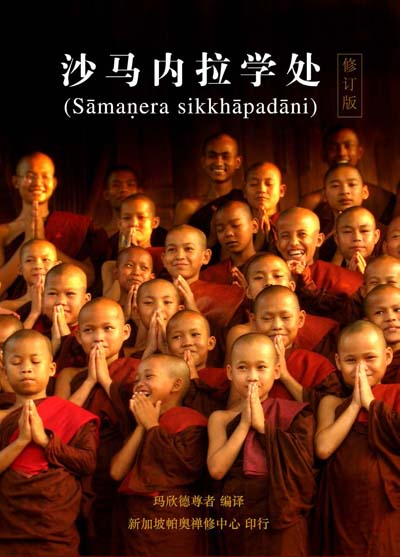
沙马内勒学处
© Mahinda 2011
- 只要不增删、修改本书内容，则任何单位及个人皆可无须经过作者的同意而引用、复印本书。
- 不得以任何商业方式流通本书。
- 您也可以下载“美德雅”APP，获取本书电子版以及其它佛法资料：苹果在App Store下载，安卓扫码下载。
“Sampannasīlā, bhikkhave, viharatha sampannapātimokkhā, pātimokkhasaṃvarasaṃvutā viharatha, ācāragocarasampannā, aṇumattesu vajjesu bhayadassāvino; samādāya sikkhatha sikkhāpadesu.”
——Ākaṅkheyyasuttaṃ Majjhimanikāyo 1.64
“诸比库，要具足戒与具足巴帝摩卡而住，防护巴帝摩卡防护、具足正行与行处而住，见到微细罪过的危险，受持诸学处而学。”
——《中部·若希望经》
目录
序 言
近几年来，越来越多的华人佛弟子开始留意到流传于缅甸、泰国、斯里兰卡等国的南传上座部佛教。南传上座部佛教以其原始朴素的风貌、严谨的道风、严密的教理、系统的禅修次第，正吸引着越来越多热爱正法的人们的青睐和重视。为了更好地学习与实践佛陀所教导的戒、定、慧三学，他们当中有些人在前来南传佛国修习禅观的同时，也请求出家成为沙马内勒或比库，亲身体验一段简单、宁静的梵行生活，一部分人甚至终生献身于追求导向究竟灭苦的正法。
谈到出家，首先要接触与学习的就是戒律。然而，目前在中文世界中可供阅读与参考的戒律书籍可谓屈指可数，至于专门就探讨沙马内勒学处而又不违背上座部传统的书籍则更是寥若晨星。为此，编译者从巴利三藏及其义注中翻译并编写与沙马内勒有关的学处，汇编成册，专供那些有心学戒、持戒的初学者参考和学习，希望能够在某种程度上弥补华人圈中南传上座部佛教戒律书籍紧缺的现况。
本书共分为十二章。第一章介绍跋葛瓦允许男孩出家成为沙马内勒的最初缘起。第二章则是依照缅甸的传统列出沙马内勒出家受戒的程序。
第三章至第五章是跋葛瓦专为沙马内勒制定的学处，共分为三个部分，每个部分各十条。其中，第三章详细讲解沙马内勒十戒，每一条学处皆依“文句分别”“违犯条件”和“不犯”三项来进行解释。第四章和第五章分别为应该灭摈和处罚沙马内勒的各种情况。
从第六章开始到第十章实际上是跋葛瓦为比库们所制定的学处，但由于它们也是沙马内勒应该受持、遵行或应明白的，所以也可以算作是沙马内勒学处的一部分。其中，第六章〈应学法〉是关于出家众进入和坐在俗人住区、托钵时、用餐时、说法时等的行止威仪。第七章〈十四种行仪〉是沙马内勒所应当遵行的行为规范或义务。
第八章是选译自《律藏》的《大品》和《小品》中有关沙马内勒也应当学习与遵行的其它各种学处。第九章所列举的并不属于沙马内勒的学处，但它们却是为了护持比库们持好戒而必须懂得的比库学处。第十章是摘译沙马内勒平时应当省思、念诵的日常作持文。
第十一章是从经律及义注中选译出三则有关佛陀在世时的沙马内勒出家、修行的故事，作为我们今天学习的榜样。
第十二章则以持戒为上座部佛教的传统，能令正法久住（承前启後），是获得世间、出世间功德成就的根本为纲，辑录经律中的佛语教言来赞叹与肯定持戒的功德利益。同时，书後还特编写了〈词语汇解〉，希望能让读者更简明系统地了解与本书有关的一些巴利语专有名词。
本书虽然名为《沙马内勒学处》，但是它对于一切有心学戒、持戒的佛弟子都是有帮助的。对于比库来说，本书中间偏後部分有五章的内容是比库学处，而且在分量上占了全书的一半以上。即使对于前面的沙马内勒所专有的学处，也是作为大众之师的比库们所应当学习与了解的。对于十戒尼或八戒女来说，第二章的〈受戒程序〉和第三章的〈十戒释义〉与她们的学处相差无几，同时第九章的〈护僧须知〉也是她们应当知道的。对于守持八戒或五戒的在家居士而言，其中的〈受戒程序〉和〈十戒释义〉也多有共通之处。只要他们有机会亲近比库和僧团，他们同样也必须明白〈护僧须知〉。
另外，在缅甸、泰国等南传上座部佛教国家有短期出家的传统习俗。然而，僧团对待长期与短期出家者的态度都一样，至于出家时间的长短、何时捨戒还俗则全由其个人自己决定。同时，戒律乃跋葛瓦所制，对于所有在跋葛瓦正法、律中出家的人来说，无论他是长期出家还是短期出家，只要身披袈裟、受人信施，就必须认真地学习与严格地持守。
由于本书是在享有盛誉的持律和止观禅修的上座部佛教寺院——缅甸帕奥禅林(Pa-Auk Tawya Forest Monastery)——编译成书的，因此，在整个编译过程中，笔者可以轻而易举地向多位博学多闻的善知识请教与讨论书中有关的戒律与巴利语等的问题。编译者很荣幸能有机会与这些良师益友们共住并向他们学习。
在此，编译者首先要感谢他最尊敬的亲教师和恩师——缅甸的帕奥西亚多(The Most Venerable Pa-Auk Tawya Sayadaw)，正是西亚多的那份对戒律的严谨以及对传统的忠诚，成为编译本书的基本原则。衷心地感谢缅甸帕奥禅林能背诵整部律藏的Vinayadhara (律藏持者)、Mahā Kammaṭṭhānācariya（业处大导师）Pakhokku Sayadaw U Kovida, 以及Ven. Ukkaṃsa, Ven. Kuṇḍadhāna, Ven. Dhammasāra，斯里兰卡的Ven. R. Sudhammābhivaṃsa等，这些可敬的长老们很耐心地回答了编译者有关书中的疑难问题。感谢台湾Ven. Sujutiko（明德尊者）、性本法师细心地校对书稿并提出许多宝贵的建议，台湾Ven. Sopāka（观净尊者）就本书的整体理念提出了很有建设性的意见。
最後，笔者把编译本书的功德回向给他的父母亲、诸位师长、同梵行者、所有热爱正法的人，以及一切有情，愿大家随喜的功德，能成为早日证悟涅槃的助缘！
Sādhu! Sādhu! Sādhu!
萨度！萨度！萨度！
玛欣德比库
(Mahinda Bhikkhu)
序于缅甸帕奥禅林
2007-05-15
凡 例
1.本书所采用的巴利语底本为缅甸第六次结集的罗马字体CD版(Chaṭṭha Saṅgāyana CD (version 3), 简称CSCD)，必要时也参考巴利圣典协会(P.T.S.)出版的罗马字体版。
2.为了尊重巴利三藏的权威性和神圣性，本书对巴利圣典(Pāḷi)的中文翻译采用了直译法，并用“宋体”字标示。同时，凡对译文加上引号“”者为全译，没加“”者为摘译。
3.对于解释圣典的义注(aṭṭhakathā), 由于偏重于理解，本书多采用意译法，并用“楷体”字标示（但第四章的义注文句仍采用直译法，例外）。同时，编译者对戒律的解释说明也使用“楷体”字，而不另作区别。
4.本书在直译的圣典文句中，凡加上方括号[ ]者为补注，即编译者在翻译巴利语时根据上下文的意思而加入的中文。
5.书中对有些巴利语人名、地名等专有名词，将根据巴利语的实际读音而采用巴利音译法。在这些专有名词第一次出现时，其後也附上罗马体的巴利原文。
6. 为了方便读者对读巴利原典，书中在译文之後往往附有巴利语原典出处。除了经藏《长部》和《中部》的序号为经号之外，其它巴利圣典和义注的序号，都是缅甸第六次结集的巴利三藏(CSCD)的章节序号（见下表）。
7.由于义注是对巴利圣典的解释，其段落序号与圣典相同，故不另行标出。除非有些是从他处译出的相关解释文句。
8.本书所附的巴利原典出处，多数使用缩略语。其缩略语所对应的原典兹举例如下：
·V.1. = Pārājika | 律藏第一册·巴拉基格 |
·V.2. = Pācittiya | 律藏第二册·巴吉帝亚 |
·V.3. = Mahāvagga | 律藏第三册·大品 |
·V.4. = Cūḷavagga | 律藏第四册·小品 |
·V.5. = Parivāra | 律藏第五册·附随 |
·V.A.1. = Pārājika-aṭṭhakathā | 巴拉基格的义注 |
·Vs.A. = Vinayasaṅgahaaṭṭhakathā | 戒律集要义注 |
·D. = Dīgha-nikāya | 长部 |
·M. = Majjhima-nikāya | 中部 |
·A. = Aṅguttara-nikāya | 增支部 |
·Dhp. = Dhammapada | 法句 |
·Vm. = Visuddhi-magga | 清净之道 |
·V.4.108 = Mahāvagga 108 | 律藏·大品 缅文版 第108节 |
·D.16 | 长部 第16经 |
·A.11.1 | 增支部 11集 第1经 |
·Sds.1 | 桑喀地谢思 第1学处 |
·Pc.4 | 巴吉帝亚 第4学处 |
·Np.23 | 尼萨耆亚巴吉帝亚 第23学处 |
Namo tassa bhagavato arahato sammāsambuddhassa!
礼敬那位跋葛瓦、阿拉汉、正自觉者！
第一章 沙马内勒出家缘起
一、沙马内勒的语义
沙马内勒，巴利语sāmaṇera的音译。由samaṇa（沙门）加上表示“子孙、後代”的後缀-era组成，意为沙门之子。是指于跋葛瓦的正法、律中出家、受持十戒之男子。
巴利语法书《句型成就》中解释说：
“Samaṇassa upajjhāyassa putto puttaṭṭhāniyattā'ti sāmaṇero.”
“沙门亲教师的儿子，应处于儿子的地位故为沙马内勒。”
二、拉胡勒出家缘起
在果德玛佛陀的教法时期中，第一位出家成为沙马内勒的人，是佛陀还是在家作为菩萨时的儿子拉胡勒(Rāhula)。
拉胡勒尊者出家的故事记载于《律藏·大品·大篇》：
当时，跋葛瓦于王舍城随意住了之後，向咖毕勒瓦土城(Kapilavatthu)出发游行，次第游行到了咖毕勒瓦土城。
在那里，跋葛瓦住在释迦国咖毕勒瓦土城的榕树园。当时，跋葛瓦于午前穿好下衣，取了钵和衣，前往释迦净饭王的住处。去到後坐在备好的专座上。
当时，拉胡勒母王妃对拉胡勒王子说:“拉胡勒，那是你的父亲，去要继承[财产]吧！”
于是，拉胡勒王子前往跋葛瓦之处，来到後站在跋葛瓦前说:“沙门，您的影子[令人]愉悦！”
当时，跋葛瓦从座起立而离开。于是，拉胡勒王子紧跟在跋葛瓦的後面:“沙门，请给我继承[财产]吧！沙门，请给我继承[财产]吧！”
当时，跋葛瓦对具寿沙利子(Sariputta)说:“沙利子，你让这个拉胡勒王子出家吧！”
“尊者，我要如何让拉胡勒王子出家呢？”
于是，跋葛瓦于此因缘、于此机会说法後对比库们说：
“诸比库，我允许以行三皈依为沙马内勒出家。
拉胡勒王子礼沙利子尊者为亲教师，以行三皈依出家成为佛陀教法中的第一位沙马内勒
诸比库，应如此令出家：首先令剃除鬚髮，披上袈裟衣，偏袒上衣于一肩，礼敬比库们之足，蹲踞而坐，应令合掌而如是说：
‘我皈依佛，我皈依法，我皈依僧；
第二次我皈依佛，第二次我皈依法，第二次我皈依僧；
第三次我皈依佛，第三次我皈依法，第三次我皈依僧。’
诸比库，我允许以此行三皈依为沙马内勒出家。”
于是，具寿沙利子令拉胡勒王子出家。(V.3.105)
由此，年仅七岁的拉胡勒王子以具寿沙利子为亲教师，出家成为跋葛瓦正法、律中的第一位沙马内勒。
第二章 沙马内勒出家受戒程序
一位人选由在家居士到沙马内勒大致须经过剃除鬚髮、请求出家、受三皈十戒等几个步骤。
以下所列举的是依照缅甸传统的沙马内勒出家方式。斯里兰卡和泰国的传统则大同小异。
一、剃除鬚髮
欲请求出家的居士应先居住在寺院，受持三皈八戒或十戒，学习过出家的梵行生活。在此期间，他也应学习做一名净人，为寺院、僧团和比库做些服务工作，同时接受僧团的观察和考验。
经过一段时间的住寺生活之後，人选应向长老陈明自己出家的意愿。如果人选没有出家的障难，长老会以单白甘马的方式（或者以公告的方式）将此出家的事情通知僧团。
到了出家的那一天，准备出家的人选应带齐钵、上衣和下衣、腰带与坐具，按约定的时间来到僧团之处，恭敬顶礼诸比库。
此时，僧团通常会为人选念诵《护卫经》。诵完《护卫经》後，由一位比库为人选剃除鬚髮。
在剃头的时候，负责剃度的比库将会教导人选修习不净业处(asubha-bhāvanā)，即思惟身体五个部分的厌恶不净。人选应按照比库的指示，逐一念诵身体五个部分的名称，同时应思惟这五个部分的厌恶不净：
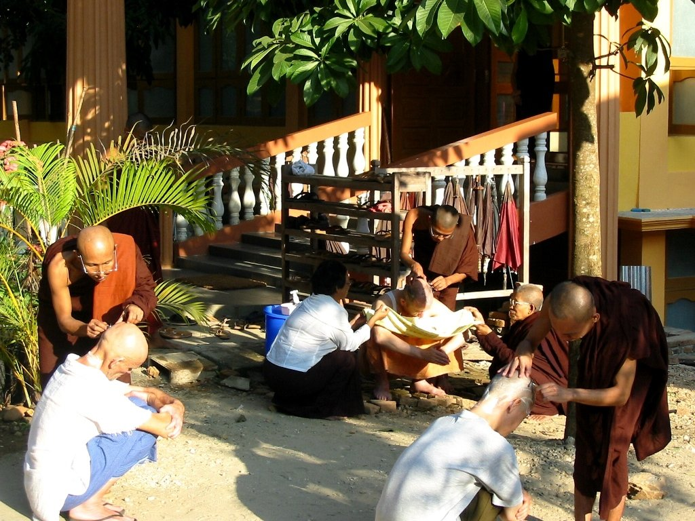
先按顺序思惟：
头髮， 体毛， 指甲， 牙齿， 皮肤；
给萨 罗马 那卡 丹答 答周
然後再逆序思惟：
皮肤， 牙齿， 指甲， 体毛， 头髮。
答周 丹答 那卡 罗马 给萨
如是重复顺逆念诵与思惟许多次，直到鬚髮剃除干净为止。
二、请求出家
剃除鬚髮之後，人选来到僧中，顶礼即将做其亲教师的长老三拜，然後蹲踞着，双手持着袈裟，念诵如下之巴利语各三遍：
萨格勒 瓦德 度克 尼萨勒呢 尼巴-那思 萨其咖勒纳他-亚，伊芒 咖-萨-王 嘎黑德瓦 巴拔-揭特 芒 槃爹 阿奴甘帮 伍巴-达-亚（三遍）
为了完全出离流转之苦，证悟涅槃，请尊者出于慈愍而接受此袈裟，度我出家！
人选把袈裟交给长老，然後念诵：
萨格勒 瓦德 度克 尼萨勒呢 尼巴-那思 萨其咖勒纳他-亚，诶当 咖-萨-王 达德瓦 巴拔-揭特 芒 槃爹 阿奴甘帮 伍巴-达-亚（三遍）
为了完全出离流转之苦，证悟涅槃，请尊者出于慈愍而给那袈裟之後度我出家！
长老把袈裟授予人选，然後由一位比库带人选到屏蔽处，帮人选穿袈裟。
穿好袈裟後，人选来到僧中，顶礼长老三拜，然後蹲踞着，念诵如下之巴利语，请求出家：
槃爹 三萨-勒 瓦德 度克多 摩遮那他-亚 巴拔章 亚-吒-密（三遍）
尊者，为了解脱轮回流转之苦，我请求出家！
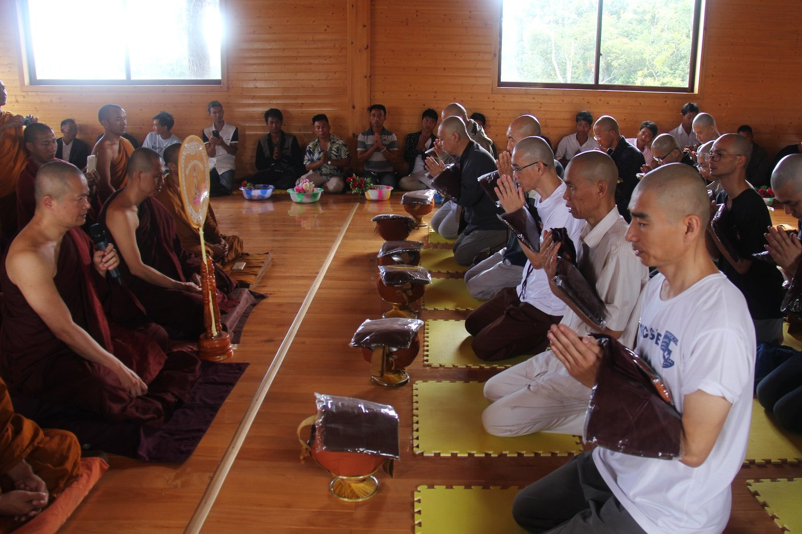
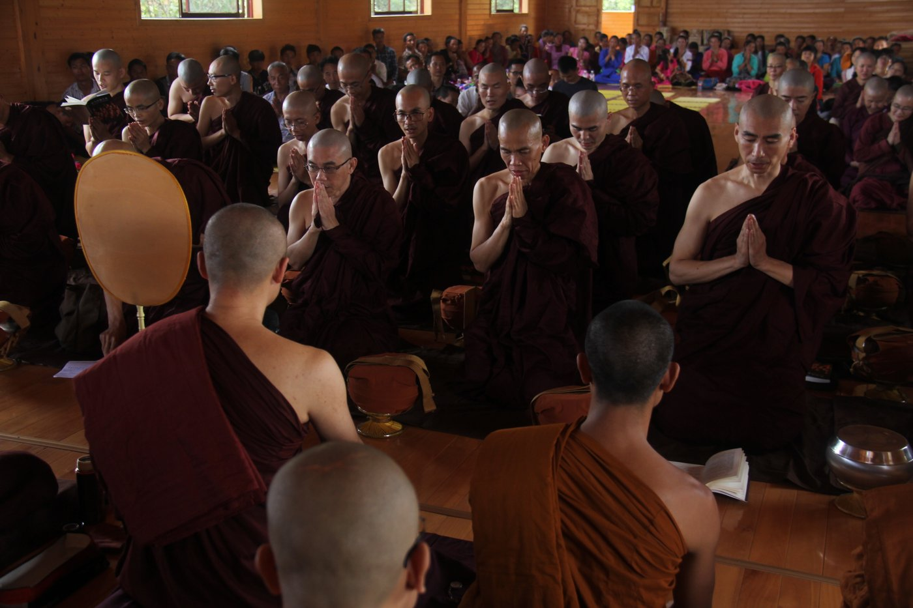
三、受三皈十戒
1. 求受三皈依与沙马内勒出家十戒
接着，人选随长老念诵求受三皈依和沙马内勒十戒文：
阿杭 槃爹 帝萨勒内-呢 萨诃 达思 萨马内勒 巴拔哲 西-朗 昙芒 亚-吒-密 阿奴葛航 嘎德瓦 西-朗 爹特 美 槃爹
尊者，我乞求三皈依和十条沙马内勒出家戒法，请尊者摄受之後授戒给我！
度帝扬比 阿杭 槃爹 帝萨勒内-呢 萨诃 达思 萨马内勒 巴拔哲 西-朗 昙芒 亚-吒-密 阿奴葛航 嘎德瓦 西-朗 爹特 美 槃爹
尊者，我第二次乞求三皈依和十条沙马内勒出家戒法，请尊者摄受之後授戒给我！
达帝扬比 阿杭 槃爹 帝萨勒内-呢 萨诃 达思 萨马内勒 巴拔哲 西-朗 昙芒 亚-吒-密 阿奴葛航 嘎德瓦 西-朗 爹特 美 槃爹
尊者，我第三次乞求三皈依和十条沙马内勒出家戒法，请尊者摄受之後授戒给我！
长老则念：
我念什么你（你们）也跟着念。
阿-马 槃爹
是的，尊者！
2. 行三皈依 (Tisaraṇa-gamaṇa)
长老引导人选礼敬跋葛瓦：
礼敬那位跋葛瓦、阿拉汉、正自觉者！
那摩 达思 帕葛瓦多 阿勒诃多 三马三布他思（三遍）
礼敬那位跋葛瓦、阿拉汉、正自觉者！
接下来长老念行三皈依文，人选跟着念：
布汤 萨勒囊 嘎差-密
我皈依佛，
昙芒 萨勒囊 嘎差-密
我皈依法，
桑康 萨勒囊 嘎差-密
我皈依僧；
度帝扬比 布汤 萨勒囊 嘎差-密
第二次我皈依佛，
度帝扬比 昙芒 萨勒囊 嘎差-密
第二次我皈依法，
度帝扬比 桑康 萨勒囊 嘎差-密
第二次我皈依僧；
达帝扬比 布汤 萨勒囊 嘎差-密
第三次我皈依佛，
达帝扬比 昙芒 萨勒囊 嘎差-密
第三次我皈依法，
达帝扬比 桑康 萨勒囊 嘎差-密
第三次我皈依僧。
接着长老念：
行三皈依已经圆满。
阿-马 槃爹
是的，尊者！
3. 沙马内勒十戒
接着沙马内勒随长老念十戒文：
巴-纳-帝巴-达- 韦-勒马尼- 西卡-巴当 萨马-地亚-密
我受持离杀生学处；
阿丁那-达-那- 韦-勒马尼- 西卡-巴当 萨马-地亚-密
我受持离不与取学处；
阿布拉马吒利亚- 韦-勒马尼- 西卡-巴当 萨马-地亚-密
我受持离非梵行学处；
木萨-瓦-达- 韦-勒马尼- 西卡-巴当 萨马-地亚-密
我受持离虚妄语学处；
苏拉- 美勒呀 马遮 巴马-达他-那- 韦-勒马尼- 西卡-巴当 萨马-地亚-密
我受持离放逸之因的诸酒类学处；
维嘎-勒婆遮那- 韦-勒马尼- 西卡-巴当 萨马-地亚-密
我受持离非时食学处；
那遮 吉-德 瓦-帝德 维苏-格 达思那- 韦-勒马尼- 西卡-巴当 萨马-地亚-密
我受持离观听跳舞、唱歌、音乐、表演学处；
马-喇-甘特 维雷巴呢 塔-勒呢 曼德呢 维普-思那塔-那- 韦-勒马尼- 西卡-巴当 萨马-地亚-密
我受持离用花鬘、芳香、涂香的穿戴、妆饰、装扮之因学处；
伍吒-萨亚呢 马哈-萨亚那- 韦-勒马尼- 西卡-巴当 萨马-地亚-密
我受持离高、大床座学处；
吒德卢巴 拉遮德 巴帝葛诃纳- 韦-勒马尼- 西卡-巴当 萨马-地亚-密
我受持离接受金银学处。
4. 发愿 (Patthanā)
接下来沙马内勒跟着长老念发愿文：
伊当 美 本酿 阿-思瓦卡亚-瓦杭 厚度
愿我此功德，导向诸漏尽！
伊当 美 西朗 尼巴-那思 巴遮优 厚度
愿我此戒德，为证涅槃缘！
5. 请求亲教师
伍巴叉优 美 槃爹 厚hi（三遍）
尊者，请做我的亲教师！
应以净信而成就！
阿-马 槃爹（三遍）
是的，尊者！
四、取法名
沙马内勒出家受戒後，亲教师会给他取一个巴利语的法名。在缅甸，通常会根据沙马内勒在星期几出生来取巴利法名，以一个星期中的某一天所对应的巴利字母来作为法名的第一个音。
星期日：A, Ā, I, Ī, U, Ū, E, O
星期一：K, Kh, G, Gh, Ṅ
星期二：C, Ch, J, Jh, Ñ
星期三：Y, R, L, V
星期四：P, Ph, B, Bh, M
星期五：S, H
星期六：T, Th, D, Dh, N
例如，星期日出生者可取名为Ariyasīla(圣戒)、Uttamaraṃsi(至上光)、Obhāsa(光明)等，星期一出生者可取名为Kusalācāra(善行)、Kovida(精通)、Khemasāra(安稳真实)等，星期二出生者可取名为Cittapāla(护心)、Jotika(光辉)、Ñāṇadassana(智见)等，星期三出生者可取名为Yasavanta(有名闻)、Varissara(愿自在)、Visuddhañāṇa(清净智)等，星期四出生者可取名为Paññāsāmī(慧主)、Bhadda(贤善)、Muninda(牟尼王)等，星期五出生者可取名为Sucitta (善心)、Sobhana(庄严)等，星期六出生者可取名为Thirapuñña(坚固德)、Dhammadīpa(法洲)、Nandasirī (喜吉祥)等。
当然，这并非绝对的，亲教师也可以根据自己的喜好或沙马内勒的愿望来取法名。
第三章 十戒释义
(Dasa-sikkhāpadāni niddeso)
关于沙马内勒应当受持的学处，在《律藏·大篇》中记载：
“Atha kho sāmaṇerānaṃ etadahosi : `kati nu kho amhākaṃ sikkhāpadāni, kattha ca amhehi sikkhitabban'ti? Bhagavato etamatthaṃ ārocesuṃ ... pe ...
`Anujānāmi, bhikkhave, sāmaṇerānaṃ dasa sikkhāpadāni, tesu ca sāmaṇerehi sikkhituṃ : pāṇātipātā veramaṇī, adinnādānā veramaṇī, abrahmacariyā veramaṇī, musāvādā veramaṇī, surāmerayamajja-pamādaṭṭhānā veramaṇī, vikālabhojanā veramaṇī, naccagītavāditavisūkadassanā veramaṇī, mālāgandhavilepanadhāraṇamaṇḍanavibhūsanaṭṭhānā veramaṇī, uccāsayana-mahāsayanā veramaṇī, jātarūparajata-paṭiggahaṇā veramaṇī.
Anujānāmi, bhikkhave, sāmaṇerānaṃ imāni dasa sikkhāpadāni, imesu ca sāmaṇerehi sikkhitun'ti.”
“当时，沙马内勒们这样想:‘我们有多少学处？哪些是我们应当学的呢?’此事报告跋葛瓦，[跋葛瓦说：]
‘诸比库，我允许沙马内勒有十种学处，沙马内勒应学习这些：离杀生，离不与取，离非梵行，离虚妄语，离放逸之因的诸酒类，离非时食，离观听跳舞、唱歌、音乐、表演，离用花鬘、芳香、涂香的穿戴、妆饰、装扮之因，离高、大床座，离接受金银。
诸比库，我允许沙马内勒有这十种学处，沙马内勒应学习这些。’”(V.3.106)
在跋葛瓦的正法、律中，这十种学处是一切出家人最基本的戒行。
以下将根据《律藏》(Vinaya-piṭaka)、律藏义注《普端严》(Samantapāsādikā)、《疑惑度脱》(Kaṅkhāvitaraṇī)和《小诵义注》等圣典以及义注，对沙马内勒十戒的每一条学处，依文句分别、违犯条件与不犯三部分来进行解释。
一、离杀生学处
(Pāṇātipātā veramaṇī)
离杀生学处，有时也译为不杀生戒，也就是戒除杀生的学处。
生，巴利语pāṇā，直译为息生、有息者，即有呼吸的生命。凡是拥有命根的蕴相续，或者执取该蕴相续所施设的有情称为“生”。
“生”包括：
1．人(manussa) ——凡投生于人趣者，从初入母胎的第一个心识（结生心）开始，直到死亡这一段期间都称为“人”；
2．畜生(tiracchāna) ——象、马、牛、狗、鸡，乃至蚊虫、蚂蚁等皆是；
3．非人(amanussa) ——如亚卡(yakkha)、饿鬼(peta)、龙(nāga)、天神(devatā)等。
由于花草树木果蔬等植物没有命根，只属于无意识、不会感受苦乐的“非执取色”(anupādinna rūpa)，并非“生”，故不包括在内。
杀生是指故意夺取有息者的生命。自杀也属于杀生。
杀生的方式既包括自己亲手杀、教他人杀，也包括通过赞叹或鼓励而使对方死亡，以及堕胎等。
具足了五个条件即构成杀生：
1．生命；
2．知道是生命；
3．意图对方死亡；
4．付出努力；
5．由此而死。
以下情况不构成违犯：
1. 非故意——他并没有想“我要以这样的方法来杀死它 (他)”，在没有杀害意图的情况下作出行动导致对方死亡。例如建造房舍时失手掉落石块，不小心压死下面的人。
2. 不知道——他并不知道“通过这样它（他）将会死”而作出行动导致对方死亡。例如在不知情的情况下，把有毒的食物拿去喂狗，那只狗因而被毒死。由于不知情，所以不犯。
3. 没有使对方死的意图——并没有使对方死的意图而作出行动导致对方死亡。例如：当有人生病时拿药给病人吃，他因此得并发症而死。
4. 疯狂者——由于胆汁等的关系而得了无法治疗的狂乱病。
5. 心乱者——由于亚卡等的关系而使心迷乱。当火和黄金、粪便和檀香同时出现时，他都无法分辨好坏。以此为判定的标准。(V.A.1.66,179)
二、离不与取学处
(Adinnādānā veramaṇī)
离不与取学处，有时也译为不偷盗戒。也就是戒除偷盗的学处。
不与取，巴利语adinnādāna。由adinna（没有给与的）+ ādāna（拿取）组成。凡是任何属于他人所有之物，未经物主的允许而取为己有者，即是不与取。
具足四个条件构成不与取，即：
1．属于其他人类所有的物品；
2．明知为他人所有之物；
3．以盗心；
4．偷取。
在律注《普端严》和《疑惑度脱》中解释，“偷取”一共包括二十五种方式——由五类五种所构成：1.种种财物五种；2.一种财物五种；3.亲手五种；4.前方便五种；5.偷盗取五种。
1．种种财物五种(nānābhaṇḍapañcakaṃ)：所谓的“种种财物”是指混合有生命和无生命的财物。
⑴ 占取——即霸占他人的田地、房子等。
⑵ 抢取——例如抢取挑在肩上、顶在头上，或拿在手上的物品等。
⑶ 夺取——主人将财物放在附近，他对主人说:“把这财物给我”等而夺取。
⑷ 破坏威仪——即有人正在搬运财物，他连人和财物一起带走。当搬运者第二脚离开原地时，此人即犯偷盗。偷其它动物也是一样。
⑸ 离开原处——把放在地上、桌上等的财物拿走，或移动离开原处。
2．一种财物五种(ekabhaṇḍapañcakaṃ)：对有主人的奴婢、仆人、动物，以占取、抢取、夺取、破坏威仪、离开原处的方法，为一种财物的五种。
3．亲手五种(sāhatthikapañcakaṃ)：
⑴ 亲手取——亲自偷取他人的财物。
⑵ 教唆取——命令他人说:“你去偷某某物品。”被命令者在偷取时，自己也犯罪。
⑶ 投掷——自己站在关税处内，将应税物往关税处之外投。亦即偷税、漏税。
⑷ 获得利益——命令他人“如果你看到有财物就偷取”等。
⑸ 放弃责任——在霸占他人的土地等，或夺取他人的财物时，当所有主认为“这已不是我的了”而放弃其所有权，即犯。
4．前方便五种(pubbapayogapañcakaṃ)：“方便”(payoga)也可译成努力、加行、方法。即是指教唆、命令的方法。
⑴ 前方便——在命令“你去偷某财物”时为前方便，但在被命令者偷取时才犯罪。所以命令是前方便。
⑵ 俱方便——由离开原处为俱方便。例如为了占取田地而转动、移动柱子等。
⑶ 共谋取——即和其他人商量、讨论後，共同策划而偷取。在共同策划之後，任何一个同谋依他们所约定的而偷取，则所有的同谋皆犯。
⑷ 作约定——即在命令他人偷盗时，约定了偷取的时间，如“你在下午偷取某物品”等。只有被命令者依照所约定的时间偷取，命令者才犯。
⑸ 现相——在命令他人偷取时，以闭眼、手势等作信号。
5．偷盗取五种(theyyāvahārapañcakaṃ)：
⑴ 偷盗取——即是以小偷的方式而破坏门窗等，趁主人不在时偷取。或者以吃斤两、偷尺寸、伪币、伪钞等诈欺而取。
⑵ 强迫取——以暴力夺取他人的财物，亦即抢劫、掠夺；或者运用权力鱼肉（压榨）人民。
⑶ 遍计取——即是在偷取之前，先预谋所要偷取的财物，如衣服、钱财等，但假如看到其它财物则不偷取。
⑷ 隐藏取——先隐藏了所要偷取的物品，过後再回来拿取。例如：在看到了别人丢失的戒指时，先用脚踏入土中，或用尘土、树葉等覆盖，等主人遍找不着後再回来拿取。
⑸ 取筹——即调换筹码、签、券等。例如在用筹码等分配物品时，他为了获得更好的物品而调换筹码。
以下情况不构成违犯：
1. 己物想——误以为是自己的而拿取了别人的物品。因为没有盗心，所以不犯。
2. 亲密取——拿取亲密者的物品。
3. 暂时取——在拿取之时想“我将会归还”“我将会补偿”而暂时借取。
4. 尘堆物想而取——在垃圾堆等看到物品，想“这是没有主人的丢弃物”而拿取。
5. 疯狂者。
6. 心乱者。
7. 极度痛苦者——处于极度痛苦的状态而什么都不知道。
三、离非梵行学处
(Abrahmacariyā veramaṇī)
离非梵行学处，有时也译为不淫戒，也就是戒除性行为的学处。
梵行，巴利语brahmacariya的直译。意为清净、尊贵、值得赞叹的行为；或如清净、尊贵的诸佛、独觉佛、出家圣弟子等清净者们的生活方式。
有五种梵行：1. 佛陀的教法(Buddha-sāsane)；2. 出家修行的生活(pabbajjā)；3. 圣道(ariyamagge)；4. 慈悲喜捨四无量心(appamaññāsu)；5. 避免两性行为(methunaviratiyaṃ)。这里的梵行是指最後一种。
非梵行，巴利语abrahmacariya，为“梵行”的反义词，即性交、交媾、性行为、淫欲法、不净行，是指以染污心发生两性交媾的行为。
性交的对象包括人、非人和畜生。性别则包括女性、男性、般哒格和两性人。
具足两个条件即构成非梵行：
1．以从事之心；
2．以道入道。
“以从事之心”——受乐之心。无论是插入时、插入後、停住或拔出的任何一时中受乐者，即构成违犯。
“以道入道”——以自己的生殖器进入对方之道。
若性交的对象是女人、女非人、雌性畜生或两性人，“道”是指阴道、肛门和口三道。
若性交的对象是男人、男非人、雄性畜生或般哒格，“道”是指肛门和口二道。
无论性交的对象是异性还是同性，当他们达到以道入道的程度并且受乐，即构成违犯。
所谓“达到以道入道的程度”，是指自己的生殖器进入对方之道，即使达到芝麻子大小的程度，也已构成违犯。
自己的肛门接受他人生殖器的插入，也是以道入道。
同时，性交时不论有无使用保险套，皆犯。
以下情况不构成违犯：
1. 不知——熟睡或昏迷时即使遭攻击也不知道。
2. 不受乐——即使知道，但完全没有享受，完全不接受。
3. 疯狂者。
4. 心乱者。
5. 极度痛苦者。
四、离虚妄语学处
(Musāvādā veramaṇī)
离虚妄语学处，有时也译为不妄语戒，也就是戒除说虚妄不实话语的学处。
虚妄语，巴利语musāvādā，又作虚诳语，是指心口相违，说虚妄不实的言语。如没有看见、听到、感觉及不知道，却说看见、听到、感觉及知道，欺骗他人。
说虚妄语除了用口头说出之外，也包括书写及打手势等身体语言，凡是由心存欺骗而作出的行为或语言皆构成违犯。
建议受持离虚妄语学处者也应避免以下三种语言：
1. 离间语(pisuṇāvācā) ——搬弄是非，向A传B的是非，向B传A的是非，离间亲友。
2. 粗恶语(pharusāvācā) ——骂詈咒诅，使他人难堪。
3. 杂秽语(samphappalāpa) ——毫无意义的世俗浮辞，能增长放逸、忘失正念的话题。
具足两个条件即构成虚妄语：
1. 心存欺骗；
2. 以各种方法使人明白。
以下情况不构成违犯：
1. 因冲动等未经思考而急速说出。由于无欺骗之心，所以不犯。
2. 欲说此而误说成彼——由于愚钝等原因，使所说的内容与想要说的不同。
3. 疯狂者。
4. 心乱者。
五、离放逸之因的诸酒类学处
(Surā-meraya-majja-pamādaṭṭhānā veramaṇī)
离放逸之因的诸酒类学处，有时也被不准确地翻译为不饮酒戒。
诸酒类，巴利语surā-meraya-majja，直译为谷酒、花果酒、酒类。也就是戒除服用各种酒类等麻醉品的学处。
谷酒(surā) ——以稻米、糯米等酿制之酒；
花果酒(meraya) ——以花、果等酿制之酒；
酒类(majja) ——只是前面两种酒，以饮之会醉之义为酒类。凡其它任何饮之会醉的，服用了会导致失去理智、神志迷乱的物品，皆称为酒类。
放逸之因(pamādaṭṭhāna) ——导致放逸的原因。因为服用而导致陶醉、放逸的麻醉品，称为放逸之因。
此学处也包括禁止使用一切消遣性的麻醉物品和毒品，例如：香烟、雪茄、鸦片、大麻、摇头丸、迷幻药等。
具足三个条件即构成违犯此学处：
酒类（麻醉品）；
现起想要迷醉、消遣之心；
3. 饮（使）用。
以下情况不构成违犯：
1. 不知道——以为是水或其它饮料而误喝。
2. 饮用不是酒而有酒色、酒香、酒味的咸酸酱、苏打(sutta)或醋等。
3. 为了治病而服用混合有少量酒或吗啡、鸦片等的药品。
4. 为了调味而加入少许酒于肉汤等之中。但如果加入太多酒而使之有酒色、酒香、酒味，喝了则犯。
5. 疯狂者。
6. 心乱者。
六、离非时食学处
(Vikālabhojanā veramaṇī)
离非时食学处，有时也译为过午不食戒，也就是戒除在不适宜的时间内进食的学处。
非时，巴利语vikāla，即不适宜的时间。在日正中时之後至第二天明相出现之间的时段，是诸佛等阿拉汉及一切出家圣弟子不用餐的时段，故称为“非时”。
食，有时也称为药(bhesajja)。根据戒律，有四种药：时限药、夜分药、七日药和终生药。
1. 时限药(yāvakālika) ——限于在明相出现後至日正中时之间的时段才可以食用的食物。因为以日正中时为限，只能吃到那时，故称“时限药”。如律注中解释：
“副食和主食只是到称为日中的时间，只能吃到那时，故为时限药。”(V.A.2.256)
时限药可分为两种，即：
主食(bhojaniya)，也作噉食、正食、软食。
律藏中说:“主食是指五种食物：饭、麵食、炒粮、鱼和肉。”(V.2.239)
a.饭(odano) ——由梗米、稻米、大麦、小麦、黍、粟米、稗子七种谷物的籽实所煮成的饭和粥。
b.麵食(kummāso) ——用大麦(yava)为原料制成的麵食。
c.炒粮(sattu) ——由七谷经烘炒而成；也包括将稻谷炒後所捣成的粉。
d.鱼(maccho) ——包括鱼鳖虾蟹、贝类等一切水生动物。
e.肉(maṃsaṃ) ——禽、兽类的肉、骨、血、皮、蛋等。
⑵ 副食(khādaniya)，也作嚼食、硬食、不正食。khādana，即咀嚼之义。副食是指须经咬嚼的食物，如：水果、植物的块茎类等。
律藏中说:“副食是指除了五种主食、夜分药、七日药和终生药之外的其它食物。”(V.2.239)
除了上面的五类主食以外，一般上用来当食物食用的都可以归纳为副食，例如：蔬果瓜豆等等。除此之外，麦片、豆浆、蕃薯汤、可可、巧克力、奶酪及三合一咖啡也不许在非时服用。根据斯里兰卡及泰国佛教的传承，不加奶精的纯咖啡可以在非时服用。
由于缅甸人把茶葉当食物，故有些缅甸比库过午不喝茶。但斯里兰卡和泰国的比库则认为茶是终生药。
2. 夜分药(yāmakālika)——允许比库于一天之内饮用的未煮过的果汁和蔬菜汁。例如：菠萝汁、芒果汁、苹果汁、橙汁、香蕉汁、葡萄汁等。
跋葛瓦在《律藏·药篇》中说：
“诸比库，我允许八种饮料：芒果汁、蒲桃汁、有籽香蕉汁、无籽香蕉汁、蜜果汁、葡萄汁、莲藕汁、雷蒙子汁。诸比库，我允许一切果汁，除了谷果汁。诸比库，允许一切葉汁，除了菜汁。诸比库，允许一切花汁，除了蜜花汁。诸比库，允许一切甘蔗汁。”(V.3.300)
因为这些饮料可以存放到夜晚的後夜时分，并且必须在翌日明相出现之前饮完，故称“夜分药”。如律注解释说：
“随顺于饮料的和八种饮料一样，只是到夜晚称为後夜时分的夜分，只能饮用到该夜分之时，故为夜分药。”(V.A.2.256)
根据律藏的注释，棕榈果、椰子、菠萝蜜、面包果、葫芦、冬瓜、黄瓜、胡瓜、南瓜这九种大果，以及一切瓜豆类皆被视为是随顺于谷类的，其汁不可用来做夜分药。除此之外，则不存在其它不许可的果汁。
夜分药的制作方法是：由沙马内勒或在家人等未达上者把欲榨成汁的小果等以冷水压挤後，经过滤而成。滤过了的汁可以加进冷开水、糖或盐饮用。
任何经煮过了的蔬菜汁和水果汁皆不可在午後饮用，因为该汁一旦煮过则成了时限药。不过，放在太阳下面加温是允许的。
现在市面上有许多包装果汁如苹果汁、橙汁等，在出厂前为了保存的关系而经过高温消毒，因此也不适合过午饮用。
若比库把夜分药存放到第二天明相出现之後则不得饮用。
3. 七日药(sattāhakālika) ——允许比库在七天之内存放并食用的药。有五种七日药，即：熟酥、生酥、油、蜂蜜和糖。如律注解释：
“熟酥等五种药可以存放七天，以七天的时间故为七日药。”(V.A.2.256)
这里的夜分药和七日药是对比库而言的，而非对沙马内勒。
4. 终生药(yāvajivika) ——又作尽寿药，即没有规定食用期限的药品。此一类的药品并不包括前面的三种药，一般上是用来治病而不是当作食物吃用的。如律注解释：
“除了水之外的其馀一切能终生保存、可在有因缘时服用的称为终生药。”(V.A.2.256)
夜分药、七日药及终生药是在有因缘时服用，如口渴时可饮夜分药，有病时可服七日药和终生药。(V.A.2.241)
混合药——有时不同种类的药可能会混合在一起食用。如果在夜分药、七日药或终生药中加进了时限药，则应视为时限药。例如：枸杞子、党参、肉桂等中药材属于终生药，但是若加进猪肉、鸡肉等一起煲汤时，则成了时限药，不得在非时食用。
沙马内勒可以储存以上种种药。除了时限药必须在午前吃完之外，其馀几种药则没有时间的限制。
具足三个条件即构成非时食：
1. 在非时；
2. 时限药；
3. 吞咽。
以下情况不构成违犯：
1. 有因缘时服用夜分药、七日药或终生药。
2. 反刍者在反刍时，食物不吐出口而吞咽。
3. 疯狂者。
4. 心乱者。
七、离观听跳舞、唱歌、音乐、表演学处
(Nacca-gīta-vādita-visūka-dassanā veramaṇī)
跳舞(nacca) ——各种的舞蹈。
唱歌(gīta) ——任何的歌曲，乃至以歌声诵经唱念。
音乐(vādita) ——各种音乐、演奏。
表演(visūka) ——任何娱乐性的表演，如戏剧、说书、斗牛、斗鸡、斗狗、棍术、拳术、摔跤，以及演习、列阵、阅兵等；也包括上述的跳舞、唱歌和音乐表演。
此学处不仅不可以观听歌舞音乐表演等，也不可以自己跳舞、唱歌、演奏，而且还不可以叫人歌舞等。
具足三个条件即构成违犯此学处：
跳舞、唱歌等其中之一；
没有允许的原因（即为了观看或听）而前往；
看或听。
以下情况不构成违犯：
1. 于自己所在之处看见或听见；如在寺中，或坐车、坐在居士家时。但假如为了观看而走过去，或从座位上站起来则犯。
2. 走路时看见或听见。但若故意转头去看，或故意走近则犯。
3. 在发生灾难时进入表演处而看见或听见。
4. 疯狂者。
5. 心乱者。
八、离用花鬘、芳香、涂香的穿戴、妆饰、装扮之因学处
(Mālā-gandha-vilepana-dhāraṇa-maṇḍana-vibhūsanaṭṭhānā veramaṇī)
花鬘(mālā) ——任何种类的花（花环）。
涂香(vilepana) ——任何为了涂香而把香料捣碎後可用来涂抹的香粉。
芳香(gandha) ——其它的香粉、烟等一切种类之香。
这一切的香油和香粉等化妆品，如果是为了妆饰、装扮的目的而涂抹则犯；但若是为了疗病而当药涂抹则是可以的。
此学处包括不能佩戴头饰、耳环、项链、念珠、戒指、手镯、手珠等装饰品。对于沙马内勒等出家人，连手表也不能戴在手腕，只能挂在腰间或装进袋子里。同时，也不涂抹各种香油、香水、香粉、香料、化妆品等。
持此学处的目的是为了避免使自己更有吸引力，以及避免使他人引生贪欲。
具足三个条件即构成违犯此学处：
1. 花鬘等其中之一；
2. 没有允许的因缘；
3. 佩戴、涂抹或妆饰。
以下情况不构成违犯：
1. 由于皮肤病等因缘而涂抹带有香味的药膏、药粉等。
2. 为了供佛等而接受或拿花、香等。
3. 疯狂者。
4. 心乱者。
5. 极度痛苦者。
九、离高、大床座学处
(Uccāsayana mahāsayanā veramaṇī)
高、大床座，巴利语uccāsayana mahāsayana。
巴利语sayana，直译为床、卧床。在此也包括椅子、床垫、椅垫、坐垫等，故译为“床座”。
高床座(uccāsayana) ——超过规定尺寸的床座。
大床座(mahāsayana) ——不允许的毯子。
《律藏》及其义注提到有二十种高、大床座：
1.高床(āsandiṃ) ——脚高超过规定尺寸的床座。
2.兽脚床(pallaṅkaṃ) ——脚上刻有猛兽像的床座。
3.长毛氍(gonakaṃ) ——长毛的大氍毹，该毛超过四指宽。
4.彩毛毯(cittakaṃ) ——彩绣的羊毛毯。
5.白毛毯(paṭikaṃ) ——羊毛织成的白毯。
6.花毛毯(paṭalikaṃ) ——绣花的羊毛毯。
7.棉垫(tūlikaṃ) ——只填塞天然棉花者。
8.绣像毯(vikatikaṃ) ——绣有狮子、老虎等像的彩色羊毛毯。
9.双面毛毯(uddhalomiṃ) ——双面有毛的羊毛毯。
10.单面毛毯(ekantalomiṃ) ——单面有毛的羊毛毯。
11.宝石绢丝品(kaṭṭhissaṃ) ——四周缝有宝石的绢丝敷具。
12.丝绸(koseyyaṃ) ——四周缝有宝石的由丝线织成的敷具。若是纯丝绸的则适合使用。
13.大地毯(kuttakaṃ) ——可供十六个舞女站着跳舞的羊毛毯。
14.象毡(hatthattharaṃ) ——铺在象背上的敷具。
15.马毡(assattharaṃ) ——铺在马背上的敷具。
16.车毡(rathattharaṃ) ——铺在车上的敷具。
17.羚羊皮蓆(ajinappaveṇiṃ) ——用羚羊皮按床的尺寸缝制成的蓆子。
18.羚鹿皮特级敷具(kadalimigapavarapaccattharaṃ) ——以羚鹿(kadalimiga)之皮制成的特级敷具是最上等的敷具。将羚鹿皮缝在白布上制成。
19.有华盖者(sa-uttaracchadaṃ) ——在床的上方绑有红色伞盖的意思。即使在白色伞盖下面有不允许的敷具也不适合使用；若没有则适合使用。
20.两端有红枕者(ubhatolohitakūpadhānaṃ) ——两端有红色头枕和脚枕的床。若只有一个枕头，即使其两侧是红色、莲花色或彩色的，只要尺寸适当，也是可以使用的；如果是大枕头则是禁止的。
在这二十种床座中，第一种高床和第二种兽脚床为“高床座”，其馀十八种为“大床座”。
然而，佛陀在《律藏·坐卧处篇》中也允许使用脚高超过善至八指宽的方形凳子(āsandiko)和七支椅(sattaṅgo)。(V.4.297)
若获得上述二十种高、大床座，佛陀允许把高床(āsandiṃ)的高脚锯掉，把兽脚床(pallaṅkaṃ)的猛兽像锯掉，把棉垫(tūlikaṃ)里的棉花拆掉之後使用。其馀十七种则可作为地毯使用。(V.4.320)
床垫和坐垫可用布或允许的皮革做套子，里面可以装填除了人毛、达子香(tālīsa)葉和棉花以外的各种毛、树葉、树皮、草和布。(V.4.297)
里头只填塞天然棉花的弹簧床、床褥、坐垫、蒲团等是不允许坐卧的。不过，在俗人家中属于在家人所拥有的棉垫还是可以坐的，但不能躺卧。(V.4.314)
具足两个条件即构成违犯此学处：
高、大的床座；
坐或卧。
以下情况不构成违犯：
1. 不超过规定尺寸的床座。
2. 方凳和七支椅。
3. 除了高床和兽脚床外，在家人所拥有的大床座可以坐，但不得卧。
4. 说法时可坐在高大的法座上。
5. 疯狂者。
6. 心乱者。
十、离接受金银学处
(Jātarūpa-rajata-paṭiggahaṇā veramaṇī)
金，巴利语jātarūpa，为黄金。
银，巴利语rajata，为货币、铜钱、木钱、胶钱等。市面上通用的货币也属于金银。
总之，金钱是指任何可以用来交换商品的等价物，包括金、银、钱币、支票、信用卡等。
接受，巴利语paṭiggahaṇa。若以任何的方式接受(sādiyana)它，称为接受。
有三种接受的方式：
1. 自己拿取(sayaṃ gaṇhāti) ——当有人供养金钱时，他亲自接受；或在任何地方发现不属于任何人的金钱时，他自己拾取。
2. 指使他人拿取(aññaṃ gāhāpeti) ——当有人供养金钱或发现金钱时，他指使别人为自己拿取金钱或代为保管。
3. 同意放在近处(upanikkhittaṃ vā sādiyeyya) ——允许他人将金钱放在自己身旁或某处。
如果施主(dāyaka)手中拿着金钱（或红包等）说:“尊者，我想供养您。”此时，沙马内勒不能接受并且应该说“我们不可接受金钱”或“这是不许可的”等拒绝金钱之语，否则就成了默许；假如沙马内勒指示施主把钱交给某人或放在某处，也属于接受金钱。
如果施主通过言语或动作来传达供养金钱的讯息，例如将钱摆在沙马内勒前面说:“这是供养您的。”或者把钱放在某处，然後说:“在某某地方的那笔钱是给您的。”而他并没有通过身体行为或言语加以拒绝，并且在内心接受它，这也属于接受金钱。
以此三种方式的任何一种接受金银，称为“接受”。
对于出家人来说，没有任何的理由能使接受金钱成为许可！(So na yena kenaci pariyāyena vaṭṭatī'ti.)
正如跋葛瓦在《律藏·大品·药篇》中说：
“诸比库，若人们有信心、净信，他们将金钱放在净人的手中:‘请以此给与圣尊所许可的[物品]。’诸比库，我允许你们接受由此[所得的]许可的[物品]。
然而，诸比库，我不说[你们]能以任何方式接受、寻求金银。”(V.3.299)
根据这段律文，若施主将金钱交给在家净人，委托净人购买如法的物品供养比库，佛陀允许比库们接受通过这种方式的物品供养。然而，无论任何形式的金钱供养都不被佛陀所允许。
因此，若施主拿着钱但并没有指明说要供养给沙马内勒，而只是问:“尊者，您有净人吗?”或“请问您的净人是谁?”他则可指出谁是净人。
另外，如果施主说:“我要供养您必需品/资具，价值若干元，请问您的净人是谁?”如此，沙马内勒也可告诉他净人是谁。
沙马内勒除了不得接受金钱之外，也不得从事各种金钱交易和各种买卖。当沙马内勒需要某物品（例如钵）时，他可向在家净人说:“我需要一个钵。”而不应说:“帮我买一个钵。”假如有某物品是沙马内勒亲自用钱所买的，则包括比库在内的所有出家众皆不能接受和使用。这一点和比库学处相同。(V.1.588, 594, 597)
具足三个条件即构成违犯此学处：
1. 金银；
2. 为了自己；
3. 以三种方式中的任何一种接受。
以下情况不构成违犯：
1. 在寺院或居所内捡到他人遗失的金钱，在算了多少价值後，存着归还主人的心而暂时保管者。
2. 疯狂者。
3. 心乱者。
第四章 十种灭摈事
(Dasa nāsanavatthu)
跋葛瓦在《律藏·大篇》中说：
“Anujānāmi, bhikkhave, dasahaṅgehi samannāgataṃ sāmaṇeraṃ nāsetuṃ. Pāṇātipātī hoti, adinnādāyī hoti, abrahmacārī hoti, musāvādī hoti, majjapāyī hoti, buddhassa avaṇṇaṃ bhāsati, dhammassa avaṇṇaṃ bhāsati, saṅghassa avaṇṇaṃ bhāsati, micchādiṭṭhiko hoti, bhikkhunidūsako hoti. Anujānāmi, bhikkhave, imehi dasahaṅgehi samannāgataṃ sāmaṇeraṃ nāsetun'ti.”
“诸比库，我允许灭摈具足十支的沙马内勒：杀生，不与取，非梵行，虚妄语，饮酒，谤佛，谤法，谤僧，邪见，污比库尼。诸比库，我允许灭摈具足此十支的沙马内勒。”(V.3.108)
律藏的义注《普端严》解释说：
“这里有三种灭摈：共住灭摈(saṃvāsanāsana)、形相灭摈(liṅganāsana)和处罚灭摈(daṇḍakammanāsana)。
其中，对不见罪等而被举，名为共住灭摈。‘应灭摈污行者，你们灭摈慈比库尼！’这名为形相灭摈。‘贤友沙马内勒，从今以後你不能声称跋葛瓦为导师。’这名为处罚灭摈。”(V.A.2.428)
“这里的‘诸比库，我允许灭摈具足十支的沙马内勒’，是指在解释‘甘嗒格学处’所说的三种灭摈当中的形相灭摈的意思。
因此，对于杀生等即使才造作一项者，也应当以形相灭摈而灭摈他。对于杀生等，比库有不同的罪，但沙马内勒并非如此。沙马内勒哪怕只是杀死蚂蚁，或者弄破鱼卵，也足已构成应灭摈。在这种情况下，他的皈依、所求取的亲教师与所居住的住所都失效，他不得[受用]僧团的所得。他所剩下的也只是[出家的]外形而已。假如他还屡犯过失，对未来也不住于守护，应当把他驱出。不过，若他迅速认错:‘我做了恶行’而想要再守护，则不必形相灭摈。如此应给他披衣，授予皈依，授予亲教师，而其学处则是以皈依得成就。沙马内勒的皈依等同于比库在达上时的甘马语。因此应如比库的四种清净戒一样来受持此十种学处。如果[其戒]仍存在，但为了令坚固，为了于未来能住于守护，也应当再授予。如果他受皈依并且入前[雨安居]，他能获得住後安居者[的僧团利得]；若是入後[雨安居]者，经僧团同意後也可分与利得。
对于不与取，哪怕是草葉之量的物品；对于非梵行，无论于三道中的哪一道行淫；对于虚妄语，即使是为了开玩笑而说虚妄语，也已成非沙门，应当灭摈。对于饮酒，若比库不知而饮了由种子[经放置]以後[所变成]的酒者，也犯巴吉帝亚；而沙马内勒只有在故意喝时才构成破戒，而非不知道。
若是破了其它的五种学处，不应灭摈，而应当处罚。无论再授予或不再授予学处都可以，只应施与处罚而惩罚，以令他于未来住于守护即可。但沙马内勒有心喝酒为巴拉基格事，此乃差别。
对于诽谤，以与‘阿拉汉、正自觉者’等相反的[方式诽谤]佛；以与‘善说’等相反的[方式诽谤]法；以与‘善行道者’等相反的[方式]诽谤僧。在他诋毁、非难三宝时，其老师、亲教师等[应阻止]‘不要这样说’，应让他见到诽谤的过患而遮止。在《古伦地注》说:‘如果在乃至第三次的劝告时还不停止，即应以障碍灭摈的方式而灭摈。’在《大义注》说:‘如果在如此劝告时他捨弃那邪执，进行处罚後应令他忏悔过失。如果他不捨弃，仍然如此执取、坚持、住立，应当以形相灭摈而灭摈。’这是适当的。只有这种灭摈是这里的意思。
对于邪见者也是以此方式[来灭摈]。对于持常见或断见的其中之一种邪见者，如果在老师等教诫时捨弃了，进行处罚後应令他忏悔过失。若不捨弃，应当灭摈。
污比库尼者，当中的欲乐只以非梵行来理解。对非梵行者，若他想要守护未来的话，是可以授予皈依、达上的。但是污比库尼者即使想要守护未来，也不得出家，更何况达上！这是显示‘污比库尼者’之义。当知这是对十支的各别解说。”(V.A.3.108)
由上可知：若沙马内勒在故意违犯杀生、不与取等十种应灭摈事中的任何一种行为时，即可对他作出“形相灭摈”，亦即勒令还俗。沙马内勒甚至只是故意打死一只蚊子，或者带开玩笑地故意撒谎等，也足已构成对他实行形相灭摈。在这种情况下，即使他没有还俗，但也已经失去了沙马内勒的身份，或者说他已不再是出家人了（非沙门）。在失去沙马内勒身份的同时，他对佛法僧的皈依、他所依止的亲教师也都自动失效。他既没有资格居住僧团的住所，也不能像以前那样接受信众的供养和享用僧团所得的利益。此时，他所剩下的也只是披着袈裟的外形而已，并没有任何作为沙马内勒的内在素质。
对于比库来说，即使是无意中把酒误以为水而喝了，也犯巴吉帝亚。然而，沙马内勒只有故意喝酒或服用麻醉品才算破戒，也即是巴拉基格，丧失了沙马内勒的身份。若是无意中喝了酒或服用麻醉品则不构成破戒。这是与比库学处不同的地方。
若沙马内勒知道自己违犯了故意杀生、不与取、非梵行、虚妄语、饮酒等学处，他应当尽快去找其原来的亲教师，向原来的亲教师坦诚地承认错误，并请求重新授予三皈依和十戒，以恢复沙马内勒的身份。受完三皈依和十戒之後，也应再次请求亲教师，以恢复其师徒的关系。
比库的身份是在僧团举行达上甘马时，在第三次甘马语完结时得以成就的；而沙马内勒的身份则是在亲教师授予其三皈依完结时得以成就的。
假如沙马内勒在犯错後不思悔改，而且态度恶劣、屡教不改，亲教师必须把他赶走。
基于沙马内勒的身份很容易失去，故传统上要求沙马内勒在每月的四个斋戒日到亲教师处重新求受三皈依和十戒，或者按照亲教师所规定的时间（如每周一次）前往受戒。即使他并没有破戒，亲教师也可为了使其戒更加坚固、使其以後能够更加谨慎地守持好戒而给他授戒。
若沙马内勒故意违犯十条学处中的後面五条，比如说吃晚餐、听音乐或接受金钱等，其亲教师有责任要教训他，并令他做一些诸如挑水、搬东西、清洁卫生等工作来惩罚他。由于违犯这五条学处还不至于构成应实行形相灭摈，因此是否重新授戒给他都无所谓。
假如沙马内勒诽谤佛法僧三宝，或者执持诸如有灵魂存在、人死之後什么都没有、没有三世因果等邪见时，其亲教师、老师等都有义务要阻止他，劝他捨弃这些邪执。若他肯承认错误、放弃邪执，在对他进行处罚之後令他忏悔过失即可。假如他仍然坚持错误，顽愚不化，则应以形相灭摈而勒令其还俗。
假如沙马内勒被贪欲所击败而发生性行为，过後他还是可以成为在家居士的。如果他想要出家的话也可以成为沙马内勒，甚至还可以达上成为比库。但是，假如沙马内勒以暴力等方式奸污清净比库尼，日後他既不能出家成为沙马内勒，也不能达上成为比库。
为了帮助理解，今把此十种应灭摈事列于下表：
违犯 | 悔改 | 不悔改 |
杀生 | 重新受戒 | 形相灭摈 |
不与取 | 重新受戒 | 形相灭摈 |
非梵行 | 重新受戒 | 形相灭摈 |
虚妄语 | 重新受戒 | 形相灭摈 |
饮酒 | 重新受戒 | 形相灭摈 |
谤佛 | 处罚後令忏悔 | 形相灭摈 |
谤法 | 处罚後令忏悔 | 形相灭摈 |
谤僧 | 处罚後令忏悔 | 形相灭摈 |
邪见 | 处罚後令忏悔 | 形相灭摈 |
污比库尼 | 形相灭摈 | 形相灭摈 |
第五章 各种处罚事
(Daṇḍakammavatthu)
一、十种处罚事
跋葛瓦在《律藏·大篇》中说：
“Anujānāmi, bhikkhave, pañcahaṅgehi samannāgatassa sāmaṇerassa daṇḍakammaṃ kātuṃ. Bhikkhūnaṃ alābhāya parisakkati, bhikkhūnaṃ anatthāya parisakkati, bhikkhūnaṃ avāsāya parisakkati, bhikkhū akkosati paribhāsati, bhikkhū bhikkhūhi bhedeti. Anujānāmi, bhikkhave, imehi pañcahaṅgehi samannāgatassa sāmaṇerassa daṇḍakammaṃ kātun'ti.”
“诸比库，我允许对具足五支的沙马内勒进行处罚：致力于使比库们无所得，致力于使比库们不利，致力于使比库们无住所，恶骂比库，使比库与比库分裂。诸比库，我允许对具足此五支的沙马内勒进行处罚。”(V.3.107)
对此，律注《普端严》解释说：
致力于无所得(alābhāya parisakkati) ——得不到所得的利养，他为如此而努力。
不利(anatthāya) ——遭受不幸。
无住所(avāsāya) ——为了不能住在这里的住所而努力。
恶骂(akkosati) ——既使感到危险又恐吓地恶骂。
分裂(bhedeti) ——挑拨离间而导致分裂。
《普端严》在解释沙马内勒十种学处时又说：
“对于十种学处，违越前面五种为灭摈事，违越後面[五种]为处罚事。”(V.A.3.107)
《律摄义注》也说：
“以所说的这五支，和诸学处中後面的非时食等五种，为十种处罚事。”(Vs.A.150)
因此，比库可以对犯有以下十种行为之一的沙马内勒进行处罚：
1. 非时进食；
2. 故意观听跳舞、唱歌、音乐或表演等；
3. 使用妆饰、装扮之因的花鬘、芳香、涂香等；
4. 坐卧高、大床座；
5. 接受金银钱；
6. 图谋使比库们无所得；
7. 图谋使比库们不利；
8. 图谋使比库们无住所；
9. 恶骂比库；
10.离间比库。
二、处罚方法
怎样处罚呢？跋葛瓦说：
“诸比库，我允许无论[沙马内勒]住在哪里或回去哪里，都可作阻碍。”(V.3.107)
也即是说，处罚沙马内勒的方法是无论他住在哪里或想进入哪里，都可以阻止他说:“不许进入这里。”这两种方法皆适用于自己的房间和他已经分得的住所。但是，这并不等于说整座寺院都禁止他进入，就如佛陀说:“诸比库，整座僧园不得作阻碍。若作者，犯恶作。”同时，也不得禁止他吃饭，如说:“诸比库，入口的食物不得作阻碍。若作者，犯恶作。”所以，佛陀所说的处罚主要是指对住所的阻碍。
不过，编集法的长老们认为，对于犯有罪过的沙马内勒，可指令他们做一些诸如挑水、搬柴、扛沙、清洁卫生等工作。当然，这样的处罚只是出于悲愍而惩罚和教训他们，并不是恶意要让他们消失或还俗。即使是处罚，用睡在炽热的石头上、头上顶着砖瓦或浸泡在水中等方法来体罚他们也都不适合。(V.A.3.107; Vs.A.150)
处罚沙马内勒通常是亲教师的责任。如果其他比库想处罚犯错的沙马内勒，必须先征得其亲教师的同意。就如佛陀说:“诸比库，未问过亲教师不得作阻碍。若作者，犯恶作。”(V.3.108) 如果其他比库发现有沙马内勒犯错，应告知其亲教师:“您的沙马内勒犯了这样的罪过，请处罚他。”假如说了三次其亲教师都不处罚他，那自己处罚也可以。如果其亲教师一开始就说:“只要我的沙马内勒犯有过失，你都可以处罚他们。”那以後直接处罚都是适当的。就如沙马内勒，这样处罚其弟子或门生也是适合的。(V.A.3.108; Vs.A.150)
三、四种违犯
另外，沙马内勒也不应违犯故意出精、摸触女人、对女人说粗俗语、向女人要求性爱侍奉等对比库来说属于“桑喀地谢思”的四种学处。
下面，我们将根据律藏和义注简单地解释一下这四条学处。
Sds.1 “故意出精，除了梦中外，桑喀地谢思。”(V.1.236)
“故意出精”(sañcetanikā sukkavissaṭṭhi)，即有意让精液流出，有点类似手淫，不过律藏提及的方式有九种之多。
具足三个条件即构成故意出精：
有出精的动机(cetanā)；
有动作(upakkamo)；
精液流出(muccana)。
以下情况不构成违犯：
1. 无动作(anupakkamantassa)。
2. 没有出的意图(amocanādhippāyassa)。
3. 做性梦而遗精(supinaṃ passantassa)。
4. 疯狂者等(ummattakādi)。
Sds.2 “若比库以贪爱、变易之心与女人发生身体相接触，或捉手，或捉髮，或摩触任何部分者，桑喀地谢思。”(V.1.270)
以贪染之心和女人的皮肤、头髮等身体部分相接触，包括碰触、牵手、抚摸、拥抱等。
具足五个条件即构成摸触女人：
1. 对象是女人；
2. 明知是女人；
3. 有身体相接触的贪染心；
4. 因该贪染而付出努力；
5. 牵手等。
以下情况不构成违犯：
1. 女人来碰触时，即使内心有接触的意图，但身体不动而同意对方摸触。如坐着不动给女医生把脉等。
2. 被女人抓住时为了挣脱而与女人碰触。
3. 非故意。
4. 无念。
5. 不知。
6. 不接受。
7. 疯狂者等。
Sds.3 “若比库以贪爱、变易之心对女人说粗俗语，犹如少男对少女[说]与淫欲相关者一样，桑喀地谢思。”(V.1.284)
“粗俗语”(duṭṭhullā vācā)，即有关阴道、肛门、性交等粗俗下流的语言。
具足五个条件即构成说粗俗语：
1. 对象是女人；
2. 明知是女人；
3. 有说粗俗语的贪染心；
4. 因该贪染心而说；
5. 对方当时即明白。
当然，在尊重法、尊重教授等前提下无贪染心而说则不犯。
Sds.4 “若比库以贪爱、变易之心于女人面前，赞叹以欲侍奉自己而说:“姐妹，这是最上的侍奉，像我这样的持戒者、善法者、梵行者，应该以此法来侍奉。”与淫欲相关者，桑喀地谢思。”(V.1.291)
这条学处是要求女人用性爱来侍奉自己。
具足五个条件即构成侍奉己欲：
1. 对象是女人；
2. 明知是女人；
3. 有侍奉自己欲望的贪染心；
4. 因该贪染心而赞说；
5. 对方当时即明白。
如果赞说侍奉衣服等物品则不犯。
律注《普端严》指出，若比库违犯了这一类学处，属于“粗恶罪”(duṭṭhulla āpatti)，但对于未达上者(anupasampanna)来说则称为“违犯”(ajjhācāro)。(V.A.2.82) 《律裁决复注》说，沙马内勒等未达上者若有故意出精等行为也属于处罚事(daṇḍakammavatthupakkhaṃ bhajanti)。
四、其它处罚事
律藏义注又提到，亲教师应告知沙马内勒所有许可、不许可的(kappiyākappiyaṃ)，教导他穿着上下衣等增上行仪(ābhisamācārikesu vinetabbo)。(V.A.3.34; Vs.A.148) 《心义解疏》(Sāratthadīpanī-ṭīkā)《金刚觉复注》(Vajirabuddhi-ṭīkā)等复注解释，“应教导增上行仪”是指沙马内勒须圆满应学法、对亲教师的行仪等各种增上行仪戒。如果沙马内勒不做应该做的，以及做了不应该做的事，皆应受处罚(daṇḍakammāraho)。《去除疑虑复注》(Vimativinodanī-ṭīkā)和《律庄严复注》(Vinayālaṅkāra-ṭīkā)进一步说，“增上行仪”是指应学法和行仪篇中的诸行仪，至于其它的故意出精等世间罪学处也是沙马内勒应遵行的。假如沙马内勒无耻地不遵行这些，应给予处罚。
所以，沙马内勒的处罚事实际远远超过上面所说的五支或十种行为那么多。除了沙马内勒十条学处中的前面五条属于灭摈事之外，只要沙马内勒做了不应该做的事，或者应该做的事不去做，都可以对其进行处罚。
为了更全面地学习和受持沙马内勒的学处，在接着的几章中，我们将解释跋葛瓦为比库们制定的，同时也是沙马内勒应遵行的学处。其中的第六章〈应学法〉和第七章〈十四种行仪〉属于“增上行仪”，第八章至第十章则属于“许可、不许可的”。
第六章 应学法
(Sekhiyā dhammā)
应学法(Sekhiyā dhammā)一共有75条，收录于比库、比库尼每半月半月应诵的《巴帝摩卡》戒经之中。应学法的内容是关于出家众进入和坐在俗人住区、托钵时、用餐时、说法时等的行止威仪。假如比库以漫不经心的态度（不恭敬）违犯这些学处，则犯恶作。但是非故意者、无念者、不知者，或在有病时、发生灾难时则不犯。
这些学处对于沙马内勒也同样是应当学的。
1．“我将齐整地下着。”应当学。
在该学处的“文句分别”中解释“齐整地下着”为:“应齐整地覆盖脐轮(nābhimaṇḍalaṃ)和膝轮(jānumaṇḍalaṃ)而穿着。”
在穿着下衣(antaravāsaka)时，上面应覆盖住肚脐，下面应遮住膝盖。站着时下衣之下摆应在从膝骨往下算起的八指宽处。盘腿时则衣之下摆应在膝下的四指宽处。无论在寺院里，还是在村落中，皆应如此地下着。
假如比库由于漫不经心而在穿着下衣时前面或後面垂下，或者把下衣像在家人一样穿着者，犯恶作。
2．“我将齐整地披衣。”应当学。
我将齐整地披衣(parimaṇḍalaṃ pārupissāmi)——应使衣的两角齐平而整齐地披着上衣。
披着上衣时，先以双手抓住衣的上两端，在背後展开拉直，把衣的上沿中部担在肩上，然後以右手带衣绕过右腋，露出右臂而把衣披搭在左肩上。上衣的下沿应遮盖住下衣的下摆 (缅甸的穿法则应高于下衣的下摆四指量)。这种披着上衣的方式称为“偏袒右肩”(ekaṃsaṃ uttarāsaṅgaṃ karoti)。
应避免各种像穿在家人的衣服一般的穿着方式，如把上衣像披肩一样披在两肩而露出胸口，或像围巾一般围在脖子上等等。
无论在寺院里，还是在村落中，皆应齐整地穿着上下衣。假如以不恭敬的态度而作任何变化地披衣者，犯恶作。
3．“我将善披覆而行于俗家间。”应当学。
4．“我将善披覆而坐于俗家间。”应当学。
善披覆(suppaṭicchanno) ——很好地披覆。披覆时，先以上衣的上沿包覆住颈项，再把衣端的
宅等处。
上：上衣偏袒右肩下：上衣善披覆上：上衣偏袒右肩下：上衣善披覆
两个角对齐重叠在一起，卷成圆筒状，然後顺着左肩缠绕着左臂。如此覆盖住双肩，只露出头部、双手和双脚——从喉结处开始露出头部，从手腕处开始露出双手，从腓肠肌处开始露出双脚——其馀的身体部分则为上衣所包覆着。
俗家间(antaraghare) ——村庄、乡镇、城市等在家人居住的地方，包括街巷、马路、市场、住宅等处。
比库在寺院、山林、野外可以偏袒右肩而披上衣。但在俗人住区则应善披覆上衣。进入俗人住区之前，应先遮盖住三轮而齐整地穿好下衣，绑好腰带，再披覆好上衣，系好纽结。假如不善披覆上衣而露出肩膀或胸部者，犯恶作。
5．“我将善摄护而行于俗家间。”应当学。
6．“我将善摄护而坐于俗家间。”应当学。
7．“我将眼垂视而行于俗家间。”应当学。
8．“我将眼垂视而坐于俗家间。”应当学。
9．“我将不拉高[衣]而行于俗家间。”应当学。
10．“我将不拉高[衣]而坐于俗家间。”应当学。
第一 齐整品
11．“我将不高声嬉笑而行于俗家间。”应当学。
12．“我将不高声嬉笑而坐于俗家间。”应当学。
13．“我将低声而行于俗家间。”应当学。
14．“我将低声而坐于俗家间。”应当学。
15．“我将不摇身而行于俗家间。”应当学。
16．“我将不摇身而坐于俗家间。”应当学。
17．“我将不摇臂而行于俗家间。”应当学。
18．“我将不摇臂而坐于俗家间。”应当学。
19．“我将不摇头而行于俗家间。”应当学。
20．“我将不摇头而坐于俗家间。”应当学。
第二 高声嬉笑品
21．“我将不叉腰而行于俗家间。”应当学。
22．“我将不叉腰而坐于俗家间。”应当学。
23．“我将不覆头而行于俗家间。”应当学。
24．“我将不覆头而坐于俗家间。”应当学。
25．“我将不踮脚而行于俗家间。”应当学。
踮脚(ukkuṭika) ——其原意为双腿弯曲、脚跟抬起、臀部枕在脚跟的蹲踞姿势。义注中解释说:“于此，称为‘踮脚’乃是指提起脚跟或脚尖後，只是以脚尖或脚跟触地踮着行走。”
26．“我将不抱膝而坐于俗家间。”应当学。
不抱膝(na pallatthikāya) ——即不应以手抱膝或以衣抱膝。
27．“我将恭敬地接受钵食。”应当学。
28．“我将注意钵而接受钵食。”应当学。
29．“我将以等量之羹而接受钵食。”应当学。
羹(sūpa) ——用绿豆、蚕豆和豌豆等所煮成的、可以用手抓取的豆羹。除了这种豆羹之外，其它的蔬菜、鱼汁、肉汁等只属于调味料(rasarasa)或汤(sūpeyya)。
假如所接受的豆羹超过食物比例的四分之一者，犯恶作。
30．“我将平钵而接受钵食。”应当学。
平钵(samatittika) ——直译为平满，等满，齐平。即所接受的食物不超过钵口的边缘线。
这里的钵食(piṇḍapātaṃ)是指所有的时限药。对于夜分药、七日药等，即使超过钵口堆成塔状也可以。
如果在托钵时把一些食物放在钵盖上，或身旁有净人帮忙拿取食物，则不易犯此学处。
第三 叉腰品
31．“我将恭敬地食用钵食。”应当学。
32．“我将注意钵而食用钵食。”应当学。
33．“我将次第地食用钵食。”应当学。
34．“我将以等量之羹而食用钵食。”应当学。
35．“我将不从顶部捏取而食用钵食。”应当学。
从顶部(thūpakato) ——从顶端、从中央开始的意思。如果只剩下少量饭菜时，把它们集中在一起後揉捏而食用则不犯。
36．“我将不以饭覆盖羹或菜而想要取得更多。”应当学。
37．“无病时我将不为自己乞求羹或饭而食用。”应当学。
38．“我将不以不满想而观看他人之钵。”应当学。
如果想要给他食物、想叫人给而观看，或并没有心存不满则不犯。
39．“我将不作大饭团。”应当学。
40．“我将做圆的团食。”应当学。
第四 恭敬品
41．“在饭团未持到时我将不张口。”应当学。
42．“用餐时我将不把手全部塞入口中。”应当学。
43．“我将不口含饭团说话。”应当学。
44．“我将不投掷团食而食。”应当学。
45．“我将不咬断饭团而食。”应当学。
这里的饭团(kabaḷa)也包括面条、面包、饼干、糕点等，不能直接用嘴咬断来吃，只能瓣成一小块一小块送进口中吃。但对于副食、各种大小果实、菜肴(uttaribhaṅge)则不犯。
46．“我将不塞满口而食。”应当学。
47．“我将不甩手而食。”应当学。
48．“我将不散落饭粒而食。”应当学。
49．“我将不伸舌而食。”应当学。
50．“我将不作喳噗喳噗声而食。”应当学。
第五 饭团品
51．“我将不作苏噜苏噜声而食。”应当学。
52．“我将不舔手而食。”应当学。
53．“我将不舔钵而食。”应当学。
54．“我将不舔唇而食。”应当学。
55．“我将不以沾有食物的手拿饮水器。”应当学。
无论是僧团的、个人的、在家人的还是自己所有的贝壳、碗、杯子都不应拿。假如手的一部分没沾有食物，则可以那部分拿取。
56．“我将不把有饭粒的洗钵水倒于俗家间。”应当学。
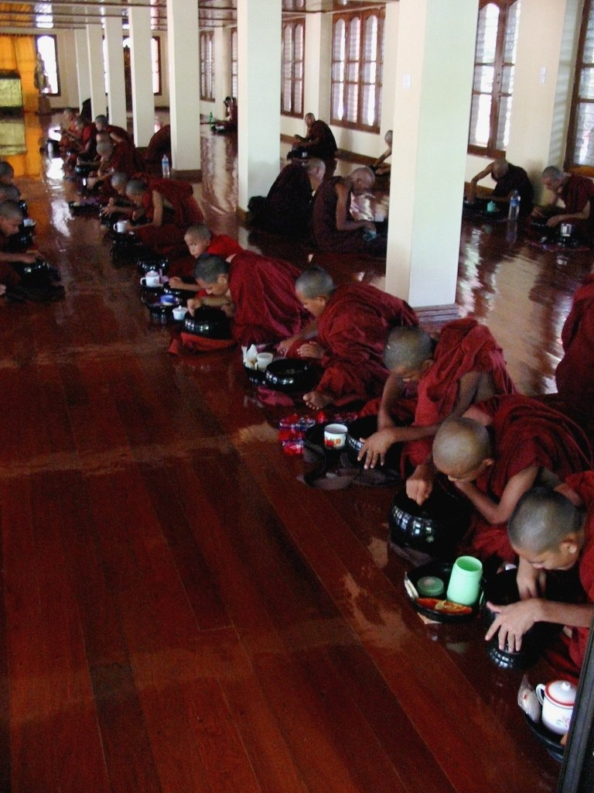
从第31条到56条学处是关于一位出家人在用餐时的威仪。用餐前，先铺好坐具，准备弃食器皿等，洗好手，盘腿坐下来，在如理省思过食物之後，再有正念地慢慢用餐。由于佛陀在世时并没有汤匙、筷子，比库们是用手取食的 (现在仍有许多比库用手吃饭)。用餐时，以右手从钵中的食物堆边沿开始取食，用手指把饭菜揉捏成大小适中的饭团後，才往嘴边送。食物到嘴边时才张开嘴巴，用右拇指把饭团推进口中，然後闭嘴慢慢咀嚼、吞咽。应缓缓地进食，不得狼吞虎咽。
57．“我将不对无病而手持伞者说法。”应当学。
无论伞放在身体的任何部分，只要手还没有离开伞，就不应对其说法。假如有其他人打伞，或者把伞放在一旁，只要伞已离手，则不名为手持伞，可以对他说法。
法(dhamma) ——佛陀所说、弟子所说、仙人所说、天人所说，具足义、具足法者。
58．“我将不对无病而手持杖者说法。”应当学。
这里的“杖”(daṇḍa)是指中等身材男子四肘长（约2米）的杖；高度超过者和不足者都不算“杖”。
持杖的情况和持伞所说的方式一样。
59．“我将不对无病而手持刀者说法。”应当学。
若只是以剑武装而站着则不算手持刀。
60．“我将不对无病而手持弓箭者说法。”应当学。
一切种类的弓以及各种箭都算。假如把弓背在肩上，只要没有拿着，就可以对他说法。
第六 苏噜苏噜品
61．“我将不对无病而穿拖鞋者说法。”应当学。
62．“我将不对无病而穿鞋者说法。”应当学。
63．“我将不对无病而坐在车上者说法。”应当学。
如果两人同坐在一辆车上则可以。若是坐在前座，可以对坐後座者说法。但若坐在後面，即使是坐在更高的座位上，也不可说法。
64．“我将不对无病而躺卧者说法。”应当学。
即使自己站在或坐在高床上、椅子或高地，也不可对躺在地上的人说法。
自己躺着可以对站着、坐着或躺着者说法；坐着可以对站着或坐着者说法；站着只能对站着者说法。
65．“我将不对无病而抱膝坐着者说法。”应当学。
66．“我将不对无病而缠头者说法。”应当学。
67．“我将不对无病而覆头者说法。”应当学。
68．“我将不坐在地上对无病而坐在座位者说法。”应当学。
甚至只是以布或草铺着而坐，也属于坐在座位上。
69．“我将不坐在低座对无病而坐在高座者说法。”应当学。
70．“我将不站着对无病而坐着者说法。”应当学。
假如自己站着，即使是坐在座位上的大长老问问题也不应说。为了表示尊重，不能请长老站起来，但心存对旁边站着的比库说则可以。
71．“我将不走在後面对无病而走在前面者说法。”应当学。
假如走在前面者问问题，不对他说而对後面的比库说则可以。
72．“我将不走在路旁对无病而走在路中者说法。”应当学。
73．“无病时我将不站着大便或小便。”应当学。
74．“无病时我将不在植物上大便、小便或吐唾液。”应当学。
即使活着的树在地上可以看见的根，或者连在地上的树枝，这一切都属于植物。
在无植物处大小便而流到植物处则不犯。
在此，唾液也包括痰和鼻涕。
75．“无病时我将不在水中大便、小便或吐唾液。”应当学。
这里的“水”乃是就使用的水而言。对于厕所、大海等不能使用的水则不犯。
假如在下雨时到处都是水，找不到无水的地方，则可在水中大小便。
在陆地上大小便而流到水中则不犯。
第七 拖鞋品
第七章 十四种行仪
(Catuddasa vattāni)
以下是译自《律藏·小品·行仪篇》的十四种行仪。如同上面的七十五应学法一样，这十四种行仪既是比库应当遵行的行为规范，同时也是沙马内勒所应当遵行的。
为了帮助沙马内勒能够更好的了解和履行这些行仪，译者在翻译该律文时，除了省略掉每种行仪的制定因缘不翻之外，其馀的部分皆以直译的方式把这十四种行仪的详细内容翻译出来。有些地方也把义注的解释以脚注的方式一并翻译出来，以供参考。
一、客住者的行仪
(Āgantukavatta)
诸比库，客比库“将进入此僧园”时，应脱掉鞋放下，拍打後拿着，除去伞，露出头部，衣置肩上，善缓而进入僧园。
进入僧园时应观察原住比库回到哪里。前往原住比库所回到的集会堂、茅蓬或树下，应把钵放到一边，把衣放到一边。应取适当的座位坐。应问饮用水，应问洗用水:“哪里有饮用水？哪里有洗用水?”如果需要喝水，则可取水来喝。如果需要水洗，则可取水来洗脚。洗脚时应一只手倒水一只手洗脚，不应以倒水的那一只手来洗脚。应问擦鞋布後擦鞋。擦鞋时应先以干布擦然後再用湿布。洗了擦鞋布之後应于一边晾开。如果原住比库为上座，他应礼敬；若是下座应使礼敬。应问坐卧处:“我分得哪一处坐卧处呢?”应问已住人的或未住人的；应问行处，应问非行处；应问认定学家；应问大便处，应问小便处；应问饮用水，应问洗用水；应问手杖。应问僧团规约，何时应进入，何时应回去。
如果有未住人的住所，敲门後稍待一会儿，打开门栓，开门後应站在外边观察。如果其住所肮脏，则以床叠床，或以椅叠椅，把坐卧具堆在上面。若有能力则应清洁。在清洁住所时，应先把地毡取出放到一边，再把床脚垫取出放到一边，把褥垫和枕头取出放到一边，把坐垫取出放到一边。把床放低後，妥善地不磨损、不撞到门框而取出放到一边；把椅子放低後，妥善地不磨损、不撞到门框而取出放到一边。把痰盂取出放到一边；把枕板取出放到一边。如果住所有蜘蛛网，先应观察然後除掉。应清洁窗户的角落处。如果由红土所涂抹的墙壁有污垢，应弄湿布扭干後再擦拭。如果黑色的地面有污垢，应弄湿布扭干後再擦拭。若是未经处理过的地面，应撒水後打扫，不让住所被尘垢所污。把垃圾收集到一边再倒掉。
把地毡晾晒、清洁、拍打後，搬进来铺设于原处；把床脚垫晾晒、擦拭後，搬进来摆设于原处；把床晾晒、清洁、拍打後，再放低，妥善地不磨损、不撞到门框而搬进来摆设于原处；把椅子晾晒、清洁、拍打後，再放低，妥善地不磨损、不撞到门框而搬进来摆设于原处；把褥垫和枕头晾晒、清洁、拍打後，搬进来摆设于原处；把坐垫晾晒、清洁、拍打後，搬进来摆设于原处；把痰盂晾晒、擦拭後，搬进来摆设于原处；把枕板晾晒、擦拭後，搬进来摆设于原处。
应收藏钵和衣。收藏钵时，以一手持钵，一手摸探床底或椅底而收藏，但不应将钵直接放置在地上。收藏衣时，以一手持衣，一手摸衣竿或衣绳，边向外、褶向内地折叠衣而收藏。
如果带有尘之风从东边吹来，则应关闭东边之窗；如果带有尘之风从西边吹来，则应关闭西边之窗；如果带有尘之风从北边吹来，则应关闭北边之窗；如果带有尘之风从南边吹来，则应关闭南边之窗。如果天冷时白天应打开窗而晚上应关；如果天热时则白天应关窗而晚上应打开。
如果房间肮脏，应清扫房间；如果门廊肮脏，应清扫门廊；如果集会堂肮脏，应清扫集会堂；如果火堂肮脏，应清扫火堂；如果厕所肮脏，应清扫厕所。如果饮用水没有了，应准备饮用水；如果洗用水没有了，应准备洗用水；如果洗水罐之水没有了，应把水灌进洗水罐。
诸比库，此乃客比库们应遵行的客比库之行仪。(V.4.357)
二、原住者的行仪
(Āvāsikavatta)
诸比库，原住比库见到上座的客比库，应敷设座位，近置洗脚水、擦脚台和擦脚布。应前往迎接而接过衣钵。应问需喝水否。若有能力则应帮擦鞋。擦鞋时应先以干布擦然後再用湿布。洗了擦鞋布之後应于一边晾开。应礼敬客比库。应敷设坐卧处:“这是分给您的坐卧处。”应告知已住人的或未住人的；应告知行处，应告知非行处；应告知认定学家；应告知大便处，应告知小便处；应告知饮用水，应告知洗用水；应告知手杖。应告知僧团的规约，何时应进入，何时应回去。
若[客比库]是下座，则可坐着告知:“这里放置钵，这里放置衣，坐这个位置。”应告知饮用水，应告知洗用水；应告知擦鞋布。应使下座的客比库礼敬。应告知坐卧处:“这是分给你的坐卧处。”应告知已住人的或未住人的；应告知行处，应告知非行处；应告知认定学家；应告知大便处，应告知小便处；应告知饮用水，应告知洗用水；应告知手杖。应告知僧团的规约，何时应进入，何时应回去。
诸比库，此乃原住比库们应遵行的原住比库之行仪。(V.4.359)
三、远行者的行仪
(Gamikavatta)
诸比库，远行的比库应收好木器、陶器，关好门窗，嘱咐坐卧具而离开。假如没有比库，应嘱咐沙马内勒；假如没有沙马内勒，应嘱咐园民。假如比库、沙马内勒或园民都没有，则应把床放在四块石头上，以床叠床，以椅叠椅，把坐卧具堆在上面，收好木器、陶器，关好门窗後离开。
假如住所漏雨，若有能力则应遮盖，或应尽力而为:“如何才能使此住所被遮盖住。”如果成功，这实在很好。假如不成功，则应在不漏雨的地方把床放在四块石头上，以床叠床，以椅叠椅，把坐卧具堆在上面，收好木器、陶器，关好门窗後离开。假如住所到处都漏雨，若有能力则应把坐卧具搬到村落，或应尽力而为:“如何才能使此坐卧具搬到村落。”如果成功，这实在很好。假如不成功，则应把床放在露天的四块石头上，以床叠床，以椅叠椅，把坐卧具堆在上面，收好木器、陶器，以草或葉子遮盖後才离开:“这样则能保全各部分。”
诸比库，此乃远行的比库们应遵行的远行比库之行仪。(V.4.361)
四、随喜的行仪
(Anumodanavatta)
诸比库，我允许于食堂随喜。
诸比库，我允许上座比库于食堂随喜。
诸比库，我允许四、五位上座、次上座比库于食堂等待。
诸比库，我允许有事的比库在请示後可以离开。(V.4.362)
随喜，巴利语anumodana。意为对他人所作的功德善行或所获得的成就表示欢喜。
在戒律的行持中，“随喜”作为僧俗互动的一种方式，能对广大的信众起到培植善法与增长信心的作用。若施主有要求，比库（也包括沙马内勒）应为他们所作的功德进行随喜。
在《心义解疏》等复注中提到有三类随喜：
1.布施类的随喜：在供养僧团袈裟、饮食、住所等时，给予与布施功德有关的随喜；
2.吉庆类的随喜：在乔迁新居等吉庆仪式时，则以《吉祥经》等随喜；
3.哀丧类的随喜：在为亡者供斋等丧事中，则以《墙外经》等随喜。
随喜的程序一般包括授予施主们三皈依五戒或八戒，念诵《护卫经》，给予相关的开示或祝福，最後再作功德回向和发愿。
随喜的传统在各个上座部佛教国家和地区都非常普遍。信徒们如果想积累善业福德，或者遇到红白喜事时，通常喜欢到寺院中去供僧，或者邀请僧众到家中应供。信徒们在供养袈裟、饮食、住所或其它必需品之後，长老比库通常会带领大家做随喜功德的滴水仪式。
这种滴水仪式在传统上常被视为正式的布施仪式：施主们手持一盛满清水的银壶，一边跟随长老比库念诵功德回向文和发愿文，一边把水慢慢地滴在置于盘上的银碗中，直到水盈满碗并流到托盘中。如果施主众多而滴水的水壶不够，则其馀施主可以用右手搭在持水壶者的肩上，共同随喜。有些僧团的做法则在施主滴完水後，念诵经偈给予祝福。
滴水作为一种布施供养的仪式，其起源可以追溯到佛陀在世时期甚至更早。在《法句·喜爱品》的义注中记载了难地亚(Nandiya)居士的故事：他建造了一间住所供养僧团，于佛陀前举行滴水仪式的同时，在三十三天界即出现一座大宫殿。
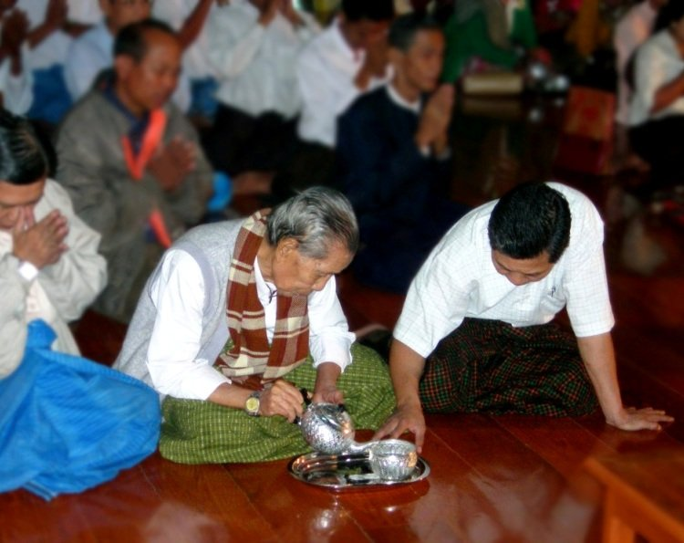
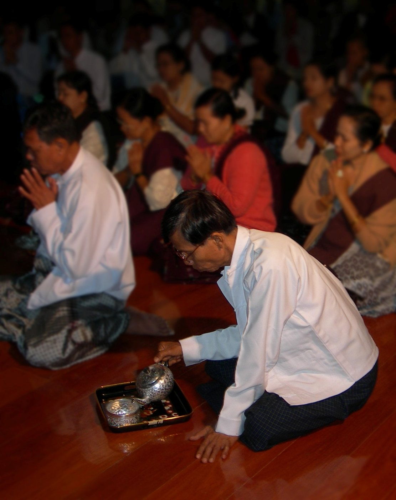
做随喜功德的滴水仪式时，施主们一边跟随比库念诵功德回向文，一边把清水滴入碗中做随喜功德的滴水仪式时，施主们一边跟随比库念诵功德回向文，一边把清水滴入碗中
五、食堂的行仪
(Bhattaggavatta)
于僧园中若告知时至，应遮盖住三轮而齐整地着下衣，绑好腰带，重叠好而披着桑喀帝，系好纽结，洗好钵而拿着。应善缓而进入村落。
不得偏离而走在上座比库前面。应善披覆而行于俗家间，应善摄护而行于俗家间，应眼垂视而行于俗家间，不应拉高衣而行于俗家间，不应高声嬉笑而行于俗家间，应低声而行于俗家间，不应摇身而行于俗家间，不应摇臂而行于俗家间，不应摇头而行于俗家间，不应叉腰而行于俗家间，不应覆头而行于俗家间，不应踮脚而行于俗家间。
应善披覆而坐于俗家间，应善摄护而坐于俗家间，应眼垂视而坐于俗家间，不应拉高衣而坐于俗家间，不应高声嬉笑而坐于俗家间，应低声而坐于俗家间，不应摇身而坐于俗家间，不应摇臂而坐于俗家间，不应摇头而坐于俗家间，不应叉腰而坐于俗家间，不应覆头而坐于俗家间，不应抱膝而坐于俗家间。不应排挤上座比库[之座]而坐，不应占据下座比库之座。不应铺展桑喀帝而坐于俗家间。
施水时应双手持钵接受水，放下後应妥善且不磨损地洗钵。如果有盛水盆，应放低[钵]而把水倒进盛水盆中，不要让盛水盆被水溅到，不要让旁边的比库被水溅到，不要让桑喀帝被水溅到。若没有盛水盆，应放低[钵]而把水倒在地上，不要让旁边的比库被水溅到，不要让桑喀帝被水溅到。
施饭时应双手持钵接受饭，应留空间盛羹。若有熟酥、油或菜肴，上座应说:“让所有人都能平等地得到。”应恭敬地接受钵食，应注意钵而接受钵食，应以等量之羹而接受钵食，应平钵而接受钵食。在饭还没有分给所有人之前上座不应先吃。
应恭敬地食用钵食，应注意钵而食用钵食，应次第地食用钵食，应以等量之羹而食用钵食，不应从顶部捏取而食用钵食，不应以饭覆盖羹或菜而想要取得更多，无病时我将不为自己乞求羹或饭而食用，不应心存不满而观看他人之钵，不应作过大的饭团，应做圆的团食，在饭团未持到时不应张口，不应把手全部塞入口中，不应口含饭团说话，不应投掷团食而食，不应咬断饭团而食，不应塞满口而食，不应甩手而食，不应散落饭粒而食，不应伸舌而食，不应作喳噗喳噗声而食，不应作苏噜苏噜声而食，不应舔手而食，不应舔钵而食，不应舔唇而食，不应以沾有食物的手拿饮水器。
在所有人还没有吃完之前，上座不应接受水。施水时应双手持钵接受水，放下後应妥善且不磨损地洗钵。如果有盛水盆，应放低[钵]而把水倒进盛水盆中，不要让盛水盆被水溅到，不要让旁边的比库被水溅到，不要让桑喀帝被水溅到。若没有盛水盆，应放低[钵]而把水倒在地上，不要让旁边的比库被水溅到，不要让桑喀帝被水溅到。不应把有饭粒的洗钵水倒于俗家间。
回去时下座比库应先回去，上座在後。应善披覆而行于俗家间，应善摄护而行于俗家间，应眼垂视而行于俗家间，不应拉高衣而行于俗家间，不应高声嬉笑而行于俗家间，应低声而行于俗家间，不应摇身而行于俗家间，不应摇臂而行于俗家间，不应摇头而行于俗家间，不应叉腰而行于俗家间，不应覆头而行于俗家间，不应踮脚而行于俗家间。
诸比库，此乃比库们于食堂应遵行的比库之食堂行仪。(V.4.364)
六、集食者的行仪
(Piṇḍacārikavatta)
诸比库，集食的比库将进入村落时，应遮盖住三轮而齐整地着下衣，绑好腰带，重叠好而披着桑喀帝，系好纽结，洗好钵而拿着。应善缓而进入村落。
应善披覆而行于俗家间，应善摄护而行于俗家间，应眼垂视而行于俗家间，不应拉高衣而行于俗家间，不应高声嬉笑而行于俗家间，应低声而行于俗家间，不应摇身而行于俗家间，不应摇臂而行于俗家间，不应摇头而行于俗家间，不应叉腰而行于俗家间，不应覆头而行于俗家间，不应踮脚而行于俗家间。
进入住家时，应观察“我将由此进入，我将由此离开”。不应太快进入，不应太快离开；不应站得太远，不应站得太近；不应站得太久，不应太急返回。站立时应观察[施主]有意还是无意给食物。如果放下工作，从座而起，碰触汤匙，碰触或放置器皿，像是有意给而应站立。施食物时以左手举起桑喀帝，以右手打开钵，以双手持钵接受食物。不应观看施食者之脸。应观察有意还是无意给菜肴。如果碰触汤匙，碰触或放置器皿，像是有意给而应站立。给与食物後应以桑喀帝遮盖住钵，善缓而返回。
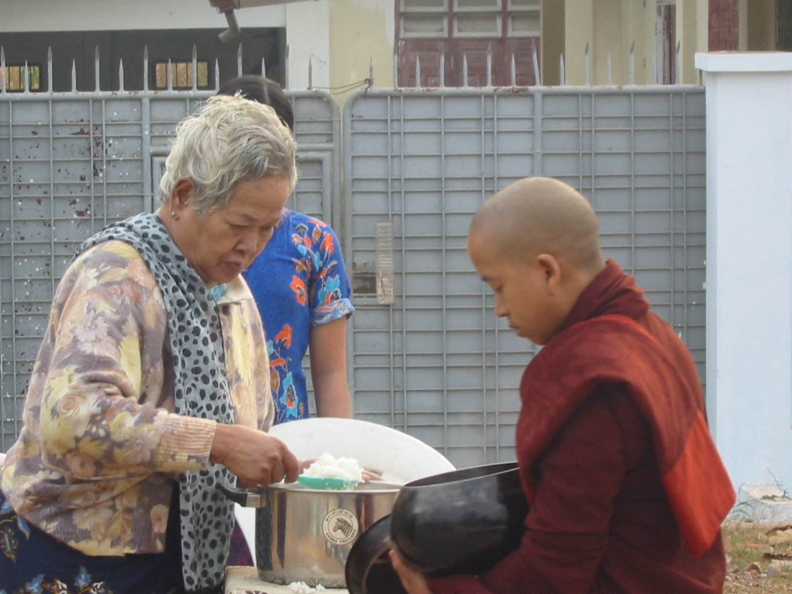
应善披覆而行于俗家间，应善摄护而行于俗家间，应眼垂视而行于俗家间，不应拉高衣而行于俗家间，不应高声嬉笑而行于俗家间，应低声而行于俗家间，不应摇身而行于俗家间，不应摇臂而行于俗家间，不应摇头而行于俗家间，不应叉腰而行于俗家间，不应覆头而行于俗家间，不应踮脚而行于俗家间。
先从村中集食回来者，应敷设座位，近置洗脚水、擦脚台和擦脚布，洗好并准备弃食器，准备饮用水和洗用水。从村中集食後回来者，如果有剩馀的食物，若想要则可以吃；假如不想要，则应丢在少草之处或倒进无生物的水中。他应收起座位，收好洗脚水、擦脚台和擦脚布，洗净并收好弃食器，收好饮用水和洗用水，打扫食堂。若见到饮用水罐、洗用水罐或厕所水罐空无，则应准备。假如他没能力，则以手势招呼同伴，以手势动作而准备之，不以此为由而打开话题。
诸比库，此乃集食的比库们应遵行的集食比库之行仪。(V.4.366)
七、林野住者的行仪
(Āraññikavatta)
诸比库，林野比库清晨起来，把钵装进袋中，挂于肩上，衣披在肩上，穿上鞋後，应收好木器、陶器，关好门窗，从坐卧处下来。“我将进入此村”时，应脱掉鞋，放下拍打後装进袋中，挂于肩上。应遮盖住三轮而齐整地着下衣，绑好腰带，重叠好而披着桑喀帝，系好纽结，洗好钵而拿着。应善缓而进入村落。应善披覆而行于俗家间……不应叉腰而行于俗家间，不应覆头而行于俗家间，不应踮脚而行于俗家间。
进入住家时，应观察“我将由此进入，我将由此离开”。不应太快进入，不应太快离开；不应站得太远，不应站得太近；不应站得太久，不应太急返回。站立时应观察[施主]有意还是无意给食物。如果放下工作、从座而起，碰触汤匙，碰触或放置器皿，像是有意给而应站立。施食物时以左手举起桑喀帝，以右手打开钵，以双手持钵接受食物。不应观看施食者之脸。应观察有意还是无意给菜肴。如果碰触汤匙，碰触或放置器皿，像是有意给而应站立。给与食物後应以桑喀帝遮盖住钵，善缓而返回。
应善披覆而行于俗家间……不应踮脚而行于俗家间。离开村落後把钵装进袋中，挂于肩上，衣折叠後顶在头上，穿上鞋而行。
诸比库，林野比库应准备饮用水，应准备洗用水，应准备火，应准备钻火木，应准备手杖。应掌握全部或部分星宿，应能善巧于方位。
诸比库，此乃住在林野的比库们应遵行的林野比库之行仪。(V.4.368)
八、坐卧处的行仪
(Senāsanavatta)
于所居住的住所，若其住所肮脏，有能力则应清洁。在清洁住所时，应先把钵和衣取出放到一边，再把坐垫取出放到一边；把褥垫和枕头取出放到一边。把床放低後，妥善地不磨损、不撞到门框而取出放到一边；把椅子放低後，妥善地不磨损、不撞到门框而取出放到一边。把床脚垫取出放到一边；把痰盂取出放到一边；把枕板取出放到一边；观察地毡是如何铺设後再取出放到一边。如果住所有蜘蛛网，先应观察然後除掉。应清洁窗户的角落处。如果由红土所涂抹的墙壁有污垢，应弄湿布扭干後再擦拭。如果黑色的地面有污垢，应弄湿布扭干後再擦拭。若是未经处理过的地面，应撒水後打扫，不让住所被尘垢所污。把垃圾收集到一边再倒掉。
不应在比库旁边拍打坐卧具，不应在住所旁边拍打坐卧具，不应在饮用水旁边拍打坐卧具，不应在洗用水旁边拍打坐卧具，不应在院子的逆风处拍打坐卧具，应在下风处拍打坐卧具。
把地毡放一边晾晒、清洁、拍打後，搬进来按原来的铺设而铺设；把床脚垫放一边晾晒、擦拭後，搬进来摆设于原处；把床放一边晾晒、清洁、拍打後，再放低，妥善地不磨损、不撞到门框而搬进来按原来的摆设而摆设；把椅子放一边晾晒、清洁、拍打後，再放低，妥善地不磨损、不撞到门框而搬进来按原来的摆设而摆设；把褥垫和枕头放一边晾晒、清洁、拍打後，搬进来按原来的摆设而摆设；把坐垫放一边晾晒、清洁、拍打後，搬进来按原来的摆设而摆设；把痰盂放一边晾晒、擦拭後，搬进来摆设于原处；把枕板放一边晾晒、擦拭後，搬进来摆设于原处。
应收藏钵和衣。收藏钵时，以一手持钵，一手摸探床底或椅底而收藏，但不应将钵直接放置在地上。收藏衣时，以一手持衣，一手摸衣竿或衣绳，边向外、褶向内地折叠衣而收藏。
如果带有尘之风从东边吹来，则应关闭东边之窗；如果带有尘之风从西边吹来，则应关闭西边之窗；如果带有尘之风从北边吹来，则应关闭北边之窗；如果带有尘之风从南边吹来，则应关闭南边之窗。如果天冷时白天应打开窗而晚上应关；如果天热时则白天应关窗而晚上应打开。
如果房间肮脏，应清扫房间；如果门廊肮脏，应清扫门廊；如果集会堂肮脏，应清扫集会堂；如果火堂肮脏，应清扫火堂；如果厕所肮脏，应清扫厕所。如果饮用水没有了，应准备饮用水；如果洗用水没有了，应准备洗用水；如果洗水罐之水没有了，应把水灌进洗水罐。
如果与上座在同一住所居住，没请示上座不应读诵，不应询问，不应作学习，不应说法；不应点灯，不应熄灯；不应开窗，不应关窗。如果与上座在同一经行道经行，应随上座而转身，不得触到上座的桑喀帝衣角。
诸比库，此乃比库们对坐卧处应遵行的比库坐卧处之行仪。(V.4.370)
总之，如果比库或沙马内勒使用僧团的住所，他就有责任要维持住所及其周围环境的清洁卫生，保护住所及家具设备等的整洁安全。如果他跟上座比库同住一室，则要处处对上座表示尊重。
九、浴室的行仪
(Jantāgharavatta)
先到浴室者，假如堆积有灰，应把灰倒掉；如果浴室肮脏，应清扫浴室；如果地板肮脏，应清扫地板；如果房间肮脏，应清扫房间；如果门廊肮脏，应清扫门廊；如果浴室堂肮脏，应清扫浴室堂。应揉捏粉，弄湿泥，把水灌进水桶。
进入浴室时，以泥涂脸，前後皆覆盖着而进入浴室。不应排挤上座比库而坐，不应占据下座比库之座。若有能力则应服侍上座比库。离开浴室时，带上浴室用椅後，应前後皆覆盖着而离开浴室。若有能力，在水中也应服侍上座比库。不应在上座比库之前沐浴，不应在其上面沐浴。从沐浴出来时应给入浴者让路。後离开浴室者，假如浴室泥泞，应清洗。应清洗泥桶，收藏浴室用椅，把火熄灭，关门後才离开。
诸比库，此乃比库们于浴室应遵行的比库之浴室行仪。(V.4.372)
十、厕所的行仪
(Vaccakuṭivatta)
上厕所者，应在外边站着咳嗽，里面坐着者也应咳嗽。应把衣挂在衣竿或衣绳後，善缓而进入厕所。不应太快进入，不应拉高[下衣]进入，应站在厕坑的踏板上拉高。不得呻吟着大便，不得嚼着齿木大便。不得在大便槽之外大便，不得在小便槽之外小便，不得吐唾液进小便槽。不得用粗木橛刮擦；不得将刮屎橛丢进粪坑。应站在厕坑的踏板上覆盖[下衣]。不应太快离开，不应拉高[下衣]离开，应站在洗净台的踏板上拉高。不得作喳噗喳噗声而洗净，不得将水残留在洗净盆。应站在洗净台的踏板上覆盖[下衣]。
假如厕所污秽，应清洗。如果刮屎橛满了，应把刮屎橛倒掉；如果厕所肮脏，应清扫厕所。如果灰泥地板肮脏，应清扫地板；如果房间肮脏，应清扫房间；如果门廊肮脏，应清扫门廊；如果洗水罐之水没有了，应把水灌进洗水罐。
诸比库，此乃比库们于厕所应遵行的比库之厕所行仪。(V.4.374)
十一、对亲教师的行仪
(Upajjhāyavatta)
诸比库，弟子对亲教师应遵行适当的[行仪]。此适当的行仪于此为：
清晨起来，脱掉鞋，偏袒上衣于一肩，应递上齿木，递上洗脸水，敷设座位。假如有粥，应洗好钵後把粥端近。喝粥後递上水，接过钵放下後，应妥善且不磨损地洗，然後收藏。亲教师站立时，应收起座位；如果该处肮脏，应清扫该处。
如果亲教师想要进村，应递过下裙(nivāsanaṃ)，接过[换下的]副裙(paṭinivāsanaṃ)，递上腰带，重叠好而递上桑喀帝，洗好钵後带有水奉上。如果亲教师想要随从沙门，应遮盖住三轮而齐整地着下衣，绑好腰带，重叠好而披着桑喀帝，系好纽结，洗好钵而拿着，作亲教师的随从沙门。不应离太远而行，不应离太近而行。应接过已装食之钵。亲教师谈话时不应打断；亲教师谈话接近犯戒时应防止。
归来时应先回到，敷设座位，近置洗脚水、擦脚台和擦脚布。应前往迎接而接过衣钵，递上副裙，接过[换下的]下裙。如果衣沾有汗渍，应于热处晒一会儿，但不应把衣存放于热处。应折叠衣。折叠衣时衣边应错开四指而折叠，不让中间有折痕。腰带应放在衣褶层里。
如果有钵食且亲教师想要吃，应递上水後把钵食端近。应询问亲教师饮用水。用完餐後应递上水，接过钵放下後，应妥善且不磨损地洗，擦干後应于热处晒一会儿，但不应把钵存放于热处。应收藏钵和衣。收藏钵时，以一手持钵，一手摸探床底或椅底而收藏，但不应将钵直接放置在地上。收藏衣时，以一手持衣，一手摸衣竿或衣绳，边向外、褶向内地折叠衣而收藏。亲教师站立时，应收起座位，收好洗脚水、擦脚台和擦脚布。如果该处肮脏，应清扫该处。
如果亲教师想要洗澡，应准备洗澡水。如果需要冷水，应准备冷水；如果需要热水，应准备热水。
如果亲教师想要进入浴室，应揉捏粉，弄湿泥，带上浴室用椅後，跟随在亲教师之後而行。递上浴室用椅，接过衣後安放在一边。应递上粉，递上泥。如果有可能，应进入浴室。进入浴室时，应以泥涂脸，前後皆覆盖着而进入浴室。不应排挤上座比库而坐，不应占据下座比库之座。在浴室中应服侍亲教师。离开浴室时，带上浴室用椅後，应前後皆覆盖着而离开浴室。
在水中也应服侍亲教师。洗澡时应先上来，擦干自己的身体，穿好下衣後，应擦干亲教师身上的水，递过下裙，递上桑喀帝，带上浴室用椅後，应先回来，敷设座位，近置洗脚水、擦脚台和擦脚布。应询问亲教师饮用水。
如果[亲教师]想令读诵，应读诵；如果想询问，应受问。
于亲教师所居住的住所，若其住所肮脏，有能力则应清洁。在清洁住所时，应先把钵和衣取出放到一边，再把坐垫取出放到一边；把褥垫和枕头取出放到一边。把床放低後，妥善地不磨损、不撞到门框而取出放到一边；把椅子放低後，妥善地不磨损、不撞到门框而取出放到一边。把床脚垫取出放到一边；把痰盂取出放到一边；把枕板取出放到一边；观察地毡是如何铺设後再取出放到一边。如果住所有蜘蛛网，先应观察然後除掉。应清洁窗户的角落处。如果由红土所涂抹的墙壁有污垢，应弄湿布扭干後再擦拭。如果黑色的地面有污垢，应弄湿布扭干後再擦拭。若是未经处理过的地面，应撒水後打扫，不让住所被尘垢所污。把垃圾收集到一边再倒掉。
把地毡晾晒、清洁、拍打後，搬进来按原来的铺设而铺设；把床脚垫晾晒、擦拭後，搬进来摆设于原处；把床晾晒、清洁、拍打後，再放低，妥善地不磨损、不撞到门框而搬进来按原来的摆设而摆设；把椅子晾晒、清洁、拍打後，再放低，妥善地不磨损、不撞到门框而搬进来按原来的摆设而摆设；把褥垫和枕头晾晒、清洁、拍打後，搬进来按原来的摆设而摆设；把坐垫晾晒、清洁、拍打後，搬进来按原来的摆设而摆设；把痰盂晾晒、擦拭後，搬进来摆设于原处；把枕板晾晒、擦拭後，搬进来摆设于原处。
应收藏钵和衣。收藏钵时，以一手持钵，一手摸探床底或椅底而收藏，但不应将钵直接放置在地上。收藏衣时，以一手持衣，一手摸衣竿或衣绳，边向外、褶向内地折叠衣而收藏。
如果带有尘之风从东边吹来，则应关闭东边之窗；如果带有尘之风从西边吹来，则应关闭西边之窗；如果带有尘之风从北边吹来，则应关闭北边之窗；如果带有尘之风从南边吹来，则应关闭南边之窗。如果天冷时白天应打开窗而晚上应关；如果天热时则白天应关窗而晚上应打开。
如果房间肮脏，应清扫房间；如果门廊肮脏，应清扫门廊；如果集会堂肮脏，应清扫集会堂；如果火堂肮脏，应清扫火堂；如果厕所肮脏，应清扫厕所。如果饮用水没有了，应准备饮用水；如果洗用水没有了，应准备洗用水；如果洗水罐之水没有了，应把水灌进洗水罐。
假如亲教师生起不满时，弟子应安慰，或请人安慰，或为他说法。假如亲教师生起追悔时，弟子应消除，或请人消除，或为他说法。假如亲教师生起邪见时，弟子应劝阻，或请人劝阻，或为他说法。
假如亲教师犯了重法，应行别住，弟子应作努力:“如何才能使僧团给与亲教师别住?”假如亲教师应退回原本，弟子应作努力:“如何才能使僧团让亲教师退回原本?”假如亲教师应行敬悦，弟子应作努力:“如何才能使僧团给与亲教师敬悦?”假如亲教师应出罪，弟子应作努力:“如何才能使僧团让亲教师出罪?”
假如僧团想要对亲教师作呵责、依止、驱出、下意或举罪甘马，弟子应作努力:“如何才能使僧团不对亲教师作甘马或者能够减轻?”然而，若僧团已对他作了呵责、依止、驱出、下意或举罪甘马，弟子应作努力:“如何才能使亲教师正确履行、顺从、实行赎罪，让僧团能解除该甘马?”
如果亲教师之衣应洗，弟子应洗，或应作努力:“如何才能使亲教师之衣洗净?”如果亲教师应做衣，弟子应做，或应作努力:“如何才能使亲教师之衣做好?”如果亲教师应煮染料，弟子应煮，或应作努力:“如何才能使亲教师的染料煮好?”如果亲教师之衣应染，弟子应染，或应作努力:“如何才能使亲教师之衣染好?”染衣时应妥善地、反复地转动而染；在水滴未断时不应离开。
没有请示亲教师不得送钵给他人，不得接受他人之钵；不得送衣给他人，不得接受他人之衣；不得送必需品给他人，不得接受他人之必需品；不得为他人剃头，不得受他人剃头；不得服侍他人，不得受他人服侍；不得服务他人，不得受他人服务；不得作他人的随从沙门，不得接受他人作随从沙门；不得为他人送食，不得接受他人送食。没有请示亲教师不得进村；不得前往坟场；不得离开区域。
若亲教师生病，应照料终生，等待痊愈。
诸比库，此乃弟子们对亲教师应遵行的弟子对亲教师的行仪。(V.3.66; V.4.376)
十二、对弟子的行仪
(Saddhivihārikavatta)
诸比库，亲教师对弟子应遵行适当的[行仪]。此适当的行仪于此为：
诸比库，亲教师应通过读诵、询问、教诲、教诫来摄护、摄受弟子。假如亲教师有钵，弟子没有钵，亲教师应给弟子钵，或作努力:“如何才能使弟子拥有钵?”假如亲教师有衣，弟子没有衣，亲教师应给弟子衣，或作努力:“如何才能使弟子拥有衣?”假如亲教师有必需品，弟子没有必需品，亲教师应给弟子必需品，或作努力:“如何才能使弟子拥有必需品?”
若弟子生病，清晨起来後应递上齿木，递上洗脸水，敷设座位。假如有粥，应洗好钵後把粥端近。喝粥後递上水，接过钵放下後，应妥善且不磨损地洗，然後收藏。弟子站立时，应收起座位；如果该处肮脏，应清扫该处。
如果弟子想要进村，应递过下裙，接过[换下的]副裙，递上腰带，重叠好而递上桑喀帝，洗好钵後带有水递上。
“到现在他将要回来”时应敷设座位，近置洗脚水、擦脚台和擦脚布。应前往迎接而接过衣钵，递上副裙，接过[换下的]下裙。如果衣沾有汗渍，应于热处晒一会儿，但不应把衣存放于热处。应折叠衣。折叠衣时衣边应错开四指而折叠，不让中间有折痕。腰带应放在衣褶层里。
如果有钵食且弟子想要吃，应递上水後把钵食端近。应询问弟子饮用水。用完餐後应递上水，接过钵放下後，应妥善且不磨损地洗，擦干後应于热处晒一会儿，但不应把钵存放于热处。应收藏钵和衣。收藏钵时，以一手持钵，一手摸探床底或椅底而收藏，但不应将钵直接放置在地上。收藏衣时，以一手持衣，一手摸衣竿或衣绳，边向外、褶向内地折叠衣而收藏。弟子站立时，应收起座位，收好洗脚水、擦脚台和擦脚布。如果该处肮脏，应清扫该处。
如果弟子想要洗澡，应准备洗澡水。如果需要冷水，应准备冷水；如果需要热水，应准备热水。
如果弟子想要进入浴室，应揉捏粉，弄湿泥，带上浴室用椅而前往。递上浴室用椅，接过衣後安放在一边。应递上粉，递上泥。如果有可能，应进入浴室。进入浴室时，应以泥涂脸，前後皆覆盖着而进入浴室。不应排挤上座比库而坐，不应占据下座比库之座。在浴室中应服侍弟子。离开浴室时，带上浴室用椅後，应前後皆覆盖着而离开浴室。在水中也应服侍弟子。洗澡时应先上来，擦干自己的身体，穿好下衣後，应擦干弟子身上的水，递过下裙，递上桑喀帝，带上浴室用椅後，应先回来，敷设座位，近置洗脚水、擦脚台和擦脚布。应询问弟子饮用水。
于弟子所居住的住所，若其住所肮脏，有能力则应清洁。在清洁住所时，应先把钵和衣取出放到一边……如果洗水罐之水没有了，应把水灌进洗水罐。
假如弟子生起不满时，亲教师应安慰，或请人安慰，或为他说法。假如弟子生起追悔时，亲教师应消除，或请人消除，或为他说法。假如弟子生起邪见时，亲教师应劝阻，或请人劝阻，或为他说法。
假如弟子犯了重法，应行别住，亲教师应作努力:“如何才能使僧团给与弟子别住?”假如弟子应退回原本，亲教师应作努力:“如何才能使僧团让弟子退回原本?”假如弟子应行敬悦，亲教师应作努力:“如何才能使僧团给与弟子敬悦?”假如弟子应出罪，亲教师应作努力:“如何才能使僧团让弟子出罪?”
假如僧团想要对弟子作呵责、依止、驱出、下意或举罪甘马，亲教师应作努力:“如何才能使僧团不对弟子作甘马或者能够减轻?”然而，若僧团已对他作了呵责、依止、驱出、下意或举罪甘马，亲教师应作努力:“如何才能使弟子正确履行、顺从、实行赎罪，让僧团能解除该甘马？”
如果弟子之衣应洗，亲教师应告知“要这样洗”，或应作努力:“如何才能使弟子之衣洗净?”如果弟子应做衣，亲教师应告知“要这样做”，或应作努力:“如何才能使弟子之衣做好?”如果弟子应煮染料，亲教师应告知“要这样煮”，或应作努力:“如何才能使弟子的染料煮好?”如果弟子之衣应染，亲教师应告知“要这样染”，或应作努力:“如何才能使弟子之衣染好?”染衣时应妥善地、反复地转动而染；在水滴未断时不应离开。
若弟子生病，应照料终生，等待痊愈。
诸比库，此乃亲教师们对弟子应遵行的亲教师对弟子的行仪。(V.3.67; V.4.378)
十三、对老师的行仪
(Ācariyavatta)
诸比库，门生对老师应遵行适当的[行仪]。此适当的行仪于此为：
清晨起来，脱掉鞋，偏袒上衣于一肩，应递上齿木，递上洗脸水，敷设座位。假如有粥，应洗好钵後把粥端近。喝粥後递上水，接过钵放下後，应妥善且不磨损地洗，然後收藏。老师站立时，应收起座位；如果该处肮脏，应清扫该处。
如果老师想要进村，应递过下裙，接过[换下的]副裙，递上腰带，重叠好而递上桑喀帝，洗好钵後带有水奉上。如果老师想要随从沙门，应遮盖住三轮而齐整地着下衣，绑好腰带，重叠好而披着桑喀帝，系好纽结，洗好钵而拿着，作老师的随从沙门。不应离太远而行，不应离太近而行。应接过已装食之钵。老师谈话时不应打断；老师谈话接近犯戒时应防止。
归来时应先回到，敷设座位，近置洗脚水、擦脚台和擦脚布。应前往迎接而接过衣钵，递上副裙，接过[换下的]下裙。如果衣沾有汗渍，应于热处晒一会儿，但不应把衣存放于热处。应折叠衣。折叠衣时衣边应错开四指而折叠，不让中间有折痕。腰带应放在衣褶层里。
如果有钵食且老师想要吃，应递上水後把钵食端近。应询问老师饮用水。用完餐後应递上水，接过钵放下後，应妥善且不磨损地洗，擦干後应于热处晒一会儿，但不应把钵存放于热处。应收藏钵和衣。收藏钵时，以一手持钵，一手摸探床底或椅底而收藏，但不应将钵直接放置在地上。收藏衣时，以一手持衣，一手摸衣竿或衣绳，边向外、褶向内地折叠衣而收藏。老师站立时，应收起座位，收好洗脚水、擦脚台和擦脚布。如果该处肮脏，应清扫该处。
如果老师想要洗澡，应准备洗澡水。如果需要冷水，应准备冷水；如果需要热水，应准备热水。
如果老师想要进入浴室，应揉捏粉，弄湿泥，带上浴室用椅後，跟随在老师之後而行。递上浴室用椅，接过衣後安放在一边。应递上粉，递上泥。如果有可能，应进入浴室。进入浴室时，应以泥涂脸，前後皆覆盖着而进入浴室。不应排挤上座比库而坐，不应占据下座比库之座。在浴室中应服侍老师。离开浴室时，带上浴室用椅後，应前後皆覆盖着而离开浴室。
在水中也应服侍老师。洗澡时应先上来，擦干自己的身体，穿好下衣後，应擦干老师身上的水，递过下裙，递上桑喀帝，带上浴室用椅後，应先回来，敷设座位，近置洗脚水、擦脚台和擦脚布。应询问老师饮用水。
如果[老师]想令读诵，应读诵；如果想询问，应受问。
于老师所居住的住所，若其住所肮脏，有能力则应清洁。在清洁住所时，应先把钵和衣取出放到一边，再把坐垫取出放到一边；把褥垫和枕头取出放到一边。把床放低後，妥善地不磨损、不撞到门框而取出放到一边；把椅子放低後，妥善地不磨损、不撞到门框而取出放到一边。把床脚垫取出放到一边；把痰盂取出放到一边；把枕板取出放到一边；观察地毡是如何铺设後再取出放到一边。如果住所有蜘蛛网，先应观察然後除掉。应清洁窗户的角落处。如果由红土所涂抹的墙壁有污垢，应弄湿布扭干後再擦拭。如果黑色的地面有污垢，应弄湿布扭干後再擦拭。若是未经处理过的地面，应撒水後打扫，不让住所被尘垢所污。把垃圾收集到一边再倒掉。
把地毡晾晒、清洁、拍打後，搬进来按原来的铺设而铺设；把床脚垫晾晒、擦拭後，搬进来摆设于原处；把床晾晒、清洁、拍打後，再放低，妥善地不磨损、不撞到门框而搬进来按原来的摆设而摆设；把椅子晾晒、清洁、拍打後，再放低，妥善地不磨损、不撞到门框而搬进来按原来的摆设而摆设；把褥垫和枕头晾晒、清洁、拍打後，搬进来按原来的摆设而摆设；把坐垫晾晒、清洁、拍打後，搬进来按原来的摆设而摆设；把痰盂晾晒、擦拭後，搬进来摆设于原处；把枕板晾晒、擦拭後，搬进来摆设于原处。
应收藏钵和衣。收藏钵时，以一手持钵，一手摸探床底或椅底而收藏，但不应将钵直接放置在地上。收藏衣时，以一手持衣，一手摸衣竿或衣绳，边向外、褶向内地折叠衣而收藏。
如果带有尘之风从东边吹来，则应关闭东边之窗；如果带有尘之风从西边吹来，则应关闭西边之窗；如果带有尘之风从北边吹来，则应关闭北边之窗；如果带有尘之风从南边吹来，则应关闭南边之窗。如果天冷时白天应打开窗而晚上应关；如果天热时则白天应关窗而晚上应打开。
如果房间肮脏，应清扫房间；如果门廊肮脏，应清扫门廊；如果集会堂肮脏，应清扫集会堂；如果火堂肮脏，应清扫火堂；如果厕所肮脏，应清扫厕所。如果饮用水没有了，应准备饮用水；如果洗用水没有了，应准备洗用水；如果洗水罐之水没有了，应把水灌进洗水罐。
假如老师生起不满时，门生应安慰，或请人安慰，或为他说法。假如老师生起追悔时，门生应消除，或请人消除，或为他说法。假如老师生起邪见时，门生应劝阻，或请人劝阻，或为他说法。
假如老师犯了重法，应行别住，门生应作努力:“如何才能使僧团给与老师别住?”假如老师应退回原本，门生应作努力:“如何才能使僧团让老师退回原本?”假如老师应行敬悦，门生应作努力:“如何才能使僧团给与老师敬悦?”假如老师应出罪，门生应作努力:“如何才能使僧团让老师出罪?”
假如僧团想要对老师作呵责、依止、驱出、下意或举罪甘马，门生应作努力:“如何才能使僧团不对老师作甘马或者能够减轻?”然而，若僧团已对他作了呵责、依止、驱出、下意或举罪甘马，门生应作努力:“如何才能使老师正确履行、顺从、实行赎罪，让僧团能解除该甘马?”
如果老师之衣应洗，门生应洗，或应作努力:“如何才能使老师之衣洗净?”如果老师应做衣，门生应做，或应作努力:“如何才能使老师之衣做好?”如果老师应煮染料，门生应煮，或应作努力:“如何才能使老师的染料煮好?”如果老师之衣应染，门生应染，或应作努力:“如何才能使老师之衣染好?”染衣时应妥善地、反复地转动而染；在水滴未断时不应离开。
没有请示老师不得送钵给他人，不得接受他人之钵；不得送衣给他人，不得接受他人之衣；不得送必需品给他人，不得接受他人之必需品；不得为他人剃头，不得受他人剃头；不得服侍他人，不得受他人服侍；不得服务他人，不得受他人服务；不得作他人的随从沙门，不得接受他人作随从沙门；不得为他人送食，不得接受他人送食。没有请示老师不得进村；不得前往坟场；不得离开区域。
若老师生病，应照料终生，等待痊愈。
诸比库，此乃门生们对老师应遵行的门生对老师的行仪。(V.3.78; V.4.380)
十四、对门生的行仪
(Antevāsikavatta)
诸比库，老师对门生应遵行适当的[行仪]。此适当的行仪于此为：
诸比库，老师应通过读诵、询问、教诲、教诫来摄护、摄受门生。假如老师有钵，门生没有钵，老师应给门生钵，或应作努力:“如何才能使门生拥有钵?”假如老师有衣，门生没有衣，老师应给门生衣，或应作努力:“如何才能使门生拥有衣?”假如老师有必需品，门生没有必需品，老师应给门生必需品，或应作努力:“如何才能使门生拥有必需品？”
若门生生病，清晨起来後应递上齿木，递上洗脸水，敷设座位。假如有粥，应洗好钵後把粥端近。喝粥後递上水，接过钵放下後，应妥善且不磨损地洗，然後收藏。门生站立时，应收起座位；如果该处肮脏，应清扫该处。
如果门生想要进村，应递过下裙，接过[换下的]副裙，递上腰带，重叠好而递上桑喀帝，洗好钵後带有水递上。
“到现在他将要回来”时应敷设座位，近置洗脚水、擦脚台和擦脚布。应前往迎接而接过衣钵，递上副裙，接过[换下的]下裙。如果衣沾有汗渍，应于热处晒一会儿，但不应把衣存放于热处。应折叠衣。折叠衣时衣边应错开四指而折叠，不让中间有折痕。腰带应放在衣褶层里。
如果有钵食且门生想要吃，应递上水後把钵食端近。应询问门生饮用水。用完餐後应递上水，接过钵放下後，应妥善且不磨损地洗，擦干後应于热处晒一会儿，但不应把钵存放于热处。应收藏钵和衣。收藏钵时……收藏衣时……边向外、褶向内地折叠衣而收藏。门生站立时，应收起座位，收好洗脚水、擦脚台和擦脚布。如果该处肮脏，应清扫该处。
如果门生想要洗澡，应准备洗澡水。如果需要冷水，应准备冷水；如果需要热水，应准备热水。
如果门生想要进入浴室，应揉捏粉，弄湿泥，带上浴室用椅而前往。递上浴室用椅，接过衣後安放在一边。应递上粉，递上泥。如果有可能，应进入浴室。进入浴室时，应以泥涂脸，前後皆覆盖着而进入浴室。不应排挤上座比库而坐，不应占据下座比库之座。在浴室中应服侍门生。离开浴室时，带上浴室用椅後，应前後皆覆盖着而离开浴室。在水中也应服侍门生。洗澡时应先上来，擦干自己的身体，穿好下衣後，应擦干门生身上的水，递过下裙，递上桑喀帝，带上浴室用椅後，应先回来，敷设座位，近置洗脚水、擦脚台和擦脚布。应询问门生饮用水。
于门生所居住的住所，若其住所肮脏，有能力则应清洁。在清洁住所时，应先把钵和衣取出放到一边……如果洗水罐之水没有了，应把水灌进洗水罐。
假如门生生起不满时，老师应安慰，或请人安慰，或为他说法。假如门生生起追悔时，老师应消除，或请人消除，或为他说法。假如门生生起邪见时，老师应劝阻，或请人劝阻，或为他说法。
假如门生犯了重法，应行别住，老师应作努力:“如何才能使僧团给与门生别住?”假如门生应退回原本，老师应作努力:“如何才能使僧团让门生退回原本?”假如门生应行敬悦，老师应作努力:“如何才能使僧团给与门生敬悦?”假如门生应出罪，老师应作努力:“如何才能使僧团让门生出罪?”
假如僧团想要对门生作呵责、依止、驱出、下意或举罪甘马，老师应作努力:“如何才能使僧团不对门生作甘马或者能够减轻?”然而，若僧团已对他作了呵责、依止、驱出、下意或举罪甘马，老师应作努力:“如何才能使门生正确履行、顺从、实行赎罪，让僧团能解除该甘马?”
如果门生之衣应洗，老师应告知“要这样洗”，或应作努力:“如何才能使门生之衣洗净?”如果门生应做衣，老师应告知“要这样做”，或应作努力:“如何才能使门生之衣做好?”如果门生应煮染料，老师应告知“要这样煮”，或应作努力:“如何才能使门生的染料煮好?”如果门生之衣应染，老师应告知“要这样染”，或应作努力:“如何才能使门生之衣染好?”染衣时应妥善地、反复地转动而染；在水滴未断时不应离开。
若门生生病，应照料终生，等待痊愈。
诸比库，此乃老师们对门生应遵行的老师对门生的行仪。(V.3.79; V.4.382)
第十一、十二种行仪讲述的是亲教师与弟子之间的相互义务，第十三、十四种行仪讲述的是老师与门生之间的相互义务。这两种师徒关系除了各自间的身份略有不同之外，彼此之间应履行的义务是完全一致的。也即是说：弟子（在这里也包括门生）应恭敬、顺从其师长（在这里包括亲教师和老师），应履行服务师长的义务；而作为师长的则应爱护、照顾其弟子，应承担教导弟子的职责。同时，这四种行仪也以相同的内容出现在《律藏·大品·大篇》中。
这种师徒间互相履行义务的传统，直至今天仍然被许多上座部僧团很好地维持和实行着。以上的律文为师徒之间的义务提供了具体的标准和最佳的典范，而师徒之间也可根据实际的情况或客观条件来贯彻与实践这些义务。
作弟子的应为师长打扫住所、清洗浴厕、洗染袈裟、洗钵、按摩、照料起居等，在在处处皆
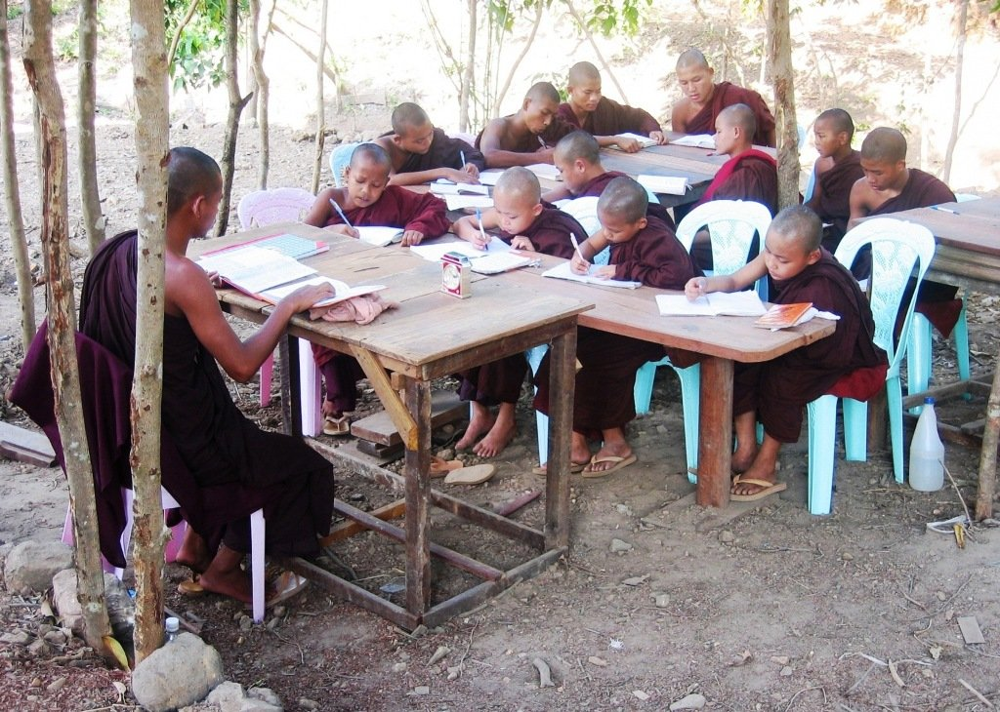
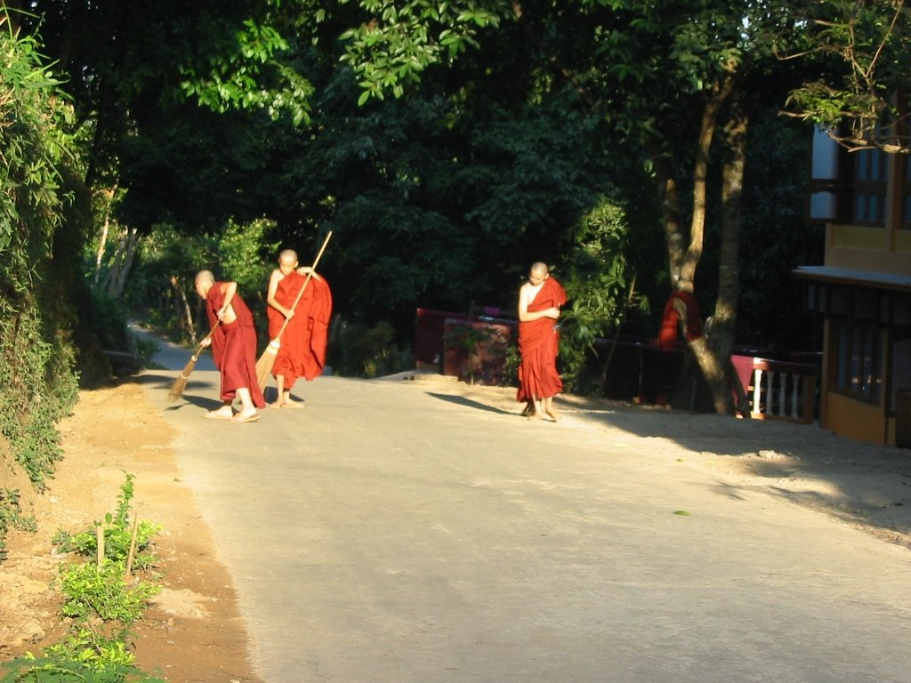
应表现出对师长的恭敬与忠诚。如果师长身边已经有好几位弟子在实行义务，则可通过观察师长的生活起居、观察其他弟子的做法，或按照师长的指示来安排自己履行义务的时间和方式。
当然，师长可以告知其弟子不须履行某些义务。假如师长没有免除弟子的义务，则弟子将因为每一项没有履行的义务而犯一恶作罪 (对比库而言)。
作师长的有义务要教导好弟子，回答弟子关于戒律、教法、禅修和梵行生活等的问题，让弟子明白如何是犯戒，如何不犯，如何犯重，如何犯轻，犯了如何忏悔。当弟子犯错时，师长有责任要教训甚至惩罚他；当弟子有邪见时，师长有责任要纠正他；当弟子忧苦（如对梵行生活不满、想还俗等）时，师长有责任要安慰开解他；当弟子生病时，师长有责任要照顾或使人照顾他等等。
正如跋葛瓦在《大品·大篇》中说：
“诸比库，亲教师将以对儿子之心照顾弟子，弟子将以对父亲之心照顾亲教师。”(V.3.65)
“诸比库，老师将以对儿子之心照顾门生，门生将以对父亲之心照顾老师。”(V.3.77)
弟子可以透过为其师长履行义务来亲近善知识、听闻正法，通过遵从师长的教诲与指导来学习教理、实践禅修，维持圣者的传统。而师长则通过言传身教来摄受与教导弟子，把自己从前辈那里继承下来的佛陀的正法遗产传递给下一代。
这种师徒彼此之间互相履行义务的方式，是佛教中最古老而且行之有效的教育方法。通过弟子依止师长，师长教授弟子，佛陀的正法、律得以代代相传、灯灯相续，长住世间。
第八章 其它学处
(Añña sikkhāpadāni)
巴利语《律藏》按照内容可分为《经分别》《篇章》《附随》三大部分。在分册编排上，则编为《巴拉基格》《巴吉帝亚》《大品》《小品》和《附随》五大册。
《经分别》是对比库和比库尼两部戒经——《巴帝摩卡》的解释，其中解释《比库巴帝摩卡》的部分称为《大分别》(Mahāvibhaṅga)；解释《比库尼巴帝摩卡》的部分则称为《比库尼分别》(Bhikkhunī-vibhaṅga)。
《篇章》(Khandhaka)分为《大品》(Mahā-vagga)和《小品》(Cūḷa-vagga)两部分，其内容则依佛教僧众的各项制度和生活规则分门别类编集而成，共包括22个篇章。
虽然说《篇章》的绝大部分内容是跋葛瓦针对比库僧团的梵行生活而制定的，但有许多的规定同样也适合于沙马内勒，同样也是沙马内勒应当遵守的。为了帮助沙马内勒能够更好地学习和实践跋葛瓦律法中的止持(vāritta)与作持(cāritta)，下面将把《篇章》的《大品》和《小品》中有关沙马内勒也应当学习与遵行的各种学处选译出来，然後再把它们进行分门别类。在许多地方，译者也把律注《普端严》的解释一并翻译出来。因为假如离开了义注的解释，有许多文句将变得费解难懂甚至会产生歧义。
一、障难
不能出家的三十二种人
1.断手者(hatthacchinnaṃ) ——无论在手掌、前臂或上臂等任何部位，其一只或两只手被截断者。
2.断脚者(pādacchinnaṃ) ——无论是在脚尖、脚踝或脚胫的任何部位，其一条或两条腿被截断者。
3.断手脚者(hatthapādacchinnaṃ) ——无论以何种方式，其手足四肢或两条、或三条或全部手脚被切断者。
4.耳被割者(kaṇṇacchinnaṃ) ——无论是耳垂还是耳朵，一只或两只耳被割掉者。
5.鼻被割者(nāsacchinnaṃ) ——无论是鼻翼、鼻尖或鼻孔的任何部位被割掉者。如果鼻子可以接回，待痊愈後再让他出家。
6.耳鼻被割者(kaṇṇanāsacchinnaṃ)。
7.断手指者(aṅgulicchinnaṃ) ——一个或多个手指头被切断者。
8.断拇指者(aḷacchinnaṃ) ——在四个拇指（趾）当中有一个或多个拇指被切断者。
9.断筋者(kaṇḍaracchinnaṃ) ——凡是称为筋的大肌腱前面或後面被割断者。包括断了一条筋而只能用脚尖或脚跟走路，或者不能用脚站立者。
10.蹼手者(phaṇahatthakaṃ) ——假如有人手指之间长有犹如蝙蝠的翅膀般的肉蹼而连接在一起者，这种人想要出家，应先把指间的肉蹼切开，割掉指间所有的皮，待痊愈後再让他出家。假如有人长了六个指头，这种人想要出家的话，应先切掉多馀的手指，痊愈後再出家。
11.驼背(khujjaṃ) ——由于胸部、背部或两侧的突出而使身体弯曲者。
12.侏儒(vāmanaṃ) ——腿短小、腰短小或两者都短小者。
13.瘿病者(galagaṇḍiṃ) ——在脖子上长有像南瓜似的囊状肿瘤者。然而这也只是举例说明而已，凡是在身上的任何部位长有肿瘤者都不能出家。所以跋葛瓦制定在审查人选时说“诸比库，患有五种病者不得令出家”当知是这样的意思。
14.烙刑者(lakkhaṇāhataṃ) ——即是在其额头或大腿等处用烧热的金属烫有烙印者。即使是自由人，若是伤痕新鲜者，也不得出家；假如伤口痊愈、皮肤长回去而辨认不出烙印、穿了上下衣可以遮盖住者，则可出家。假如不能遮盖者，则不适合出家。
15.笞刑者(kasāhataṃ) ——受鞭笞刑处罚者。若是伤痕新鲜者，不得令出家；若伤口已复原者，则可出家。
16.通缉犯(likhitakaṃ) ——凡是盗贼或触犯了其它严重的王法而畏罪潜逃者，国王用葉子或布（古印度无纸）通缉说“无论在何处发现某某，即应抓来处死”“砍断手脚”，或者“抓来作如此处罚”。这就是通缉犯，不得令出家。
17.象脚病者(sīpadiṃ) ——粗脚者。凡是脚部粗大而长有粗疖子者，不得出家。
18.恶疾者(pāparogiṃ) ——若是患了痔疮、瘘管、胆汁病、哮喘、肺痨等病，经常受到这些病痛的折磨者、得了无可救药之病者、为人嫌弃厌恶者，不得出家。
19.辱众者(parisadūsakaṃ) ——由于自己过于丑陋而破坏到大众形象者。比如太高、太矮、太黑、太白、太瘦、太胖、大肚子、头太大、头太小、尖头等等。
20.瞎眼者(kāṇaṃ) ——这里的瞎眼者和下面的盲人两者都是指眼净色已坏的瞎子。在《Mahāpaccari注》中说：一只眼瞎者为kāṇo，两只眼瞎者为andho。在《大义注》中则说天生瞎眼为andho。所以也可结合这两种方法来理解。假如两只或一只眼睛看不见者，不得出家。
21.曲肢者(kuṇiṃ) ——手弯曲、脚弯曲或手指弯曲者。若是手等任何部位弯曲者，称为曲肢者。
22.跛脚者(khañjaṃ) ——膝盖弯曲者、断腿者、由于脚部中间收缩造成腿变形而以脚背中间走路者、由于脚尖收缩造成腿变形而以脚背尖走路者等等。
23.半身不遂者(pakkhahataṃ) ——若是一只手、脚或半身不能自由活动者。
24.瘫痪者(chinniriyāpathaṃ)。
25.老弱者(jarādubbalaṃ) ——由于衰老而羸弱，就连自己的衣都没能力染色者。如果年纪大但身体健康，有能力照顾自己者，则可出家。
26.盲人(andhaṃ) ——天生瞎眼者。
27.哑巴(mūgaṃ) ——不能说话者。
28.聋子(badhiraṃ) ——不能听到所有声音者。如果大声还能听到，则可出家。
29.盲哑者(andhamūgaṃ)。
30.盲聋者(andhabadhiraṃ)。
31.聋哑者(mūgabadhiraṃ)。
32.盲哑聋者(andhamūgabadhiraṃ)。(V.3.119)
此外，律藏《大篇》中还提到：患有麻风、疮、癣、肺痨、癫痫五种病者，以及国家公务员(rājabhaṭo)、盗贼(coro)、越狱的盗贼(kārabhedako coro)、负债者(iṇāyiko)、奴隶(dāso)、未征得其父母同意的儿子(ananuññāto mātāpitūhi putto)也不能出家。假如让他们出家，虽然人选能够成为沙马内勒，但令出家的比库则犯恶作。(V.3.88-97, 105)
不能达上的二十种人
1.般哒格(paṇḍako) ——有五种般哒格：流精般哒格、羡慕般哒格、人为般哒格、半月般哒格、不男不女般哒格。
其中，通过口含他人生殖器等方式流出精液而止息热恼者，称为流精般哒格(āsittapaṇḍako)，相当于同性恋者。看见他人性交，心生羡慕而止息热恼者，称为羡慕般哒格(usūyapaṇḍako)，相当于偷窥癖等性变态者。通过手术等方法摘除精巢者，称为人为般哒格(opakkamikapaṇḍako)，如宦官等阉人。有些人因为不善果报力而在黑半月变成般哒格 (即变成女性)，白半月恢复正常，称为半月般哒格(pakkhapaṇḍako)。因结生而成为无性人，称为不男不女般哒格(napuṃsakapaṇḍako)。
在这五种般哒格中，流精般哒格和羡慕般哒格不障碍出家和达上，其他三种则成障碍。对于半月般哒格，即使在非般哒格的半月中出家，在般哒格的半月也应灭摈。(V.3.A.109)
2.贼住者(theyyasaṃvāsako) ——有三种贼住者:形相之贼、共住之贼、俱盗之贼。
假如有人自行出家後走进寺院，但并没有计算比库的瓦萨，没按照长幼顺序接受礼敬，没有占据僧座，没有参加诵戒、邀请等甘马，而只是盗取出家的形相，称为“形相之贼”(liṅgatthenako)。
若有从比库处出家的沙马内勒去到别处後，撒谎说:“我有十个瓦萨或二十个瓦萨。”然後计算比库的瓦萨，按照长幼顺序接受礼敬，占据僧座，参加诵戒、邀请等，这种盗取比库共住者，称为“共住之贼”(saṃvāsatthenako)。当知以计算比库的瓦萨等所有种类的行事，为这里“共住”的意思。
假如有人自行出家後走进寺院，计算比库的瓦萨，按照长幼顺序接受礼敬，占据僧座，参加诵戒、邀请等，这种不但盗取形相而且盗取共住者，称为“俱盗之贼”(ubhayatthenako)。
对于这三种贼住者，若未达上者不得令达上，已经达上者也应灭摈。即使他再来请求出家，也不得接受其出家。
然而，假如有人因为得罪了国王、闹饥荒不能生存、想要越过大荒野、得病威胁到生命、得罪了仇敌等等，他为了逃避这些危难而自行出家。假如他在危难消除後来到僧团中，能够如实地告知原委後请求出家，在这种情况下则允许出家。但假如他接受其他比库的服务、计算瓦萨等前面所说的情形，则不得出家。
假如有无知的年幼或年长的沙马内勒，还俗回家後却不愿意做放牛等工作，于是披上袈裟、手中拿着碗或钵，想再做沙门而离开家，走进原先的寺院。比库们既不知道他还俗後再自行出家，他自己也不知道如此出家称为贼住者。如果他满了年岁而达上，还可成为达上者。假如他在还未达上时，因听到僧团裁决戒律而知道如此出家称为贼住者，于是他应把实情告诉比库们，这样则可得再出家。但假如他想“现在没有谁知道我”而不告知，就在其隐瞒事实时，即成贼住者。
假如比库捨戒後并没有除去比库的形相，无论他有没有做破戒的事，却仍然接受计算瓦萨等前面所说的情形者，则成为贼住者。
假如比库没有捨戒，以比库的形相从事淫欲法之後，仍然接受计算瓦萨等，却不成为贼住者，可得出家。在复注《心义解疏》中解释：由于他并没有捨弃从比库处所获得的形相，故不成为形相之贼；仍然接受与其形相相应的共住，故也不成为共住之贼。
假如比库心存再穿袈裟的意图，穿上白衣从事淫欲法，之後再披上袈裟，仍然接受计算瓦萨等情形，这样也不成为贼住者，可得出家。但假如他如释重负般丢弃袈裟，穿上白衣从事淫欲法，之後再披上袈裟，接受计算瓦萨等，即成贼住者。
假如沙马内勒以出家的形相而从事行淫等非沙门所为之法，也不成为贼住者。即使他心存再穿袈裟的意图而除去袈裟从事淫欲法，之後再披上袈裟，也不成为贼住者。但假如他如释重负般地丢弃袈裟，裸体或以白衣而从事淫欲法等。成了非沙门後再披上袈裟，即成贼住者。
假如沙马内勒心仪在家人的状态，把袈裟或腰带当作在家人的衣服或其它的样子而穿着，想观察“我在家的样子是否漂亮”并保持这样。在领受漂亮之後再作出家的形相，即成贼住者。对于穿着在家人的衣服而观察、领受也是同理。
假如比库尼穿着在家人的衣服，乃至只是把袈裟当作在家人的衣服而穿着，观察、领受或保持，其情形也与沙马内勒的一样。(V.A.3.110)
3.投外道者(titthiyapakkantako) ——已达上的比库後来投奔并加入外道者。这种人不但不得再达上，也不得出家。
4.畜生(tiracchānagato) ——龙、金翅鸟等任何一种，乃至包括沙格天帝(Sakka devānaminda)在内。当知一切的非人类在这里都属于畜生的意思。它们既不能达上，也不能出家，已达上者也应灭摈。
5.弑母者(mātughātako) ——故意断除自己生身母亲的生命者。这是一种极恶的重罪 (五无间罪之一)，这种人不得达上和出家。
6.弑父者(pitughātako) ——同上。
7.弑阿拉汉者(arahantaghātako) ——当知这里的阿拉汉是指人类的阿拉汉。只要是人类，即使是未出家而得漏尽的男孩或女孩，故意断除其生命者也是弑阿拉汉。
8.污比库尼者(bhikkhunīdūsako) ——污染清净比库尼三道的其中任何一道者，称为污比库尼者。
9.破僧者(saṅghabhedako)——就像迭瓦达德(Devadatta)一样提出邪法、邪律後，举行甘马而使僧团分裂。
10.出血者(lohituppādako,出佛身血者) ——在这里也好像迭瓦达德一样，以邪恶之心、杀害之心使活着的如来身上流出哪怕只是够一只小苍蝇喝之量的血，即称为出佛身血者。
11.两性人(ubhatovyañjanako) ——既会生起男相又会生起女相，有男女两种性征的人。
12.无亲教师者(anupajjhāyako) ——没有求取亲教师。这种达上者既不能获得法义又不能获得利益，他们只有减损而无增长。
13.以僧团为亲教师者(saṅghena upajjhāyena)。
14.以般哒格、贼住者、投外道者……两性人为亲教师者。
15.无钵者(apattako) ——当时有一无钵者于达上後以手行乞，犹如外道一般，故为跋葛瓦所禁。
16.无衣者(acīvarako) ——当时有一无衣者达上後裸体行乞，犹如外道一般，故为跋葛瓦所禁。
17.无钵衣者(apattacīvarako) ——当时有一个没有钵衣者于达上後裸体以手行乞，犹如外道一般，故为跋葛瓦所禁。
18.借钵者(yācitakena pattena)。
19.借衣者(yācitakena cīvarena)。
20.借钵衣者(yācitakena pattacīvarena) ——假如求达上者无钵和衣，其老师、亲教师应给与，或其他比库应考虑捨钵和衣给他。(V.3.109-118)
在此二十种不能达上者当中，前面的十一种既不能达上，也不能出家，即使是已经达上者，也应以形相灭摈而灭摈。对于後面的九种人，参加他们达上甘马的比库犯恶作。
同时，未满二十岁者(ūnavīsativasso)也不能达上。假如明知故犯者，该人选不但不能成为比库，而且做亲教师的犯巴吉帝亚，所有参加达上甘马的比库皆犯恶作。(V.2.403; V.3.99)
另外，假如比库没有捨戒而犯了四种巴拉基格罪的其中一种者，即称为“终极事的犯罪者”(antimavatthu-ajjhāpannako,犯极罪者)。这种人还俗之後即使想要再成为比库，也不能准予他们达上。
因此，《疑惑度脱》中提到共有十三种人不得达上，即上述的般哒格、贼住者等十一种人，再加上未满二十岁者和最终事的犯罪者两种人。
二、礼敬
礼敬
“诸比库，我允许随长幼而礼敬、起迎、合掌、作恭敬，[接受]最好之座、最好之水、最好之食。诸比库，不得占据随长幼的僧物。若占据者，犯恶作。”(V.4.311)
“诸比库，也不得占据随长幼的预设物。若占据者，犯恶作。”(V.4.313)
“诸比库，我说不得以任何方式占据较年长者的座位。若占据者，犯恶作。”(V.4.316)
这里的“随长幼”(yathāvuḍḍhaṃ)并非指出生年龄的大小，也不是指出家的先後，而是指瓦萨的大小。亦即是说，比库的长幼尊卑是按照达上的先後顺序而排列的。
比库们的大小尊卑并不由出家前的出身贵贱、家庭贫富、财富多少、事业成败、学识高低、阅历深浅、资质智愚、容貌美丑来决定，也不是由出家後持戒松紧、定力深浅、果位高低、经论通达、职位有无、贡献多少、名气大小而决定。在僧团当中，瓦萨小的比库应礼敬、尊重、迎送瓦萨大的比库，瓦萨大的比库有资格优先享用好的住所、好的座位、好的饮食、好的用品、好的待遇等等。凡托钵受食、安排座次，乃至在路上行走等，皆应按瓦萨的大小来决定先後顺序。
那么，沙马内勒是否也按瓦萨论大小呢？《金刚觉复注》中说：犹如已达上者仍然披着衣捨戒而成为後达上者，就要再礼敬之前比他更下座的和同瓦萨的比库。同样，沙马内勒重新受取皈依，此後就要再礼敬之前比他更下座的和同瓦萨的沙马内勒，对此并不实行先获得出家形相为更尊长的做法。
故此，沙马内勒的身份极容易因为犯戒而失去，他们必须经常重新受取皈戒，所以沙马内勒的长幼顺序可按照出生年龄的大小来排列。但有些长老认为沙马内勒也可按照出家的先後顺序来排列。
“诸比库，我允许下座比库读诵时坐于平的或更高的座位，以尊重法故。上座比库听读诵时坐于平的或更低的座位，以尊重法故。”(V.4.320)
“诸比库，此十种人不得受礼敬：後达上者不得受先达上者礼敬；未达上者不得受礼敬；异住较年长的非法说者不得受礼敬；女人不得受礼敬；般哒格不得受礼敬；别住者不得受礼敬；应退回原本者不得受礼敬；应敬悦者不得受礼敬；行敬悦者不得受礼敬；应出罪者不得受礼敬。诸比库，此十种人不得受礼敬。
诸比库，此三种人应受礼敬：先达上者应受後达上者礼敬；异住较年长的法说者应受礼敬。诸比库，在有诸天、魔、梵的世间中，有沙门、婆罗门、天与人的人界，如来、阿拉汉、正自觉者应受礼敬。诸比库，此三种人乃应受礼敬。”(V.4.312)
“伍巴离，此五种人应受礼敬。哪五种呢？先达上者应受後达上者礼敬；异住较年长的法说者应受礼敬；老师应受礼敬；亲教师应受礼敬。在有诸天、魔、梵的世间中，有沙门、婆罗门、天与人的人界，如来、阿拉汉、正自觉者应受礼敬。伍巴离，此五种人乃应受礼敬。”(V.5.468)
“伍巴离，较下座的比库在礼敬较年长的比库之足时，应现起五种内法而礼足。哪五种呢？伍巴离，较下座的比库在礼敬较年长的比库之足时，偏袒上衣于一肩；作合掌；以两手掌触摩[受礼者之双]足；现起爱意和敬意而礼足。伍巴离，较下座的比库在礼敬较年长的比库之足时，应现起这五种内法而礼足。”(V.5.469)
依照传统，有三种方式的礼敬：合掌礼、站立礼、顶礼。
1.合掌礼——双手竖立，十指对合放在胸前。这是最常见的一种礼节。
2. 站立礼——若路遇亲教师、老师或大长老前来 (约在6米的范围内)，应站在路旁，脱鞋，双手合十，行注目礼或低头垂视，静候长老走过。
若是从上座比库面前经过，应稍为低头、弯腰而过。
3. 顶礼——又作五体投地礼。五体即身体的五个部分：脚、膝、肘、手和头。
顶礼时，先应整理上衣，偏袒右肩，将上衣的左端缠绕于左臂；敷展坐具，两膝下跪着地，双手合十，置于胸前；然後双手举至齐眉，缓缓弯腰下拜；下拜时，两掌向下，平置地面，两肘贴地，再把额头贴到两掌中间的坐具边沿，此时，脚、膝、肘、手和头五个部分皆着地。拜下之後，头先抬起，接着双手合十当胸。如此为一拜。
如是三拜为一礼。顶礼佛陀与顶礼上座皆同。
斯里兰卡还有一种“头面触足礼”，即在顶礼拜下时，以被视为最尊贵的额头碰触或以嘴轻吻上座的被视为最下贱的双足，以示最高的尊崇与礼敬。
这里的礼敬包括三种方式的礼敬。
瓦萨小的比库应礼敬瓦萨大的比库，并且不得接受上座比库的礼敬。不过，有些长老认为比库之间也可以互相合掌表示礼貌。
比库不必向包括沙马内勒、护法天神、国王在内的所有未达上者作乃至是合掌的礼敬。而比库则应受沙马内勒等的礼敬。同样地，沙马内勒也不用向包括自己父母在内的在家人礼敬，但可接受在家众的礼敬。
尊师
“诸比库，亲教师将以对儿子之心照顾弟子，弟子将以对父亲之心照顾亲教师。”(V.3.65)
“诸比库，老师将以对儿子之心照顾门生，门生将以对父亲之心照顾老师。”(V.3.77)
“以对儿子之心照顾”(puttacittaṃ upaṭṭhapessati):亲教师视弟子为“这是我的儿子”，通过犹如在家人的亲情一般的心来照顾。第二句也是同样。
“诸比库，老师、老师级者、亲教师、亲教师级者没有穿鞋经行时，不得穿鞋经行。若经行者，犯恶作。”(V.3.248)
有四种老师：出家的老师(pabbajjācariyo)、达上的老师(upasampadācariyo)、依止师(nissayācariyo)和教授佛法的老师(uddesācariyo)，後一种也包括指导禅修的业处老师(kammaṭṭhānācariyo)。
若是比自己大六个瓦萨的比库称为老师级者(ācariyamatta)。比库即使在四个瓦萨时也还必须请求依止。如此，对一个瓦萨的比库来说，则七个瓦萨为老师级者，对两个瓦萨者则是八个瓦萨，对三个瓦萨者则是九个瓦萨，对四个瓦萨者则是十个瓦萨，这样也是老师级者。
亲教师现在的同僚和朋友，以及比自己大十个瓦萨者，所有这些比库都可以称为亲教师级者(upajjhāyamatta)。
称谓
在此顺便也谈一谈上座部佛教中的称谓。佛陀在世时，比库们指称佛陀为Bhagavā (跋葛瓦)或Buddho Bhagavā (佛陀跋葛瓦)，当面称呼佛陀为Bhante (尊者)或Bhaddante (尊师)。比库们之间互相指称为āyasmato (具寿)，当面互相称呼为āvuso (贤友，朋友，同修)。
佛陀在般涅槃之前，叮嘱阿难尊者说：
“阿难，就如现在比库们互相以贤友之语(āvusovādena)来称呼，在我去世後则不应如此称呼。阿难，上座的比库们可以用名、姓或贤友之语来称呼下座比库；下座的比库们则应以‘尊者’或‘具寿’来称呼上座比库。”(《长部16·大般涅槃经》)
因此，现在上座部佛教中对僧人的称谓，在家居士、沙马内勒称呼比库，以及下座比库称呼上座为bhante (尊者)，上座比库则称下座为āvuso（贤友）或直呼其名。对于十个瓦萨或以上的比库，也可称为thera (长老，上座)；对二十个瓦萨或以上的比库则称mahā thera (大长老)。而bhikkhu（比库）多用于自称或指称，一般不作当面称呼。
在各个南传佛教国家中，对僧人的称呼也依各自的文化背景而有所不同：上述巴利语的称谓通用于斯里兰卡。在缅甸，一般僧俗皆可称呼比库为U zin, Ashin paya, phon kyi等，称大长老或德学兼优的比库为sayadaw (西亚多)，意谓“尊贵的老师”；称沙马内勒则为goyin。
在泰国，一般称比库为phra achan (帕·阿詹)；但普遍上也依年纪来称呼：称年轻的比库为luang phi，称父辈的比库为luang phaw，称祖父辈的比库为luang puu；称沙马内勒则为nen。
三、衣着
“诸比库，我允许三衣：桑喀帝两层，上衣一层，下衣一层。”(V.3.346)
比库的三衣分别为：
1. 下衣(antaravāsaka) ——直译为内衣。穿时围腰下着如裙，上掩脐轮，下盖双膝。
2. 上衣(uttarāsaṅga) ——上身披着之衣。
在《巴吉帝亚》第92条中规定：比库上衣的最大尺寸长不得超过善至张手的9张手，宽不得超过6张手。(V.2.548) 现在比库们的上衣尺寸一般长为常人的11张手，宽为9张手。
3. 桑喀帝(saṅghāṭī) ——意为重衣、复衣、重复衣，因须缝制成两层，故名。尺寸与上衣相同。
比库在达上时必须具足三衣。但沙马内勒只有上衣和下衣，无桑喀帝。如果是年少的沙马内勒，则可随其身高而披小件的衣。
比库的三衣须经割截缝制後才可受持穿用。最常见的是把三衣割截成五条：一条中条(vivaṭṭa)，两条侧条(anuvivaṭṭa)，两条边条(bāhanta)。条与条之间为纵隔(kusi)。每一条布条又须再割截成一长一短，长的为长幅(maṇḍala)，短的为短幅(aḍḍhamaṇḍala)。长短幅之间为横隔(aḍḍhakusi)。在五条之外应加缝外缘(anuvāta)。在外缘的上下两边易磨损处可加缝颈部贴条(gīveyyaka)和脚部贴条(jaṅgheyyaka)。(V.3.345) 在衣角处还可缝上纽(gaṇṭhī)和扣(pāsaka)。(V.4.279)
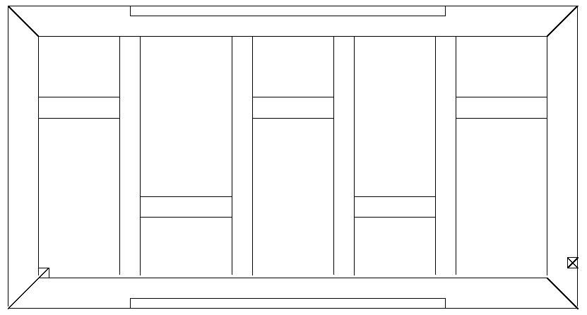
上衣和下衣一般割截成五条。桑喀帝也可以割截成五条、七条、九条、十一条、十三条，乃至更多。
“诸比库，我允许新的和相当于新的衣：桑喀帝为两层，上衣一层，下衣一层。穿旧的衣：桑喀帝可四层，上衣两层，下衣两层。于粪扫衣和店边衣则依能力随意而作。诸比库，我允许补缀、缝制、缝边、印记、加固。”(V.3.348)
“诸比库，不得持用未割截之衣。若持用者，犯恶作。”(V.3.344)
不得以桑喀帝抱膝而坐。(V.4.277)
以桑喀帝抱膝(saṅghāṭipallatthikāya) ——以桑喀帝衣围绕膝盖後以手抱着。
“诸比库，我允许六种衣：亚麻、棉、丝绸、毛织品、纻麻、麻织品。”(V.3.339)
可以用来缝制袈裟的衣料包括棉布、丝绸、毛织品、麻织品和以上的混合布料。
“诸比库，我允许六种染料：根染料、幹染料、皮染料、葉染料、花染料、果染料。”(V.3.344)
不得穿全青色衣、全黄色衣、全红色衣、全深红色衣、全黑色衣、全深赤色衣、全深黄色衣。(V.3.372)
比库不能披着正色或纯色的僧衣，比如青色(蓝色或绿色)、黄色、红色、白色、黑色等。
在经律中通常把出家人所服之衣称为“袈裟”(kāsāya, kāsāva)或“袈裟衣”(kāsāya-vattha, kāsāyavasana)。比如说：
“kesamassuṃ ohāretvā kāsāyāni vatthāni acchādetvā agārasmā anagāriyaṃ pabbajito.”
“剃除鬚髮，披着袈裟衣，从俗家出家为无家者。”
在《本行义注》中说：
“kāsāvaṃ kasāvena rajitaṃ cīvaraṃ.”
“袈裟为用黄褐色染成的衣。”
这里的kasāya或kasāva可以指橘黄色、红黄色、褐色、棕色、红色与金色的混合色，也可以指用树皮、树根等所熬煮成的染汁。
因为比库们所披之衣通常都染成橘黄色或黄褐色不等，所以，染成这种颜色的僧衣即称为袈裟衣、染色衣，或直接称为袈裟。
袈裟衣的颜色和染料有关。佛陀规定比库可以用六种原料来染衣：树根、樹幹、树皮、树葉、花和果实。在染衣的时候，先把这些原料的其中一种或几种放入染锅中加水熬煮，经熬煮出来的水自然就变成黄褐色或红褐色的染料。用这种染料染出来的衣即成为黄褐色或红褐色的袈裟衣。
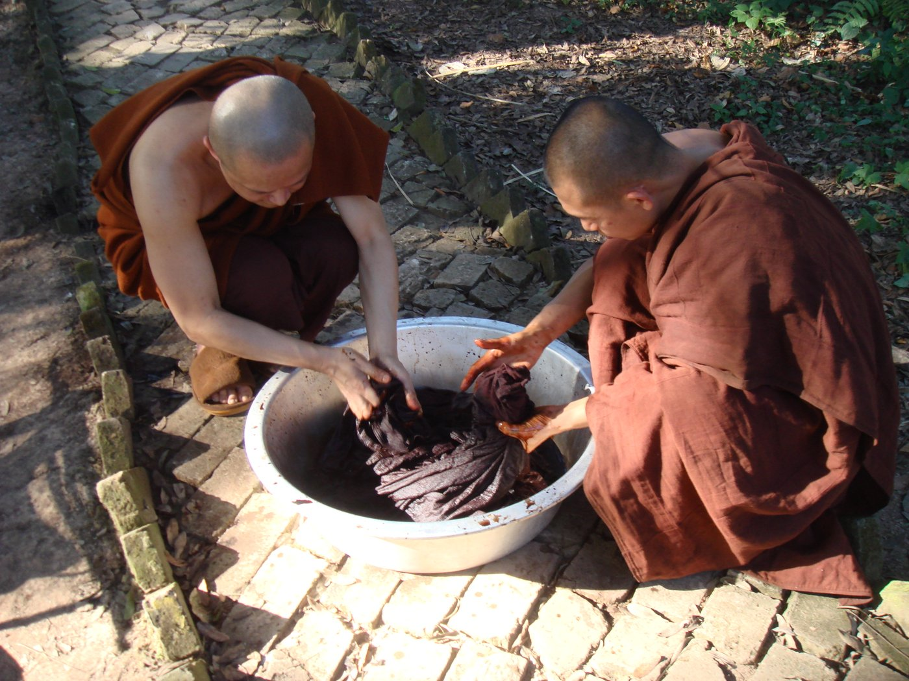
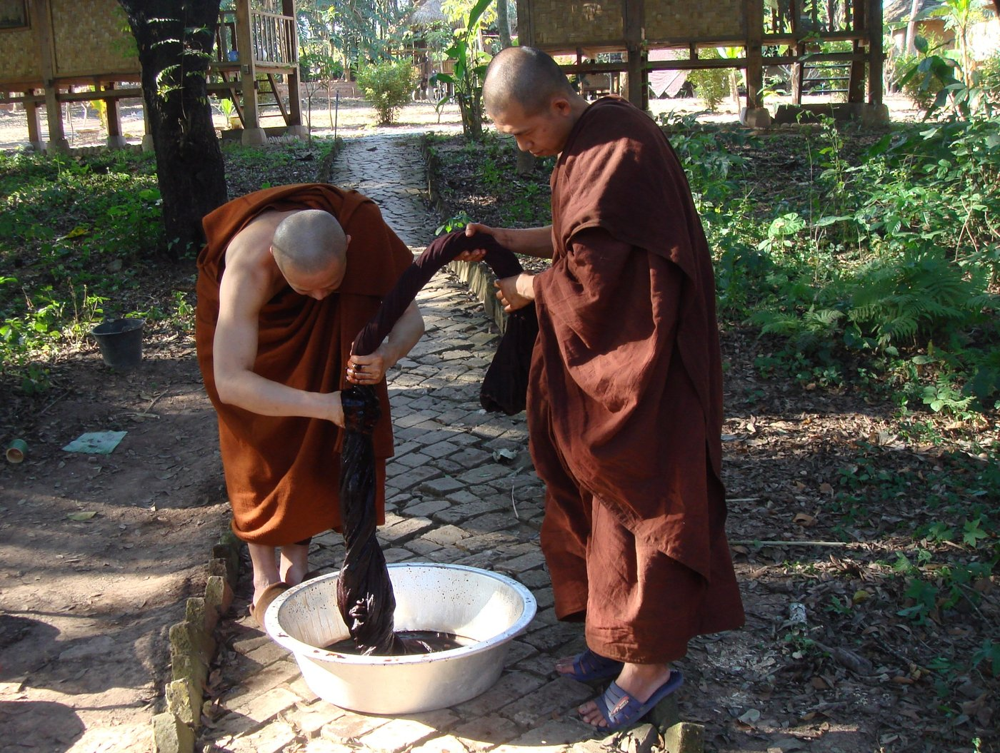
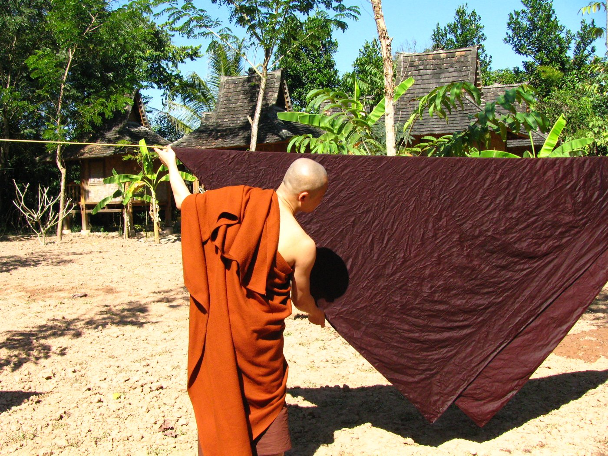
在《句形成就》(Padarūpasiddhi)、《词语手册》(Niruttidīpanī)等巴利语法书中说：以藏红花染的袈裟为紫红色，以姜黄染的为郁金香色，或也可以染成深红色、橘黄色等。
从现在上座部比库们所披的袈裟衣色来看，泰国大部派(Mahānikāya)和斯里兰卡暹罗派(Syam nikāya)的衣色多作橘黄色或橙色，泰国法相应派(Dhammayuttika nikāya)的衣色为土黄色，缅甸僧衣的颜色多为土红色、红褐色或咖啡色。
总之，上座部袈裟衣具体为哪种颜色与不同的派别传承有关，而它们又取决于染衣的原料以及所选用的树种，但应不出黄褐色或红褐色等系列的颜色。
不得穿无割截缘衣、长缘衣、花边缘衣、蛇形缘衣；不得穿盔甲、缠头巾。(V.3.372)
不得穿茅草衣、树皮衣、木片衣、人髮毛毯、马尾毛毯、鸱鸮羽衣、羚羊皮衣。(V.3.371)
不得穿牛角瓜茎衣、树皮纤维衣。(V.3.371)
不得穿外面有毛的毛衣。(V.4.249)
“诸比库，不得下着在家人的下衣：象鼻衣、鱼尾衣、四角衣、棕榈扇衣、百蔓衣。若下着者，犯恶作。”
“诸比库，不得穿着在家人的衣服。若穿着者，犯恶作。”(V.4.280)
这里有两条学处：“在家人的下衣”(gihinivatthaṃ)，律藏举出了五个例子来说明，这包括现在所说的各种裙子、裤子等。“在家人的衣服”(gihipārutaṃ)则是指上衣，包括现在的各种衬衣、外套、内衣等。
总之，任何经过量体裁剪而缝制成的，或者是在家人所穿的、具有在家人衣服特征的，包括有领口、有袖子、有口袋、有拉链、有裤腰、有裤腿等的衣服，对比库来说都是不适合的。比库所披的衣只能是一块经割截的、染成黄褐色（袈裟色）的布。
有些大长老认为：缝有口袋、两边缝合的肩袈裟(aṃsakāsāva)也是不适合的。须把口袋拆除，拆开缝合线後才可使用。
在天冷时或在寒冷地带，比库可以披覆作为杂用布(parikkhāra-coḷa)的羊毛毯或棉毯 (如前所述佛陀允许的衣料)，而不可穿着在家人的衣服。
假如比库尼和沙马内勒故意穿着在家人的衣服并乐着于该形象，则等于自动还俗。(V.A.3.110)
“诸比库，不得受持外道受持的裸体。若受持者，犯土喇吒亚(thullaccaya)。”(V.3.370)
裸体者不得礼敬人，不得受礼敬；不得使人礼敬；不得受裸体者礼敬。裸体者不得服侍裸体者；裸体者不得让裸体者服侍。裸体者不得施与裸体者；裸体者不得接受[供养]。裸体者不得咬嚼，不得吃，不得尝味，不得喝水。(V.4.261)
不绑腰带不得入村。(V.4.278)
不得穿全青色鞋、全黄色鞋、全红色鞋、全深红色鞋、全黑色鞋、全深赤色鞋、全深黄色鞋；青色边鞋、黄色边鞋、红色边鞋、深红色边鞋、黑色边鞋、深赤色边鞋、深黄色边鞋。
不得穿绑脚跟鞋、长筒靴、包脚鞋、填棉鞋；鹧鸪翅鞋、羊角尖鞋、山羊角尖鞋、蝎子尾鞋、孔雀尾饰鞋、彩色鞋。
不得穿狮皮饰鞋、虎皮饰鞋、豹皮饰鞋、羚羊皮饰鞋、水獭皮饰鞋、猫皮饰鞋、松鼠皮饰鞋、鸱鸮皮饰鞋。(V.3.246)
不得穿木屐、棕榈葉鞋、竹葉鞋。(V.3.250)
不得穿草鞋、芦荻鞋、灯心草鞋、枣椰鞋、睡莲鞋、毛织鞋，以及金制的、银制的、摩尼制的、琉璃制的、水晶制的、铜制的、玻璃制的、锡制的、铅制的、红铜制的鞋。(V.3.251)
因为包脚跟、包脚趾等的鞋子都是不适合的，所以现在的比库较常见的是穿着黄褐色的塑料人字拖鞋。
“诸比库，我允许三种固定不应取走的鞋：大便鞋、小便鞋、洗净鞋。”(V.3.251)
在大便处、小便处和洗净处可穿专用的拖鞋。
除了生病的比库以外，不得穿鞋子入村。(V.3.256)
这里的生病是指如果不穿鞋的话则不能入村者。如果在寺院、山林、野外等处，只要不是在俗人住区内，穿鞋是没问题的。当然，在天冷时或在寒冷地带，为了防病，也可以穿着袜子和拖鞋入村。
四、钵
不得持用木钵，以及金制的、银制的、摩尼制的、琉璃制的、水晶制的、铜制的、玻璃制的、锡制的、铅制的、红铜制的钵。
跋葛瓦允许两种钵：铁钵和陶钵。(V.4.252)
现在的比库多数使用铁钵 (或不锈钢钵)。在使用新钵之前，须先将铁钵熏过五次，陶钵熏过两次，然後才决意受持。(V.A.1.608)
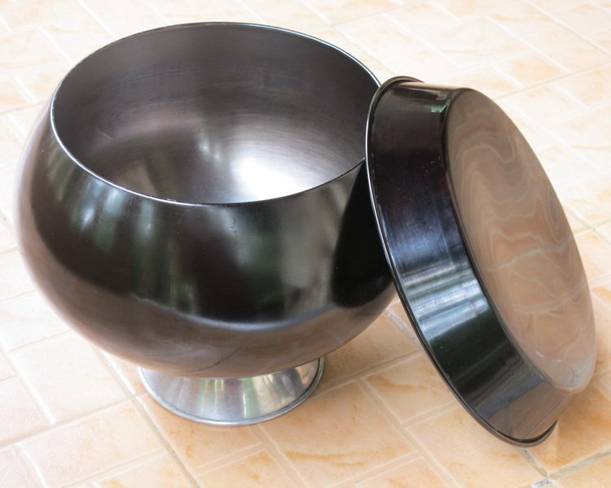
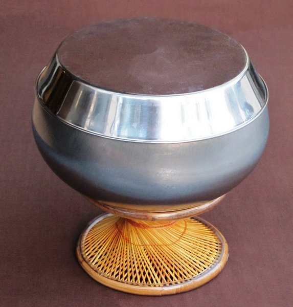
使用钵後应擦干，于太阳底下晒一会再收藏。
不得将钵直接放在地上，应放在钵垫上。
不得将钵放在台基或基座的边沿。
不得将钵放在床上或椅子上。
不得将钵放在大腿上。
不得将钵放在伞中。
不得悬挂钵。(V.4.254)
佛陀世时，比库所用之钵多数为陶钵，稍不小心即易破碎，因此佛陀就如何爱护钵盂制定了许多学处。
在外出托钵前，先以水洗净钵，倒掉水後不用擦干，将钵装进钵袋，背在肩上前往托钵。用完餐後应洗钵，倒掉洗钵水後，将钵擦干，放在太阳底下稍晒一会，以除异味。钵不应晒过久 (大约一到两分钟)，以不烫手为度。收钵後，将它收藏在床底或桌底等安全处。不得将钵放在床上或椅子上等易打翻摔破的地方。也不得将钵直接放在地上或桌子上，应放在钵垫上。假如没有钵垫，也应以布垫着钵底再放。总之，钵乃是比库随身之物、资生之器，应时时善加爱护。
“诸比库，不得手持钵开门。若开者，犯恶作。”(V.4.255)
曾有一位比库手拿着钵开门，钵被门打到而摔破，跋葛瓦乃制此学处。
只要手中拿着钵，无论是以拿钵的手，还是用另外一只手开门都不行。不管钵是在手中，还是在脚背或身体的任何一个部分，也不管是用手、用脚、用头或用身体的任何一个部分开门、拉高门闩或打开锁头都不行。不过，若是把钵挂在肩上後安详地开门则是可以的。
不得用钵清除残渣、骨头或脏水。(V.4.255)
残渣(calakāni) ——吃完後丢掉的食物；
骨头(aṭṭhikāni) ——鱼、肉等的骨头；
脏水(ucchiṭṭhodakaṃ) ——漱口水。
如果用钵来清除这些东西者，犯恶作。同时不能用钵来洗手，也不能把洗手水、洗脚水等倒进钵中装着。若手沾有食渣，则不能去拿没有食物的干净钵。如果钵中还剩有食物，在外面用水洗手後拿着则可以。不能把想要丢掉的鱼、肉、水果、菜等的骨头或残渣放在钵中，但若还想继续再吃则可以放。可以把骨头、鱼刺等放在钵中用手挑出来後再吃。只要是从口中取出的任何还想继续再吃的食物，都不能再放进钵中；但生姜片、椰子片等咬了过後则可再放。
不得用葫芦[盛食]行乞；不得用锅行乞；不得持髑髅钵。(V.4.255)
[不同的比库]不得用同一容器吃，不得用同一杯喝水；不得共享一床，不得共享一敷具，不得共享一外衣，不得共享一敷具套。(V.4.264)
无滤水器不得外出旅行。假如没有滤水器或水瓶，应决意用桑喀帝衣角让水过滤後再饮用。(V.4.259)
五、食物
“诸比库，我允许僧团食、指定食、邀请食、行筹食、半月食、斋日食及月初食。”(V.4.325)
“诸比库，不得明知而食用指定杀的肉。若食用者，犯恶作。诸比库，我允许三际清净的鱼、肉：不见，不闻，不疑。”(V.3.294)
不见(adiṭṭhiṃ) ——施主拿来供养的肉，是比库并没有看见这是专为比库们宰杀的动物、鱼虾。
不闻(asutaṃ) ——所拿来供养的肉，是比库并没有听说这是专为比库们宰杀的动物、鱼虾。
不疑(aparisaṅkitaṃ) ——知道这是排除了见疑、闻疑，以及两者俱非疑的鱼、肉。
若比库见到人们手里拿着网笼等离开村子走进山林，第二天进入该村托钵时得到有鱼、肉的食物，他由于见到而怀疑“这是否是为了比库们而杀的？”这称为“见疑”而不能接受。若无疑者则可接受。但若问明这并非为了比库们而杀的之後则可食用。
对于“闻疑”则是并没有看见却因听说而起疑。对于“两者俱非疑”则是既没有看见也没有听说，但却怀疑是为了比库们而杀的。
对于这三种清净鱼、肉，在律注的“破僧学处”中有详细解释。(V.A.1.410)
佛陀允许僧人食用三种清净的鱼和肉，但现在也有许多上座部比库出于慈悲、卫生、健康等原因而选择素食。然而，选择素食还是杂食只属于个人的问题，与信仰和戒律无关。作为佛陀的弟子，不应把素食当成戒律或佛制来受持与奉行。我们必须谨记在佛陀晚年时，迭瓦达德为了分裂僧团而提出的五项“邪法”“邪律”，其中最後一项便是:“终生不得吃鱼、肉。若吃鱼、肉者，即犯其罪。”(V.1.409; V.4.343)
不得吃十种肉：人肉、象肉、马肉、狗肉、蛇肉、狮子肉、虎肉、豹肉、熊肉和鬣狗肉。不得未观察而吃肉。(V.3.280-281)
这里所指的狗肉，如果是与狗同科的称为野狼的肉则可以吃。但是，家犬及由狼和家犬交配所生的狼狗则不适合，因为这两种非常接近。
蛇肉——任何无足的、细长的陆上生类的肉都不能吃。
在此，对于人肉是因同类故不吃；象肉、马肉则是因国王的兵种故不吃；狗肉、蛇肉则因其厌恶故不吃；狮子肉等五种则是为了自己的安全故不吃。
假如比库吃人肉，犯土喇吒亚；吃其它九种动物的肉，犯恶作。未观察而吃肉者，也犯恶作。
对于人肉等十种，包括肉、骨、血、皮、毛等一切都是不适合的。无论知还是不知，吃了即犯戒。知而吃者，应忏悔。不询问而吃者，在接受时即犯恶作；询问後再接受者不犯。明知是指定而杀的却仍然吃者犯戒。
“诸比库，我允许有病者吃糖；无病者喝糖水。”(V.3.284)
“诸比库，我允许有病者喝咸酸酱。无病者[则以之]混合水而当饮料饮用。”(V.3.273)
允许反刍者反刍。但若取出口外後则不得再吞咽。(V.4.273)
在施主给食物时，掉落的食物可以自己捡起来吃，但已放弃的则由施主[处理]。(V.4.273)
“婆罗门，粥有此十种利益。哪十种呢？施粥者施寿、施色、施乐、施力、施辩，喝粥者退饥、除渴、顺气、清血管、消宿食。婆罗门，粥乃有此十种利益。”(V.3.282)
“诸比库，当天接受的掺有时限药的夜分药，于时内适合，于非时则不适合。诸比库，当天接受的掺有时限药的七日药，于时内适合，于非时则不适合。诸比库，当天接受的掺有时限药的终生药，于时内适合，于非时则不适合。
诸比库，当天接受的掺有夜分药的七日药，于夜分内适合，超过夜分则不适合。诸比库，当天接受的掺有夜分药的终生药，于夜分内适合，超过夜分则不适合。诸比库，已接受的掺有七日药的终生药，于七天内适合，超过七天则不适合。”(V.3.305)
六、坐卧处
“诸比库，我允许五种居处：住所、半檐屋、殿楼、楼房和洞窟。”(V.4.294)
住所(vihāraṃ) ——除半檐屋等之外的其馀居所。
半檐屋(aḍḍhayogaṃ) ——屋顶的形状像金翅鸟的翅膀般弯曲的房屋。
殿楼(pāsādaṃ) ——高的殿楼。
楼房(hammiyaṃ) ——在楼顶的平台上面建有顶屋的楼阁；或者说是平顶的楼阁。
洞窟(guhaṃ) ——包括砖瓦洞、岩石洞、木洞、尘土洞等。
对于前面四种建筑物，缅甸的大长老解释说它们的差别主要在于屋顶:“半檐屋”为屋顶如金翅鸟的一边翅膀般只向单边下斜的房屋。“殿楼”为屋顶上面竖立有装饰性尖顶的多层建筑物，而“楼房”则是屋顶为平顶的建筑物。至于屋顶呈其它各种式样的建筑物，在这里皆统称为“住所”。
“诸比库，我允许一切殿楼用品。”(V.4.320)
一切殿楼用品(sabbaṃ pāsādaparibhogaṃ) ——附属于殿楼的所有家具设备——包括用金银等装饰的门窗、床椅、棕榈扇子，以及用金银制作的水壶、水杯等，所有这些经过装饰加工的都可以使用。假如施主们说“我们为了这座殿楼而供养奴婢、仆人、田地、牛和水牛”，若是单独分开来供养则不能接受，只能在接受殿楼时作为附属品一起接受。对于长毛氍等大床座，无论是铺设在僧团住所或个人住所的床上或椅子上，都不能使用。然而，若是由在家人搬来摆设在法座上的则可以坐，但不得躺卧。
“诸比库，我允许五种屋顶：瓦屋顶、石屋顶、石灰屋顶、草屋顶和葉子屋顶。”(V.4.303)
对于二十种高、大床座，跋葛瓦说：“诸比库，我允许除了高床、兽脚床和棉垫三种之外，[属于]在家人的物品可以坐，但不得躺卧。”(V.4.314)
若在俗人区（村庄）的食堂中摆有装填棉花的高大床座，[属于]在家人的物品可以坐，但不得躺卧。(V.4.314)
对于二十种高、大床座，跋葛瓦又说:“诸比库，我允许把高床锯脚後使用，把兽脚床的猛兽像锯掉後使用，把棉垫拆开後做成枕头。其馀的可作地毯使用。” (V.4.320)
允许使用填塞木棉、蔓棉或草棉三种棉花的枕头。
“诸比库，不得持用半身大的枕头。若持用者，犯恶作。诸比库，我允许做如头大小的枕头。”(V.4.297)
“诸比库，不得持用高的床脚垫。若持用者，犯恶作。诸比库，我允许最高为八指的床脚垫。”(V.4.297)
“诸比库，我允许五种褥垫：毛垫、布垫、树皮垫、草垫和葉垫。”(V.4.297)
不得使用大兽皮，如狮子皮、老虎皮、豹皮、牛皮。(V.3.255)
对于铺以兽皮或以兽皮包裹的床和椅子，[属于]在家人的物品可以坐，但不得躺卧。(V.3.256)
在一切边地允许使用兽皮敷具：羊皮、山羊皮、鹿皮。(V.3.259)
古印度把中印度恒河流域一带地区称为“中区”(majjhe)；除了“中区”以外的所有地方都属于“边地”(paccantimā janapadā)。
为了保护身体、保护衣、保护坐卧具，许用坐具。(V.3.353)
坐具(nisīdana)应按照规定的尺寸缝制：长为善至张手的两张手，宽为一张半，再加一张手的缘。
现在的比库已很少使用严格意义上的坐具了，多数是使用作为杂用布(parikkhāracoḷa)的坐布。
“诸比库，不得找借口占据坐卧处。若占据者，犯恶作。”(V.4.316)
“诸比库，取得坐卧处後不得一切时都占据。若占据者，犯恶作。诸比库，我允许雨季的三个月占据，但[凉季和热]季时则不得占据。”(V.4.318)
“诸比库，不得一人占据两处[坐卧处]。若占据者，犯恶作。”(V.4.319)
“诸比库，我允许同座（瓦萨）者在一起坐。”
“诸比库，我允许三瓦萨之内在一起坐。”
“诸比库，我允许三人之床、三人之椅。”
“诸比库，我允许两人之床、两人之椅。”
“诸比库，除了般哒格、女人和两性人之外，不同座者可一起坐在长座上。”
“诸比库，我允许至少能够坐三人的为最小的长座。”(V.4.320)
“诸比库，在一处的用品不得在他处使用。若使用者，犯恶作。”但允许暂时借用，也允许为了保护而暂移。(V.4.324)
“诸比库，不得不洗脚而踏坐卧处。若踏者，犯恶作。”
“诸比库，不得以湿脚踏坐卧处。若踏者，犯恶作。”
“诸比库，不得穿鞋踏坐卧处。若踏者，犯恶作。”(V.4.324)
这里的坐卧处是指建筑物的地面，如木地板、水泥地板、石地板、瓷砖地板等。如果是未经加工的或表面粗糙的地面，如砖路、泥沙路等则不在此限。
在南传上座部佛教国家和地区，有脱鞋进入寺院、佛塔、公共建筑物，乃至普通人住所的习俗。因此，在寺院建筑、僧房等的门口，一般都会准备洗脚水、擦脚垫和擦脚布。
在进入佛塔、寺院建筑等之前，应先脱掉鞋子。如果脚底肮脏，则应先在门外洗脚，再依次用擦脚垫和擦脚布擦干後再进入。
“诸比库，不得在撒了花的卧具上躺卧。若躺卧者，犯恶作。”收到香後可放在门上的五指处；收到花後可以放置在住所的一边。(V.4.264)
现在的做法是：在接受香、花的供养後，通常会拿去供佛或供塔。
“诸比库，不得在已作过处理的地上吐痰。若吐痰者，犯恶作。诸比库，我允许痰盂。”(V.4.324)
为了不使床脚、椅脚等刮损已作过处理的地板，允许用布包缠床脚及椅脚。(V.4.324)
“诸比库，不得倚靠在已作过处理的墙上。若倚靠者，犯恶作。诸比库，我允许靠板。”
为了不使靠板刮损地板和墙，允许用布包缠靠板的上下两端。(V.4.324)
七、身形
“诸比库，不得留长头髮。若留者，犯恶作。诸比库，我允许[留]两个月或两指长。”(V.4.246)
于此，假如头髮在两个月之内可以长到两指长，则应当在两个月之内剃头，超过两指长则是不适合的。即使头髮不长，在两个月之内也应剃头，而不得超过哪怕只是一天。在这里所说的两个月或两指长两种都是指最高的极限，若始终保持在此限度之内就不会有问题。
按照现在一般比库们的习惯，每隔七、八天就会剃一次头，时间多数在每个月的四斋戒日或斋戒日前一天。
不得留长指甲。指甲可剪至齐指肉的程度。
不得磨光二十只指甲，只允许去除污垢。(V.4.274)
不得留胡子，不得留髯。
不得留长鼻毛。
不得拔白头髮。
不得用剪刀剪头髮，除非为了治病（如涂伤口）。(V.4.275)
不得剃阴毛，除非为了治病。(V.4.275)
“诸比库，不得在私处周围两指内作开刀或捆扎。若作者，犯土喇吒亚。”(V.3.279)
开刀或捆扎(satthakammaṃ vā vatthikammaṃ vā) ——如在规定的范围内用刀、针、刺、锥、石片或指甲等任何物品切、割、刺或划皆不应为，因这一切都算是开刀。但若用任何皮革或布挤压下体皆不应为，因这一切都算是捆扎。
在此“私处周围两指内”(sambādhassa sāmantā dvaṅgulā)这只是针对开刀而言，但只禁止在私处捆扎。然而为了在那儿倒碱水可以用任何绳子绑住，如果它被弄断就算断了。即使患疝气也不可开刀，因为割开阴囊取出睾丸属“我将无病[出精]”而不可以，但不排除用火烧、涂药。在肛门涂药或插布卷、小竹管是可以的，可用它来倒碱水或灌油。
“诸比库，不得断自己的生殖器。若断者，犯土喇吒亚。”(V.4.251)
假如割截耳朵、鼻子、手指等身体的任何部分，或作任何会带来痛苦的自残行为者，犯恶作。但是，若被蛇、虫咬伤，或其它由于生病等原因而需要弄出血或割截者则不犯。
不得穿戴耳饰、珠链、项链、腰饰、腕环、臂钏、手镯、指环。(V.4.245)
不得以镜子或水钵照脸形。如果因病则允许。(V.4.247)
这里的病是指脸上长疮或受伤，为了涂药等而必须照镜子。如果想知道“我的皮肤是否长疮了？长得怎么样?”或者为了知道自己的寿行(年岁)“看我有多苍老了?”而照镜子也是可以的。
八、其它
“诸比库，我允许扇以及棕榈扇。”(V.4.269)
扇(vidhūpana) ——一般用来生风纳凉的扇子。
棕榈扇(tālavaṇṭa) ——包括用棕榈树葉做成的扇子。用竹子、牙、竹片、孔雀尾或皮革等各种材料制成的扇子都可以使用。
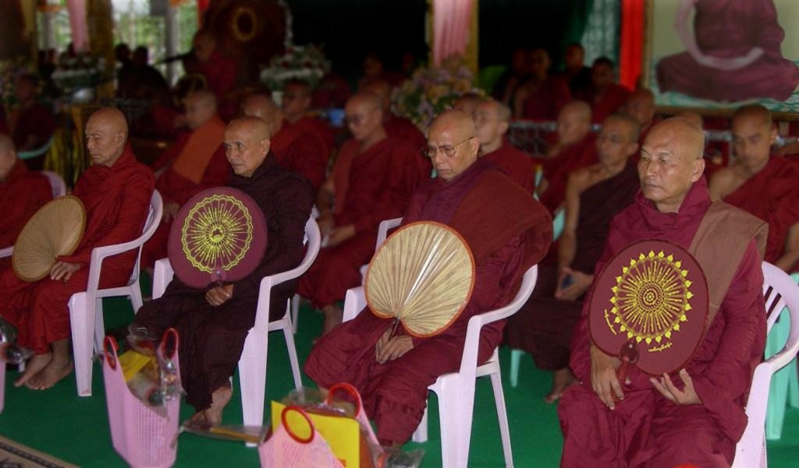
许多上座部僧人都喜欢随身携带一把棕榈葉扇。在托钵时，可以用扇子挡风遮尘；在天热时，可以用扇子挡热遮阳；在诵经和开示时，可以用扇子来收摄根门。在缅甸和泰国等国，政府还把特制的扇子作为一种荣誉或封号的象征，颁授给德高望重和博学多闻的长老比库。
“诸比库，我允许有病者[持伞]，以及无病者在僧园中、僧园附近持伞。”(V.4.270)
假如是发烧、胆汁病、弱视或其他任何不打伞就会生病者，则无论在村镇还是在林野都可以打伞。在下雨时为了保护衣，在猛兽出没的危险地带为了保护自己，也是可以打伞的。一葉伞（用一片棕榈葉制成的伞）则在任何地方都可以使用。
有病者允许[乘坐]牡牛车、手拉车。(V.3.253)
这里的牡牛车(purisayuttaṃ)，无论是由女人驾驶还是由男人驾驶都可以坐；对于手拉车(hatthavaṭṭaṃ)，无论是由女人还是男人拉的都可以。
有病者允许[乘坐]担轿、椅轿。(V.3.253)
不得烧山林。但发生山火时允许逆烧来作防护。(V.4.283)
不得爬树。但有事时则可爬至人的高度，发生灾难时则可爬到任意高度。(V.4.284)
“诸比库，不得行种种不应行：种植也令种植小花树，浇水也令浇，采集也令采集，编织也令编织；扎也令扎一边枝的花鬘，扎也令扎两边枝的花鬘，扎也令扎花枝鬘；做也令做花环，做也令做头饰，做也令做耳饰，做也令做胸饰。
送也令送一边枝的花鬘给良家妇女、良家闺女、良家少女、良家新娘、良家婢女；送也令送两边枝的花鬘，送也令送花枝鬘；送也令送花环，送也令送头饰，送也令送耳饰，送也令送胸饰。
他们与良家妇女、良家闺女、良家少女、良家新娘、良家婢女用同一容器吃，用同一杯喝水；坐同一座位，共享一床，共享一敷具，共享一外衣，共享一敷具套。
于非时食，饮酒，持用花鬘、芳香、涂香。跳舞、唱歌、奏乐、嬉戏。随[舞女]跳舞而跳舞，随跳舞而唱歌，随跳舞而奏乐；随唱歌而跳舞，随唱歌而唱歌，随唱歌而奏乐，随唱歌而嬉戏；随奏乐而跳舞，随奏乐而唱歌，随奏乐而奏乐，随奏乐而嬉戏；随嬉戏而跳舞，随嬉戏而唱歌，随嬉戏而奏乐，随嬉戏而嬉戏。
玩八格，玩十格，玩空戏；玩踩线，玩取石，玩骰子，玩击棍，玩印手，玩球，玩葉笛，玩锄，玩翻跟斗，玩风车，玩葉斗，玩车，玩弓，玩猜字，玩猜心，玩模仿残废。
学象术，学马术，学车术，学弓术，学剑术。在象前跑，在马前跑，在车前跑；跑去，跑回。吹口哨，拍手，搏斗，拳斗。在舞台上铺开桑喀帝对舞女说:‘阿妹，在这儿跳舞!’并喝彩。
诸比库，不得行种种不应行。若行者，应如法处理。”(V.4.293)
不应行(anācāraṃ) ——又说非行，非法行，不正行；不应行的行为，不应做的事情。凡比库从事这一类的不良行为，犯恶作者，应以犯恶作罪处理；犯巴吉帝亚者，则应以巴吉帝亚罪处理。(V.A.4.293)
在《律藏·巴拉基格》的“桑喀地谢思学处”中，把有上述种种不良行为的比库称为污家者、恶行者。
污家者(kuladūsaka) ——《律藏》中解释：
“家名为四种家：刹帝利家、婆罗门家、吠舍家、首陀罗家。污家即是以花、果、粉、粘土、牙枝、竹、药方或走役信使等玷污诸家。”(V.1.437)
也即是说：比库通过赠送礼物给在家人、为在家人送信走使、提供劳力服务等行为来攀缘、讨好在家人，从而使在家人对清净僧团、对持戒比库的信心受到污染。
恶行者(pāpasamācāra) ——《律藏》中解释：
“恶行者即是种植也令种植小花树，浇水也令浇，采集也令采集，编织也令编织者。”(V.1.437)
这一类行为也包括下棋、打牌、赌博、玩游戏、打球、猜字、舞刀弄剑、跑跳、唱歌、跳舞等不适合出家人的下劣行为。
假如这一类的恶行已经玷污了在家人的信心，影响极为恶劣，严重破坏了僧团的形象，僧团必须对那些污家、行恶的劣行比库举行驱出甘马(Pabbājanīya-kamma)，即把他们驱逐出其居住的地区。(V.1.4334; V.4.23-4)
“诸比库，我允许给与父母亲。诸比库，不得破坏信施。若破坏者，犯恶作。”(V.3.361)
为了保护信众对比库、对僧团的信心，比库不能把信众们基于信心而供养比库的生活必需品等在还没有使用前就转送给包括亲戚在内的其他在家人。
然而，佛陀特许比库们可以把所得到的供养品送给对自己有生养重恩的父母亲。
“诸比库，你们没有母亲、没有父亲照顾你们。诸比库，假如你们不互相照顾，那有谁来照顾呢？诸比库，谁想照顾我，他就应照顾病人!”(V.3.365)
不得前往观看跳舞、唱歌、演奏。(V.4.248)
“诸比库，以拉长歌声唱诵法者有此五种过患：自己贪著其声；他人也贪著其声；诸居士讥嫌；为希求音调而坏三摩地；使後来的人落于成见。诸比库，以拉长歌声唱诵法者乃有此五种过患。
诸比库，不得以拉长歌声唱诵法。若唱诵者，犯恶作。”(V.4.249)
这里的以拉长(āyatakena)是指把各种诵法分开来，在诸字音消失後仍然持续。对于法，有称为经文的诵法，有称为本生的诵法，有称为偈颂的诵法，诵完它後不能再拉太长的声。应以完美的读诵法(caturassena vattena)来开示完整的文句。
使後来的人落于成见(pacchimā janatā diṭṭhānugatiṃ āpajjati) ——以像唱歌一样拉长声调的方法唱诵佛法，将会使後来的人陷入这样的错误见解:“我们的亲教师、老师也都是这么样唱诵的。”
尽管只是拉长声调来唱诵佛法都有这些过患。如果把经文、偈颂等编成歌曲来唱，或者用歌曲、音乐的形式来称颂赞叹佛法僧的功德，则违犯离跳舞、唱歌、演奏的学处。
古印度有以歌舞伎乐来供养宗教导师与圣物的习俗，但那只是在家人的事情；即使对于正在受持八戒的在家居士也不适合，更何况出家人！
“诸比库，不得把佛语加上音韵。若加上者，犯恶作。诸比库，我允许用自己的语言来学习佛语。”(V.4.285)
音韵(Chanda) ——像读诵吠陀语一样的梵语读诵法(vedaṃ viya sakkatabhāsāya vācanāmaggaṃ)。“音韵”是一种吐字讲究、格律工整、文句优雅、韵律长短有序、声调抑扬顿挫的婆罗门读诵法，常被运用于造偈语颂诗，为当时的婆罗门等高等种姓所采用。音韵学是梵语的重要组成部分，有时也可等同于梵语。
自己的语言(sakāya niruttiyā) ——正自觉者所说的称为马葛提语(Māgadhiko vohāro)的方言。马葛提口语属于古印度的民众方言——布拉格利德语(Prākrit)的一支，是一种在佛陀住世时中印度恒河流域一带地区被普通老百姓广泛使用的方言。现在南传上座部佛教所使用的圣典语——巴利语(Pāḷi-bhāsā)就是源自于马葛提语。
不得学习世间论，也不得教人。(V.4.286)
世间论(lokāyataṃ) ——比如说一切都是不纯净的、一切并非不纯净；白色的乌鸦、黑色的鹤等。以如此这般的方式，与这些毫无意义的理论相应的外道学说。
不得学习畜生明，也不得教人。(V.4.287)
畜生明(tiracchānavijjaṃ) ——任何外学的无意义的御象术、御马术、驾车术、弓箭术、刀剑术等，以及魔法、诅咒、念咒、蛊毒等各种能够伤害他人的技术。
四大引据
“诸比库，凡是我未曾禁止:‘这是不许可的。’假如它随顺不许可的，违背于许可的，它对你们则是不许可的。
诸比库，凡是我未曾禁止:‘这是不许可的。’假如它随顺于许可的，违背不许可的，它对你们则是许可的。
诸比库，凡是我未曾准许:‘这是许可的。’假如它随顺不许可的，违背于许可的，它对你们则是不许可的。
诸比库，凡是我未曾准许:‘这是许可的。’假如它随顺于许可的，违背不许可的，它对你们则是许可的。”(V.3.305)
跋葛瓦教导这四大引据是为了让比库们能够掌握如何判断跋葛瓦所未制定的学处之原则。
律注中首先举了“夜分药”的例子来说明：非时饮用七谷之汁是不许可的，为跋葛瓦所禁止。但棕榈果、椰子、菠萝蜜、面包果、葫芦、冬瓜、黄瓜、胡瓜、南瓜这九种大果，以及一切谷物皆是随顺于谷类的，虽然跋葛瓦并不曾禁止这些，但它们却是随顺于不许可的，因此其汁不可在非时饮用。跋葛瓦曾许可八种果汁，其馀的诸如藤、罗望子、香橼、花红等小果之汁虽然并没有被包括在八种果汁之内，跋葛瓦也不曾许可这些，但它们却是随顺于许可的，因此是适合的。除了随顺于谷果汁的之外，则不存在其它不许可的果汁。
又比如衣，跋葛瓦曾许可六种衣料，但随顺的还有黄麻布、巴东纳丝(pattuṇṇa)、中国丝(cīnapaṭṭa)、索马拉丝(somārapaṭṭa)、神变衣、天人所施衣等在六种许可衣之外的。在此，巴东纳等三种丝布是依出产地命名的，这三种随顺于丝绸，黄麻布属于纻麻，剩下两种则可以是棉或其它布料。另外，在律注中又继续举了钵、杯子、腰带、伞的例子来说明。
随着时空的变迁，现代的比库可能会遇到许多佛陀在世时所没有的事物和问题，诸如比库可否看报纸？可否看新闻视频？可否上网？可否使用手机？可否使用照相机和摄影机？可否坐摩托车？可否开汽车等等。要回答与解决这一类的问题，我们就可以根据这四大引据的原则来进行判断和选择。
第九章 护僧须知
以下所列出的学处是比库必须受持与遵行的学处，但是跋葛瓦并没有要求沙马内勒遵守。然而，只要沙马内勒与比库或僧团在一起共住，他就必须知道和了解这些学处。因为有许多学处是限制比库不能做但是沙马内勒却是可以做的，所以在许多方面比库和僧团需要沙马内勒的协助。假如沙马内勒不懂得比库的这些学处，比库将会觉得很不方便甚至不能很好地持戒。为此，沙马内勒应遵从比库的吩咐，积极协助比库们持好戒。假如沙马内勒对比库学处表现出无知或者疏忽时，其亲教师、老师或其他贤明的比库都有必要教导和提醒他。
为了护持与协助比库们能够持好戒律，为了使清净的僧团能够更好地运作，沙马内勒学习与了解比库学处也是很有必要的。同时，如果沙马内勒有意愿成为比库，学好比库学处也可为日後的行持打好基础。
Pc.4:“若比库与未达上者同句教诵法者，巴吉帝亚。”(V.2.45)
未达上者(anupasampanna) ——佛教的出家众可分为五众：比库(bhikkhu)、比库尼(bhikkhunī)、在学尼(sikkhamānā)、沙马内勒(sāmaṇera)和沙马内莉(sāmaṇerī)。其中，比库、比库尼因为已经达到了上位，成为僧团的正式成员，故称为“达上者”(upasampanna)。除了比库、比库尼之外，在家人和其他的出家众皆称为“未达上者”。
由于现在已经没有上座部比库尼了，自然也就不会有在学尼与沙马内莉。因此，在上座部佛教地区所说的未达上者，是指除了比库之外的所有人。
同句教诵法(padaso dhammaṃ vāceyya) ——依句而教诵，或依字而教诵。这里的“教诵”是指教导念诵。即使比库在教导巴利语佛法时在讲台上面念诵，未达上者小声跟着一起念，比库也犯戒。但如果老师让比库与未达上者一起读诵，或者大家在一起学习时复诵则不犯。
因此，若未达上者向比库请教、学习巴利佛法时，不应在比库念诵时跟着一起念，即使是在求受皈戒时也不应一起念，而应等比库念完後才出声。不过，有些长老认为，如果未达上者已学会背诵经文，在做早晚课诵时与比库们在一起念诵还是可以的。
Pc.5:“若比库与未达上者同宿超过两、三夜者，巴吉帝亚。”(V.2.51)
同宿(sahāseyyaṃ kappeyya) ——同在屋顶全部有覆盖、墙壁全部封闭、大部分覆盖、大部分封闭的地方过夜。
只要一座建筑物有共同进出的门，无论里面有一百间房子，也犯。但是，如果有两个各自不同出入的门，而且中间有墙壁隔开，则不算同宿。
超过两、三夜(uttaridirattatirattaṃ) ——在上述的住所中与未达上者同宿了两、三夜後，到第四天日落时，比库于未达上者躺卧之处躺下，即犯巴吉帝亚。
住两、三夜，或不足两、三夜者；只住了两夜，在第三夜天亮前离开後再住者；在全部未覆盖、全部未封闭等处而住者；比库与未达上者双方只要有一方坐着者，都不犯。
Pc.8:“若比库实得上人法而告诉未达上者，巴吉帝亚。”(V.2.69)
上人法(uttarimanussadhamma) ——也作过人法，即超越常人的能力与证量，如禅那、神通、果证等。
在律藏中解释：
“上人法名为禅那、解脱、定、等至、智见、修道、证果、断烦恼、心离盖、乐空闲处。”(V.1.198)
假如比库说了虚妄不实的上人法，则犯巴拉基格。即使真的拥有禅那等上人法，却告诉除了比库之外的其他人，也犯巴吉帝亚。
因此，沙马内勒可以向堪能贤明的比库学习和把取禅修业处，比如请教说:“尊者，应如何证得初禅?”但却不应该询问其个人禅修经验。
Pc.10:“若比库掘地或令掘者，巴吉帝亚。”(V.2.85)
地可以分为自然地(jātapathavī)和非自然地(ajātapathavī)两类。自然地又可分为纯地、混合地与堆积地三种。
纯地——自然的纯尘或纯土；
混合地——尘或土混杂有岩石、砾石、陶片、沙砾、沙其中一种的三分之一者；
堆积地——淋湿超过四个月的尘堆或土堆。
未经烧过的也称为自然地。
纯岩石等、岩石等超过三分之一的混合地，以及已经烧过的名为非自然地。
这里所说的“地”是指自然地而言。“掘”包括挖掘、破坏、烧等。若比库自己挖掘自然地或者叫他人挖掘者，犯巴吉帝亚。
不过，沙马内勒可以掘地。所以，如果比库对沙马内勒说“给我一些土”“拿些土来”“我需要一些土”“这土你作净”“如果这里有条水沟的话将会很好”等，他则应知道比库的意思而帮忙做适当的事情。
Pc.11:“坏生物村者，巴吉帝亚。”(V.2.90)
生物村(bhūtagāma) ——在此，生存和已存在者为生物(bhūta)，亦即生长、成长和已生、已成长的意思；类聚为村(gāma)。诸生物的村为“生物村”，如正在生长的蔬菜、青草、树木等。故生物村即草木，树木，植物。
生物村依其栽种的方式可以分为五类，称为“五类种生”(pañca bījajātāni)：根种、茎种、节种、枝种、籽种。
这里的“坏”包括砍伐、破坏、火烧。比库自坏或令人坏者，犯巴吉帝亚。
因为跋葛瓦并没有禁止沙马内勒砍伐草木，所以，如果比库对沙马内勒说“看，这里长了很多杂草”“给我这个”“把这个拿来”“我需要这个”“这个你作净”等，他则应知道比库的意思而帮忙做适当的事情。
Pc.40:“若比库把未授与的食物持入口中者，除了水、齿木外，巴吉帝亚。”(V.2.265)
未授与(adinnaṃ) ——还没有被接受。
授与(dinnaṃ) ——授与者在伸手所及的距离之内，以身体、身体连接物或投放三种方式中的一种给与，比库以身体或身体连接物接受，如此称为“授与”。
食物(āhāraṃ) ——除了水和用来清洁牙齿的齿木(dantapoṇa)之外，任何可以吞咽的东西皆称为食物。
由于比库不能吃任何未经授与的食物，因此沙马内勒或在家人应帮忙授与。授与时，应站在比库伸手所及的范围之内——不应离得太远——然後把食物或装有食物的钵、碗、盘、袋子等递给比库，或倒入比库的钵中。也可以把食物摆放在一张小桌子上，然後在比库伸手所及的范围之内抬起小桌子——只要其重量不超过一个中等男子能抬得起的重量——比库只需伸出一只手碰触桌沿，如此也成为授与。
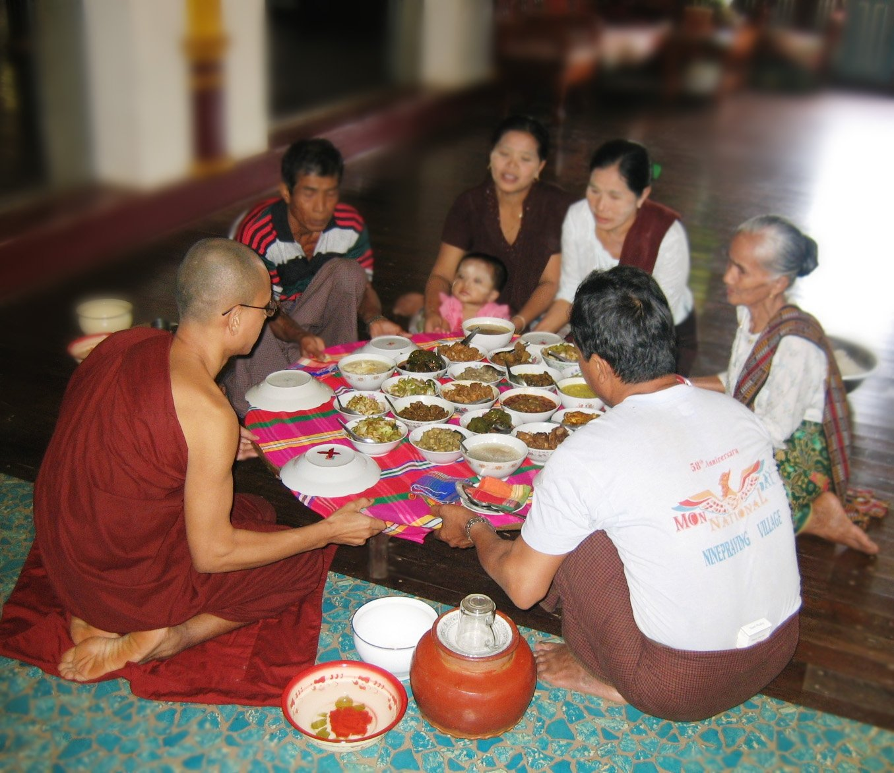
食物只要授与给一位比库，其他所有的比库都可以食用。
所有食物只需授与一次，比库即可在相应的期限内食用。如接受了时限药後可以在午前食用；接受蜂蜜後，可以存放七天服用；接受了终生药之後则可终生存放以及服用。
Np.23:“凡生病比库们所服用的那些药，这就是：熟酥、生酥、油、蜂蜜、糖。接受那些後，最多可以储存七日食用。超过此者，尼萨耆亚巴吉帝亚。”(V.1.622)
比库服用不完的酥油、油、蜂蜜、糖等七日药必须在七天之内捨弃。假如比库存放七日药超过七天，捨弃後即使再获得，也不能用来涂抹伤口或服用，只能用来点灯。不过，若是比库以不期望取回之心完全捨弃该七日药後，再获得时即使服用也是适合的。
Pc.38:“若比库咀嚼或食用储存的副食或主食者，巴吉帝亚。”(V.2.253)
“诸比库，不得食用在屋内放、在屋内煮、自己煮、[自己]捡起而接受者。若食用者，犯恶作。”(V.3.295)
比库不能储存食物 (时限药)，不能自己烹煮食物，也不能把水果等食物先捡起来之後才叫净人授与。
因为许多食物对比库来说都有时间上的限制，所以，如果有人供养比库大量的时限药、七日药，或者含有时限药、七日药的药品，只要比库还没有碰触过，沙马内勒则可以帮比库保存，以便适时、适量地供养给比库，不至于比库使用不完而造成浪费或者犯戒。
在必要时 (如比库生病、托钵获得生食等)，沙马内勒还可烹煮食物供养比库。
“诸比库，我允许以五种沙门净而食用水果：火损坏、刀损坏、指甲损坏、无种子，种子已除去为第五。诸比库，我允许以此五种沙门净而食用水果。”(V.4.250)
如果比库在接受含有种子的水果或者还有可能生长的瓜豆蔬菜等（即可经由种子、根、节、块茎而生长的植物）之供养时，可先让沙马内勒或居士作净，使其成为比库可以使用的如法物品之後才能食用。
作净时，比库把果蔬交给作净者，接着说：
比 库：Kappiyaṃ karohi.
作净（使它成为如法）吧！
作净者：Kappiyaṃ, Bhante.
尊者,[这是]净的。
有五种作净的方法：
1. 火损坏：在火上烧过乃至擦过；
2. 刀损坏：用刀、叉等将果皮弄破；
3. 指甲损坏：用指甲将果皮弄破；
4. 无种子：原本就无种子的植物，如香蕉等；
5. 种子已除去：如先把苹果的籽挖掉。
请注意：必须在比库面前作净才是有效的。作净时，把所有应作净的食物连接或碰触在一起，如此只需对其中的一个果蔬作净，则盘中其馀的食物都算已经作净了。作净之後，作净者再把食物手授给比库。
不过，如果食物无种子、事先除去种子，或者已经煮过，则勿需再作净。
第十章 常用作持文
一、对四资具的省思
比库如理省思所受用的衣、食物、坐卧处和药品四种生活资具，称为“资具依止戒”(paccayasannissita-sīla)。
一位比库（也包括沙马内勒）在受用四种资具时须进行如理省思，即思惟使用这四种资具的正确用途和目的。若取用时未省思，则可于午後、初夜、中夜或後夜为之 (此时念诵“受用後的省思文”)。如果到第二天明相出现时仍未省思，则犯“欠债受用”(iṇaparibhogo)，即如欠债般暂借来受用之意。
此省思文载于《中部·一切漏经》(M.2)，在《清净之道·说戒品》中有详细的解释。(Vm.1.18)
1.受用时的省思文(taṅkhaṇikapaccavekkhaṇapāṭha)
⑴ 衣 (cīvara)
Paṭisaṅkhā yoniso cīvaraṃ paṭisevāmi, yāvadeva sītassa paṭighātāya, uṇhassa paṭighātāya, ḍaṃsa-makasa-vātātapa-siriṃsapa-samphassānaṃ paṭighātāya, yāvadeva hirikopīnapaṭicchādanatthaṃ.
我如理省思所受用之衣，只是为了防御寒冷，为了防御炎热，为了防御虻、蚊、风吹、日晒、爬虫类的触恼，只是为了遮羞。
⑵ 食物 (piṇḍapāta)
Paṭisaṅkhā yoniso piṇḍapātaṃ paṭisevāmi, n'eva davāya na madāya na maṇḍanāya na vibhūsanāya, yāvadeva imassa kāyassa ṭhitiyā yāpanāya vihiṃsuparatiyā brahmacariyānuggahāya, iti purāṇañca vedanaṃ paṭihaṅkhāmi navañca vedanaṃ na uppādessāmi, yātrā ca me bhavissati anavajjatā ca phāsuvihāro cā'ti.
我如理省思所受用的食物，不为嬉戏，不为骄慢，不为装饰，不为庄严，只是为了此身住立存续，为了停止伤害，为了资助梵行，如此我将消除旧受，并使新受不生，我将维持生命、无过且安住。
⑶ 坐卧处 (senāsana)
Paṭisaṅkhā yoniso senāsanaṃ paṭisevāmi, yāvadeva sītassa paṭighātāya, uṇhassa paṭighātāya, ḍaṃsa-makasavātātapa-siriṃsapa-samphassānaṃ paṭighātāya, yāvadeva utuparissaya vinodanaṃ paṭisallānārāmatthaṃ.
我如理省思所受用的坐卧处，只是为了防御寒冷，为了防御炎热，为了防御虻、蚊、风吹、日晒、爬虫类的触恼，只是为了免除季候的危险，而好禅坐（独处）之乐。
⑷ 药物 (bhesajja)
Paṭisaṅkhā yoniso gilāna-paccaya-bhesajja-parikkhāraṃ paṭisevāmi, yāvadeva uppannānaṃ veyyābādhikānaṃ vedanānaṃ paṭighātāya, abyāpajjha-paramatāyā'ti.
我如理省思所受用的病者所需之医药资具，只是为了消除已生起的病苦之受，为了尽量没有身苦。
2.受用後的省思文(atītapaccavekkhaṇapāṭha)
⑴ 衣 (cīvara)
Ajja mayā apaccavekkhitvā yaṃ cīvaraṃ paribhuttaṃ, taṃ yāvadeva sītassa paṭighātāya, uṇhassa paṭighātāya, ḍaṃsa-makasa-vātātapa-siriṃsapa-samphassānaṃ paṭighātāya, yāvadeva hirikopīnapaṭicchādanatthaṃ.
今天我已使用却未经省察之衣，那只是为了防御寒冷，为了防御炎热，为了防御虻、蚊、风吹、日晒、爬虫类的触恼，只是为了遮羞。
⑵ 食物 (piṇḍapāta)
Ajja mayā apaccavekkhitvā yo piṇḍapāto paribhutto, so n'eva davāya na madāya na maṇḍanāya na vibhūsanāya, yāvadeva imassa kāyassa ṭhitiyā yāpanāya vihiṃsuparatiyā brahmacariyānuggahāya, iti purāṇañca vedanaṃ paṭihaṅkhāmi navañca vedanaṃ na uppādessāmi, yātrā ca me bhavissati anavajjatā ca phāsuvihāro cā'ti.
今天我已使用却未经省察的食物，不为嬉戏，不为骄慢，不为装饰，不为庄严，那只是为了此身住立存续，为了停止伤害，为了资助梵行，如此我将消除旧受，并使新受不生，我将维持生命、无过且安住。
⑶ 坐卧处 (senāsana)
Ajja mayā apaccavekkhitvā yaṃ senāsanaṃ paribhuttaṃ, taṃ yāvadeva sītassa paṭighātāya, uṇhassa paṭighātāya, ḍaṃsa-makasa-vātātapa-siriṃsapasamphassānaṃ paṭighātāya, yāvadeva utuparissaya vinodanaṃ paṭisallānārāmatthaṃ.
今天我已使用却未经省察的坐卧处，那只是为了防御寒冷，为了防御炎热，为了防御虻、蚊、风吹、日晒、爬虫类的触恼，只是为了免除季候的危险，而好禅坐（独处）之乐。
⑷ 药物 (bhesajja)
Ajja mayā apaccavekkhitvā yo gilāna-paccayabhesajja-parikkhāro paribhutto, so yāvadeva uppannānaṃ veyyābādhikānaṃ vedanānaṃ paṭighātāya, abyāpajjha-paramatāyā'ti.
今天我已使用却未经省察的病者所需之医药资具，那只是为了消除已生起的病苦之受，为了尽量没有身苦。
二、蕴护卫经
(Khandha parittaṃ)
佛陀在世时，有一位比库被毒蛇咬死了，于是佛陀教导居住在森林的比库（包括沙马内勒）每天应当念诵此《蕴护卫经》。(V.4.251)
在念诵的同时，也应依经义向一切有情散播慈爱。传统上相信念诵《蕴护卫经》能够避免遭到蛇、蝎等毒虫的伤害。
Virūpakkhehi me mettaṃ, mettaṃ erāpathehi me,
chabyāputtehi me mettaṃ, mettaṃ kaṇhāgotamakehi ca.
我散播慈爱给维卢巴卡，我散播慈爱给伊拉巴他，
我散播慈爱给差比阿子，我散播慈爱给黑苟答马。
Apādakehi me mettaṃ, mettaṃ dvipādakehi me,
catuppadehi me mettaṃ, mettaṃ bahuppadehi me.
我散播慈爱给无足者，我散播慈爱给两足者，
我散播慈爱给四足者，我散播慈爱给多足者。
Mā maṃ apādako hiṃsi, mā maṃ hiṃsi dvipādako,
mā maṃ catuppado hiṃsi, mā maṃ hiṃsi bahuppado.
愿无足者勿伤害我，愿两足者勿伤害我，
愿四足者勿伤害我，愿多足者勿伤害我。
Sabbe sattā, sabbe pāṇā, sabbe bhūtā ca kevalā,
sabbe bhadrāni passantu, mā kiñci pāpa'māgamā.
一切有情、一切有息者、一切生类之全部，
愿见到一切祥瑞，任何恶事皆不会到来！
Appamāṇo buddho,
appamāṇo dhammo,
appamāṇo saṅgho.
pamāṇavantāni siriṃsapāni,
Ahi vicchikā satapadī uṇṇānābhī sarabhū mūsikā,
Katā me rakkhā, kataṃ me parittaṃ,
paṭikkamantu bhūtāni.
佛无量，法无量，僧无量，
爬行类却有限量：蛇、蝎、蜈蚣、蜘蛛、蜥蜴、老鼠，
我已作保护，我已作护卫，愿诸[伤害性]生类皆退避。
So'haṃ namo bhagavato,
namo sattannaṃ sammāsambuddhānaṃ.
我礼敬那位跋葛瓦！礼敬七位正自觉者！
三、十法经
(Dasadhammā suttaṃ)
Evaṃ me sutaṃ: ekaṃ samayaṃ bhagavā Sāvatthiyaṃ viharati jetavane anāthapiṇḍikassa ārāme.
如是我闻：一时，跋葛瓦住在沙瓦提城揭德林给孤独园。
Tatra kho bhagavā bhikkhū āmantesi - “Bhikkhavo”ti. “Bhadante”ti te bhikkhū bhagavato paccassosuṃ. bhagavā etadavoca -
于其处，跋葛瓦称呼比库们:“诸比库。”那些比库应答跋葛瓦:“尊者。”跋葛瓦这样说：
“Dasa ime, bhikkhave, dhammā pabbajitena abhiṇhaṃ paccavekkhitabbā. katame dasa?
“诸比库，出家人应经常省察此十种法。哪十种呢？
`Vevaṇṇiyamhi ajjhūpagato'ti pabbajitena abhiṇhaṃ paccavekkhitabbaṃ;
一、出家人应经常省察:‘我已离美好。’
`Parapaṭibaddhā me jīvikā'ti pabbajitena abhiṇhaṃ paccavekkhitabbaṃ;
二、出家人应经常省察:‘我的生活与他人联结。’
`Añño me ākappo karaṇīyo'ti pabbajitena abhiṇhaṃ paccavekkhitabbaṃ;
三、出家人应经常省察:‘我宜行[与在家人]不同的行仪。’
`Kacci nu kho me attā sīlato na upavadatī'ti pabbajitena abhiṇhaṃ paccavekkhitabbaṃ;
四、出家人应经常省察:‘是否我自己不会因戒受责?’
`Kacci nu kho maṃ anuvicca viññū sabrahmacārī sīlato na upavadantī'ti pabbajitena abhiṇhaṃ paccavekkhitabbaṃ;
五、出家人应经常省察:‘有智的同梵行者检问我後，是否不会因戒受责?’
`Sabbehi me piyehi manāpehi nānābhāvo vinābhāvo'ti pabbajitena abhiṇhaṃ paccavekkhitabbaṃ;
六、出家人应经常省察:‘我所喜爱、可意的一切都会分散、别离。’
`Kammassako'mhi kammadāyādo kammayoni kammabandhu kammapaṭisaraṇo, yaṃ kammaṃ karissāmi kalyāṇaṃ vā pāpakaṃ vā tassa dāyādo bhavissāmī'ti pabbajitena abhiṇhaṃ paccavekkhitabbaṃ;
七、出家人应经常省察:‘我是业的所有者，业的继承者，业为起源，业为亲属，业为皈依处。无论我所造的是善或恶之业，我将是它的承受者。’
`Kathambhūtassa me rattindivā vītipatantī'ti pabbajitena abhiṇhaṃ paccavekkhitabbaṃ;
八、出家人应经常省察:‘我是如何度过日日夜夜呢?’
`Kacci nu kho'haṃ suññāgāre abhiramāmī'ti pabbajitena abhiṇhaṃ paccavekkhitabbaṃ;
九、出家人应经常省察:‘我是否乐于空闲处呢?’
`Atthi nu kho me uttarimanussadhammā alamariyañāṇadassanaviseso adhigato, so'haṃ pacchime kāle sabrahmacārīhi puṭṭho na maṅku bhavissāmī'ti pabbajitena abhiṇhaṃ paccavekkhitabbaṃ.
十、出家人应经常省察:‘我是否已证达上人法、堪为圣智见的特质呢？在我最後时刻被同梵行者们问及时，我将不会羞愧?’
Ime kho, bhikkhave, dasadhammā pabbajitena abhiṇhaṃ paccavekkhitabbā”ti.
诸比库，出家人乃应经常省察此十种法。”
Idamavoca bhagavā. attamanā te bhikkhū bhagavato bhāsitaṃ abhinandun'ti.
这是跋葛瓦所说，那些比库满意与欢喜跋葛瓦之所说。
四、随喜功德与请求原谅
在下座比库礼敬上座比库，沙马内勒礼敬比库，或在家人礼敬出家众时，皆可以念诵此文。在斯里兰卡的Shrī kalyāṇī yogāshrama saṃsthā (室利·咖离阿尼修行园派)，礼敬上座成为僧众们的日常功课之一。
礼敬者：Okāsa vandāmi, Bhante.
请让我礼敬尊者。(顶礼一拜)
尊者： Sukhi hotu, nibbānapaccayo hotu.
祝你快乐，愿成为涅槃的助缘。
礼敬者：Mayā kataṃ puññaṃ Sāminā anumoditabbaṃ.
愿您随喜我所作的功德。
尊者： Sādhu! anumodāmi.
萨度！我随喜。
礼敬者：Sāminā kataṃ puññaṃ mayhaṃ dātabbaṃ.
愿您所作的功德也与我[分享]。
尊者： Sādhu! anumoditabbaṃ.
萨度！[你]应随喜。
礼敬者：Sādhu Sādhu anumodāmi. Okāsa, dvārattayena kataṃ sabbaṃ accayaṃ, khamatha me, Bhante.
萨度！萨度！我随喜。尊者，若我由[身、语、意]三门所作的一切过失，请原谅我。
尊者： Khamāmi, khamitabbaṃ.
我原谅[你]，[你也]应原谅[我]。
礼敬者：Sādhu! Okāsa, khamāmi, Bhante.
萨度！尊者，我原谅[您]。(顶礼三拜)
尊者： Sukhi hotu, nibbānapaccayo hotu.
祝你快乐，愿成为涅槃的助缘。
五、入雨安居
斯里兰卡、缅甸、泰国等南传上座部佛教国家和印度一样，一年可以分为三个季节：热季、雨季和凉季。在雨季的四个月当中，佛陀规定僧人在其中的三个月期间应停止到处云游，安住在一固定的住所过雨安居并精进地禅修。
雨安居可以分为“前安居”和“後安居”两种，皆为期三个月。前安居的时间在每年阳历7月月圆日的次日至10月的月圆日，约相当于中国农历的六月十六日至九月十五日；後安居则再推迟一个月。
入雨安居的第一天，住在同一寺院的所有比库和沙马内勒皆齐集于界堂，决意将在雨季的三个月期间安居本寺，度过雨季，勤修止观。在宣布寺院的范围（寺界）之後，所有比库皆按照瓦萨的顺序，依次地念下面的决意文三遍。
等比库僧众念完後，沙马内勒也接着念三遍：
Imasmiṃ vihāre imaṃ temāsaṃ vassaṃ upemi. (X3)
我于此寺院过三个月的雨安居。
每当念完入雨安居决意文後，其馀的大众皆随喜：
Sādhu! Sādhu! Sādhu!
萨度！萨度！萨度！
六、随喜咖提那
在雨安居结束之後的一个月内 (约相当于中国农历的九月十六至十月十五日)，僧团将会安排其中的一天来敷展咖提那衣。
敷展咖提那衣的所有程序需要在一天之内完成。当僧团接受咖提那衣供养後，住在同一区域内的所有比库（通常也会邀请其它寺院的比库前来随喜）皆齐集界场，选出一位敷展咖提那衣的比库，读甘马语将咖提那衣授予那位比库敷展。如果僧团接受的只是用来做咖提那的布料而非成衣，则僧团成员应合力进行裁剪、缝制、染色、晾干，然後才敷展。该比库决意受持咖提那衣之後，请僧团随喜咖提那衣的如法敷展。其他比库则按照瓦萨顺序一位接一位地念下列随喜文。等比库僧众念完後，沙马内勒也接着念三遍：
Atthataṃ, bhante, saṅghassa kaṭhinaṃ, dhammiko kaṭhinatthāro anumodāma. (X3)
尊者们，僧团的咖提那[衣]已经敷展，我们随喜如法地敷展咖提那。
每当念完随喜文後，其馀的大众皆随喜：
Sādhu! Sādhu! Sādhu!
萨度！萨度！萨度！
佛陀允许凡圆满度过三个月雨安居且参加随喜咖提那衣的比库，在雨安居後的五个月之内（从阳历10月月圆日的翌日开始，直到下一年3月的月圆日为止）可享有五种功德：
1. 不用邀请而行，
2. 不用受持三衣而行，
3. 结众食，
4. 随其意欲而拥有衣，
5. 他能获得在其安居之处僧团所得到之衣。
对于圆满雨安居的沙马内勒来说，他能获得僧团所得利益的一半。
第十一章 沙马内勒的故事
(Sāmaṇerā vatthūni)
以下是节译自巴利经律及义注的三则有关佛陀在世时沙马内勒出家、修行、学习的故事。第一则故事的主人公是拉胡勒沙马内勒，故事分别选译自以《中部》为主的经律及其义注。第二则是雷瓦德沙马内勒，第三则是智者沙马内勒，皆节译自《法句》的义注。
虽然这些故事并非戒律意义上所说的学处，但是这三位沙马内勒所展现出来的风范，的确是今天的沙马内勒，乃至包括比库在内的所有佛弟子们学习的榜样。从这个意义上来说，这也是一种学处。
一、拉胡勒沙马内勒的故事
(Rāhulasāmaṇeravatthu)
具寿拉胡勒是跋葛瓦在未出家前与王妃亚寿塔拉所生的儿子。据说，在拉胡勒诞生的那天，刚刚出生的他被抱到菩萨的手中时，出于对儿子的情爱，菩萨全身颤动地站着。可他转念一想:“只是生一个儿子时就产生这样的亲情，假如有一千个以上的儿子，在他们每一个出生时岂不都会出现像现在这种只增不减的情爱枷锁?”他发出感叹说:“障碍出生了！枷锁出生了!”(Rāhu jāto, bandhanaṃ jātaṃ)于是，菩萨在当天即捨弃王位出家了。也因如此，菩萨的父亲净饭王(Suddhodana)把刚出生的小孙子取名为“拉胡勒”(Rāhula)。
跋葛瓦在证悟正自觉的第二年，应其父王净饭王的邀请，回到了家乡释迦国的咖毕勒瓦土城。
在跋葛瓦回国後的第七天，拉胡勒母王妃(Rāhulamātā devī)把年满七岁的、她与菩萨所生的拉胡勒王子打扮过後，带到跋葛瓦跟前，说:“儿啊！看，这位为两万沙门所围绕着的、容颜金色如梵天般的沙门就是你的父亲。他曾拥有大量的财宝，但自从他离开後，我们就见不到了。儿啊！去向他要继承的财产吧:‘我是王子，我将要高举宝盖而成为转轮王！我需要财富，请把财富给我吧！儿子是他父亲财产的所有者。’”拉胡勒王子听了之後，走到跋葛瓦的跟前。由于得到了父爱，心中感到愉悦而说:“沙门，您的影子令我感到愉悦!”同时也站着说了许多类似的话语。
跋葛瓦用完餐，作了随喜之後，从座起立而离开。王子也紧跟在跋葛瓦的後面，不断地说:“沙门，请给我继承财产吧！沙门，请给我继承财产吧!”
王子一路跟随着跋葛瓦回到僧园。跋葛瓦心想:“他想要父亲所拥有的财产，但那只会导致轮回流转的祸害。且让我给他在菩提场中所证得的七种圣财吧！让他做继承出世间财的主人!”
于是，跋葛瓦吩咐上首弟子沙利子尊者为拉胡勒王子剃度并作其亲教师。于是，拉胡勒尊者成为我们佛陀教法中的第一位沙马内勒。
拉胡勒王子的出家，意味着释迦国断了王位的嫡系继承人。于是净饭王来到跋葛瓦之处，礼敬跋葛瓦後坐在一边说:“尊者，我请求跋葛瓦一个愿望!”
跋葛瓦回答说:“果德玛，如来超越愿望。”
“尊者，这是适当的，这是无过失的。”
“果德玛，那你说吧!”
“尊者，跋葛瓦出家时，我遭受了不少的痛苦，难达出家时亦然，拉胡勒出家时尤甚。尊者，父母对儿子的爱如割皮，割皮後切肤，切肤後割肉，割肉後断筋，断筋後截骨，截骨後彻髓。萨度，尊者，愿未征得其父母同意的儿子不得令出家!”
于是跋葛瓦在净饭王离开後，以此因缘向比库们说法，并制定一条学处：
“诸比库，未征得其父母同意的儿子不得令出家。若令出家者，犯恶作。”(V.3.105)
出家之後的拉胡勒尊者并没有任何作为王子的傲慢习气，他富有教养、谦虚柔顺，乐于听从佛陀以及长辈们的教导。据说，拉胡勒尊者自从出家那天开始，每天清晨起床後都会抓起一把沙子撒向天空并说:“愿我今天能从十力尊 (佛陀)、亲教师和老师们跟前获得[像沙粒般]这么多的教诲和教导!”所以，跋葛瓦後来在比库众中宣布：
“Etadaggaṃ, bhikkhave, mama sāvakānaṃ bhikkhūnaṃ sikkhākāmānaṃ yadidaṃ Rāhulo.”
“诸比库，在我的弟子比库当中，好学第一者，即是拉胡勒。”(A.1.209)
跋葛瓦本人也很乐意教导拉胡勒尊者，这些教导有许多被收录进巴利语《经藏》中。例如收录于《小部》的《问沙马内勒》《经集·拉胡勒经》，收录于《中部》的《芒果树苗教诲拉胡勒经》《大教诲拉胡勒经》《小教诲拉胡勒经》和收录于《相应部》的《拉胡勒相应》等。
在这里，先让我们来看看在《中部·芒果树苗教诲拉胡勒经》中跋葛瓦是如何教诲拉胡勒沙马内勒的：
有一次，年方七岁的具寿拉胡勒住在位于王舍城竹林精舍边隅的芒果树苗楼(Ambalaṭṭhika)中培养远离。这是一座专为修习远离者精进安住而修建的殿楼(pāsāda)，因为此楼的附近有棵良种的幼芒果树，所以此殿楼被称为“芒果树苗楼”。
那时，跋葛瓦在傍晚从禅坐起来，前往芒果树苗楼具寿拉胡勒居住的地方。具寿拉胡勒看见跋葛瓦从远处过来，赶忙准备好座位和洗脚水。跋葛瓦进来後，坐在准备好的座位上，坐好洗脚。具寿拉胡勒礼敬跋葛瓦後，坐在一边。
当时，跋葛瓦将少量的残馀水留在水盆中，问具寿拉胡勒说：
“拉胡勒，你看见这少量的残馀水被留在水盆中吗?”
“是的，尊者!”
“拉胡勒，那些无耻地故意虚妄语者，其沙门品格(sāmaññaṃ)也如此少量。”
然後，跋葛瓦将少量的残馀水倒掉，问具寿拉胡勒说：
“拉胡勒，你看见少量的残馀水被倒掉吗?”
“是的，尊者!”
“拉胡勒，那些无耻地故意虚妄语者，其沙门品格也如此丢掉。”
然後，跋葛瓦将那水盆翻覆，问具寿拉胡勒说：
“拉胡勒，你看见这水盆被翻覆吗?”
“是的，尊者!”
“拉胡勒，那些无耻地故意虚妄语者，其沙门品格也如此翻覆。”
然後，跋葛瓦将那水盆翻过来，问具寿拉胡勒说：
“拉胡勒，你看见这水盆空洞、空无吗?”
“是的，尊者!”
“拉胡勒，那些无耻地故意虚妄语者，其沙门品格也如此空洞、空无。
拉胡勒，就好像一头长牙如车辕、高大、良种、善战的象王，在战场上以前脚作战、也以後脚作战，以前半身作战、也以後半身作战，以头作战、以耳作战、以牙作战、以尾作战，唯保护象鼻。于是御象师知道这头保护象鼻的象王仍然捨不得献出其生命。
假如这头象王在战场上以前脚作战、也以後脚作战……以尾作战，也以象鼻作战。御象师则知道它不惜牺牲生命，此时这头象王是没有任何事情不能做的。
拉胡勒，对那些无耻地故意虚妄语者也是这样，我说他还有什么恶事不能做的呢？所以，拉胡勒，你应当如此学:‘即使开玩笑我也将不说假话!’”
“拉胡勒，你说镜子有什么用?”
“尊者，可用来省察。”
“同样地，拉胡勒，经过一再地省察後才能以身造业、以语造业和以意造业。
拉胡勒，当你想以身造业时，应先进行省察：‘我想以身造此业，这种行为是否会对自己造成伤害，会对他人造成伤害，也会对双方造成伤害呢？此是不善身业、有苦果、苦报吗？’拉胡勒，假如你在省察时知道这种行为会对自己造成伤害，会对他人造成伤害，也会对双方造成伤害，这是不善身业，有苦果、苦报。拉胡勒，像这样的行为决不应做。拉胡勒，又当你在省察时知道这种行为既不会对自己造成伤害，也不会对他人造成伤害，也不会对双方造成伤害。这是善身业，有乐果、乐报。拉胡勒，像这样的行为你应该做。
当你正在以身造业时也应进行省察，对不善的行为应该停止，善的行为应该继续。
当你以身造了业後也应进行省察，对不善的行为应该向导师、智者或同梵行者忏悔、坦白、发露，并好好地防护未来。对善的行为即可因此欢喜和愉悦而住，日夜随学诸善法。
对于造作语业和意业也同样。
拉胡勒，任何过去、未来和现在的沙门和婆罗门净化身业、净化语业、净化意业，他们都是这样经过一再省察後净化身业、净化语业、净化意业的。所以，拉胡勒，你应如此学:‘我将一再省察後净化身业，一再省察後净化语业，一再省察後净化意业。’”
拉胡勒沙马内勒对戒律的尊重以及对师长们的恭敬也是有口皆碑的。有一次，佛陀来到高赏比(Kosambī)，住在枣园(Badarikārāma)。由于佛陀之前曾制定了一条学处:“若比库与未达上者同宿者，巴吉帝亚。”没有分到住处却又不能和比库们同宿的拉胡勒沙马内勒不得不在厕所中过夜。第二天凌晨时分，佛陀前往厕所时才发现坐在厕所中过了一夜的拉胡勒，于是对这条学处作了补充:“若比库与未达上者同宿超过两、三夜者，巴吉帝亚。”
当拉胡勒沙马内勒长到十八岁时，一天上午，他跟着跋葛瓦前往沙瓦提城托钵。见到跋葛瓦色身的相好庄严，拉胡勒也对自身的庄严俊美产生了贪欲。跋葛瓦觉察其心念後，教导他修色业处以去除其俗家贪欲。拉胡勒受教後，没有继续前往托钵，回头坐在一棵树下。具寿沙利子看见後，又教导他修入出息念(ānāpānassati)。傍晚，拉胡勒前往跋葛瓦之处请教入出息念的修法，跋葛瓦先以四十二行相教他修四界差别，观照地、水、火、风四界，接着教导慈、悲、喜、捨、不净和无常想，然後才教他入出息念的修法。
在佛陀成正觉後的第十四年，拉胡勒尊者满二十岁时，达上成为一名比库。
达上之後不久，跋葛瓦知道拉胡勒尊者的解脱因缘已经成熟，于是在用餐後带他前往盲人林(Andhavana)，向他宣说了《小教诲拉胡勒经》，拉胡勒尊者在听闻此经时，即断尽一切烦恼，证悟阿拉汉道果。
二、坚木林住者雷瓦德的故事
(Khadiravaniyarevatavatthu)
具寿雷瓦德是沙利子尊者最小的弟弟。
当时，具寿沙利子捨弃了亿万家财出家了，他的三个妹妹吒喇(Cālā)、伍巴吒喇(Upacālā)、希苏巴吒喇(Sīsūpacālā)，以及两个弟弟准德(Cunda)、伍巴谢那(Upasena)也先後出家，并皆证悟了阿拉汉果，只剩下最小的弟弟雷瓦德一个人还留在家。
他的母亲想:“我的儿子伍巴帝思(Upatissa,沙利子的名字)捨弃了这么多的家财跑去出家後，三个女儿和两个儿子也跟着出家了，只剩下雷瓦德一个人。假如连他也出家，那真是香火中断，这么多的家财也将後继无人了，不如在他少年时就用家庭来束缚他。”于是，他的母亲在雷瓦德只有七岁时，就为他找了一个门当户对家庭的女儿。
到了结婚吉日，少年雷瓦德被装饰打扮了一番，然後在一大群人的簇拥下前往女方家去迎亲。两家亲戚相聚一起，依照当时的传统习俗举行盛大的婚礼。
在婚礼过程中，新郎新娘双双将手浸在水钵中，一位长辈祝福新娘道:“孩子，就像你祖母现在一样，愿你也能像祖母一样长寿!”
少年雷瓦德心想:“她的祖母现在是什么样子呢？”于是问道:“哪一位是她的祖母?”
人们回答说:“亲爱的，你怎么没有看见这位一百二十岁、牙齿脱落、髮白皮皱、体弱驼背的老人，就是她的祖母!”
“那么新娘以後是否也会变成像她一样呢?”
“如果长命，也会是这样，亲爱的。”
少年雷瓦德心想:“像这样的身体会衰老，将会变得这么丑陋！原来我的哥哥伍巴帝思早已经发现了。我今天也要逃跑去出家。”
当时，少年雷瓦德的亲戚将他与新娘共坐一车，将新娘迎娶回家。
走了一段路後，他借口要去厕所:“请将车子停一停，我要去方便。”然後跑进树丛中一会儿再回来。过了一会儿又说要去方便，不久之後还是这样。亲戚们想:“他一定是拉肚子了。”于是放松了戒心，没有盯得那么紧。
当他再一次要求停下来方便时，对亲戚们说:“你们驱车走在前头吧！我後面紧跟着过来。”说完後假装跑进树林里。
他逃离那儿後，跑到一处有三十位比库居住的地方，礼敬他们後请求出家。
“贤友，你全身装饰打扮，我们不知道你到底是国王之子还是大臣之子，如何让你出家呢?”
“尊者，我是伍巴帝思的最小弟弟。”
“谁叫做伍巴帝思呢?”
“尊者，尊者们都叫我的哥哥为‘沙利子’，所以我叫他‘伍巴帝思’您才不明白。”
“那你是沙利子长老的弟弟?”
“是的，尊者。”
“那么，来吧！你哥哥已经允许了。”
原来，沙利子长老事先已经吩咐过比库们说： “贤友们，如果雷瓦德前来请求出家，他一来你们就度他出家。我的父母都是持邪见者，怎么有可能得到他们的许可呢？我就是他的父母!”
于是，那些比库将其身上的装饰卸下，放到一边後让他出家，并派人报告沙利子长老。
长老收到消息後，请示跋葛瓦说:“尊者，听说雷瓦德出家後成为林野住者，请允许我去看望他吧!”
“沙利子，你且等等吧!”
过了几天，长老再次前去请求，导师(Satthā,佛陀)还是没答应:“沙利子，你再等等吧，到时我们一起去。”
话说雷瓦德出家後，心想:“如果我住在这里，亲戚们追过来後将会把我叫回去。”于是向那些比库请求了证悟阿拉汉的业处後，取了衣钵，一直走到三十由旬远的地方，并住在一座坚木林中过雨安居。在那个雨安居三个月内，雷瓦德尊者证悟了阿拉汉道连同四辨析智。
沙利子长老在雨安居结束後，又来到导师那里，请求前往看望他的小弟弟，导师说:“沙利子，我们一起去吧!”于是与五百位比库一同起程。走了不久，阿难长老站在分岔路口对导师说:“我们要去雷瓦德那里，若走弯路有六十由旬那么远，但一路都有人居住；走直路虽然只有三十由旬，但却被非人所占据。我们要从哪条路走呢?”
“阿难，你去叫西瓦离(Sīvali)和我们一起走吧！若西瓦离来了，我们就走直路。”
因为西瓦离尊者在佛陀的弟子中是福报第一的比库，所以跋葛瓦特地要叫他一起走这条难行的路。
当导师在旅途中行进时，诸天想:“让我们去礼敬西瓦离长老吧!”于是在每隔一由旬的地方变现了住所，并在每天早上供养天粥等食物。西瓦离长老取了自己的那份後，将之供养给以佛陀为首的比库僧团。就这样，导师和比库们在西瓦离长老的福报资助之下越过三十由旬的荒野。
雷瓦德尊者知道导师要前来的消息，于是运用神通为跋葛瓦建造了一间香房(Gandhakuṭi)，同时又建造了五百间房间、五百条经行道、五百夜间住处和日间住处。导师在那里住了一个月时间，仍然依靠西瓦离长老福报的资助。
那时，有两位年老的比库在导师进入坚木林时心想:“这位居住者要做这么多的建筑工作，怎么有可能履行沙门法(samaṇadhamma,即修习止观)呢？只因为他是沙利子最小的弟弟，导师为了拉拢人，才会来到像这样一位忙于工作的比库这里。”导师在那天清晨观察世间时，了知到这些比库所产生的不善想法。
住了一个月後，在离开的当天，导师决意让那些比库忘记带上自己的油筒、水瓶、拖鞋等，直到走出寺院外面才隐去神通，而那两位比库也才想起自己还忘了东西。等到折返回去寻找时，发现原来的那些住所已经不见了，只见到处都是坚木树的荆棘，并见到自己的东西都挂在坚木树上。
导师和比库僧团又花了一个月时间，在西瓦离长老福报的资助下回到沙瓦提城，住在由大施主维萨卡(Visākhā)所建造供养的东园(Pubbārāma)。
第二天早上，那些比库洗漱之後，前往供养客住比库饮食的施主维萨卡家中喝粥和进早餐。维萨卡问他们说:“尊者，你们和导师一起去雷瓦德尊者的住处了吗?”
“是的，女施主。”
“尊者，那边的住处舒适吗?”
“哪里舒适呢！到处都是充满荆棘的坚木树丛，就和鬼居住的地方一样。”
维萨卡走到另外两位年轻比库前，供养粥和早点之後，又问了同样的问题。他们回答说:“简直无法形容，尊者的住处就像由神通建造的善法天宫一样舒适。”
维萨卡是位很有智慧的女子，心想:“这两位所说的和前面两位所说的不同。很可能前面两位所描述的是他们忘记了什么东西，在神通隐去後折回去所见到的情形，而这两位所见到的是在神通变化期间的情形。等导师到来时我再请教他吧!”
就在那时，导师在比库僧众的围绕之下来到维萨卡的家，坐在预设的座位上。她将食物恭敬地供养了以佛陀为首的比库僧团。等大家完成食事後，维萨卡礼敬跋葛瓦并请教说:“尊者，和您一起去的比库，有些说雷瓦德的住处是坚木树丛，有些却说非常舒适，为什么会这样呢?”
跋葛瓦回答说:“女施主，无论是村落还是林野，只要哪里有阿拉汉居住，那里就是舒适的!”
然後，导师以此作了开示，并说偈颂：
“若村落林野，若洼地高原；
阿拉汉居处，彼处即怡人。”(Dhp.98)
三、智者沙马内勒的故事
(Paṇḍitasāmaṇeravatthu)
具寿智者(Paṇḍita)出生在沙瓦提城中一个护持沙利子长老的富有家庭。因为从他结生那天开始，其家中的笨人也变成智者，聋哑获得康复，所以将他命名为“智者”。在他出生後，其母即产生这样的念头:“我将不会阻止我儿子的志愿。”
当智者长到七岁时，他对母亲说:“母亲，我想在长老跟前出家。”
“萨度！亲爱的。我曾下过决心不会阻止你的志愿。”于是在当天傍晚即把小智者送到寺院沙利子长老之处，请求出家。
从智者剃髮出家那天起，其父母也连续七天住在寺院中，用有鲑鱼(rohitamaccha)的食物供养以佛陀为首的五百位比库僧团，直到第七天晚上才回家。
到了第八天，沙利子长老叫智者跟随他一起去托钵，而没叫他和比库僧众们一起去。为什么呢？并非因为要他帮助拿衣钵，或者因他威仪优美，而是因为长老在寺院中有应尽的义务。长老经常都在比库僧众进村托钵之後巡视寺院各处，打扫没清扫的地方，将饮用水和洗用水灌满罐子，将凌乱的床椅摆整齐等等，才最後一个进村托钵。所以，那天智者沙马内勒也很迟才取了衣钵进村托钵。
沙马内勒跟随在其亲教师後面，走到半路见到一条水渠，问道：
“尊者，这是什么?”
“贤友，这是水渠。”
“它可以用来做什么呢?”
“它可以将水引去灌溉自己的庄稼。”
“那么，尊者，水有没有心呢?”
“没有，贤友。”
“尊者，像这样没有心的东西也可以随自己的意愿引导呀?”
“是的，贤友。”
智者沙马内勒心想:“像这样没有心的东西也可以随自己的意愿引导来做工作，为什么有心的人不能够控制自己的心念来完成沙门法呢?”
继续走了不远，又看见箭工在用火烘烤箭杆後扳直。
“尊者，这是什么?”
“他们是箭工，贤友。”
“他们在做什么?”
“将箭杆用火烘烤後扳直。”
“它们有心吗?”
“没有心，贤友。”
他于是想:“即使拿没有心的东西用火烘烤也可以扳直它，为什么有心的人不能够控制自己的心念来完成沙门法呢?”
又继续走了不远，看见木匠在用木头做车轮、车辐等。
“尊者，这是什么?”
“他们是木匠，贤友。”
“他们在做什么?”
“他们拿木头在做车的轮子等，贤友。”
“那它们有心吗？尊者。”
“没有心，贤友。”
他这样想:“即使拿没有心的木头、木板也可以做轮子等，为什么有心的人不能够控制自己的心念来完成沙门法呢?”
他见到这些情形後，对沙利子长老说:“尊者，如果您可以自己拿衣钵的话，我想回去。”
“拿过来吧，沙马内勒。”然後接过自己的衣钵。
“尊者，在带食物给我时也请带些鲑鱼回来吧!”
“贤友，怎么能获得呢?”
“如果以尊者自己的福报不能获得，则以我的福报获得。”
长老想:“小沙马内勒坐在外面可能会遇到一些障碍。”于是把锁匙交给他:“你打开我的房间门後，进去里头坐吧。”
沙马内勒礼敬亲教师之後折返回去。他走进房间坐下後，开始思惟自己的污生身，观照自身五蕴，修习维巴沙那。
由于他的功德威力，沙格天帝的天座开始发热。天帝查明原因後，想:“智者沙马内勒将衣钵交还给亲教师後回去行沙门法，我们也应去那里。”于是吩咐四大天王说:“把寺院附近逗留的鸟儿都赶走，并守护好四周围！”同时吩咐月亮天子和太阳天子分别牵制住月轮和日轮，而他自己则站在门口守护着，以保证整座寺院连枯葉掉落的声音都没有。
由于在过去咖沙巴佛(Kassapabuddha)的时代，智者沙马内勒已经积累了大量的巴拉密。此时，他的心很快地获得专注，就在用餐期间观照自身而证悟第三不来道。
长老想:“沙马内勒正在寺院中坐着，他想要的食物在某某家应该可以获得。”于是前往一个有恭敬心的护持家庭。正好那户人家当天有鲑鱼，看见长老前来，请长老进屋，供养粥和甜点等食物後，布施了有鲑鱼的钵食。长老表示要将食物带回去，人们说:“尊者，请食用吧！带回去的食物也有。”并在长老用餐後将鲑鱼和食物装满钵後作供养。长老想到沙马内勒应该饿了，于是赶快离开。
那天，导师在用完餐後观察:“智者沙马内勒将衣钵交还给亲教师然後回去行沙门法，他是否能完成出家人的义务？”知道他已证悟不来道果，再继续观察:“他有没有证悟阿拉汉的亲依止缘？”结果发现不仅有，而且还能够在用餐之前证悟阿拉汉果。接着又发现:“沙利子正为沙马内勒带食物赶着回来，我必须设法阻拦他，到寺门外作守护，然後问他些问题。在他回答问题时，沙马内勒将能证悟阿拉汉道连同四辨析智。”
于是跋葛瓦来到寺门外，站在那里问了刚到达的沙利子长老四个问题。
就在沙利子尊者回答这些问题的时候，沙马内勒证悟了阿拉汉道连同四辨析智。如此，七岁的小孩在出家後的第八天，就像盛开的红莲花、青莲花一般证得阿拉汉道果。
此时，导师对沙利子长老说:“去，沙利子，把食物给沙马内勒吧!”
沙马内勒看见长老开门走进来，迎上去从长老手中接过钵，将钵放在一边後，用棕榈扇为长老搧扇子。长老对他说:“沙马内勒，你用餐吧!”
“尊者，那您呢?”
“我已经用过餐了，你用吧!”
当沙马内勒用完餐，洗好钵收藏时，月亮天子才放开月轮，太阳天子放开日轮，四大天王放弃保护四方，沙格天帝也放弃保护门口。此时，太阳突然从中天向西边滑落。
比库们奇怪地说:“日影突然拉长，太阳突然从中天滑落，沙马内勒到现在才吃完，为什么会这样呢?”
导师知道他们的谈话後说:“是的，诸比库，有福德者在行沙门法时，月亮天子会牵制住月轮，太阳天子会牵制住日轮，四大天王会在寺院的四周作守护，沙格天帝也来守护，连我作为佛陀也不能坐视不管，走到门口处保护我的儿子。当智者看见水渠能引水、箭工扳直箭、木匠做木工活之後，就取这些所缘调御自己，从而证悟阿拉汉。”
然後，导师以此作了开示，并说偈颂：
“治水者引水，箭工制弓箭；
木匠做木工，智者自调御。”(Dhp.80)
第十二章 持戒的功德
一、持戒是上座部佛教的传统
跋葛瓦在《大般涅槃经》中教导说，若比库众遵行七法，能够使僧团兴盛而不会衰败。此七法中的第三条是：
“Yāvakīvañca, bhikkhave, bhikkhū apaññattaṃ na paññapessanti, paññattaṃ na samucchindissanti, yathāpaññattesu sikkhāpadesu samādāya vattissanti. vuddiyeva, bhikkhave, bhikkhūnaṃ pāṭikaṅkhā no parihāni.”
“诸比库，只要比库们未制定者将不制定，已制定者将不废除，只按已制定的学处受持遵行，诸比库，比库们有希望只增长而不衰退。”(D.2.136)
在佛陀般涅槃的那一年雨季安居，马哈咖沙巴(Mahākassapa)长老在王舍城主持了有五百位阿拉汉参加的第一次三藏圣典结集。在此次结集中，与会者们就什么是“细之又细的学处”(khuddānukhuddaka sikkhāpada,小小戒，杂碎戒)发表了不同的看法。于是，马哈咖沙巴尊者在僧团中作甘马，重申了佛陀临终前的教导：
“Apaññattaṃ nappaññapeti, paññattaṃ na samucchindati, yathāpaññattesu sikkhāpadesu samādāya vattati.”
“未制定者不应制定，已制定者不应废除，只按已制定的学处受持遵行。”(V.4.442)
此项决议获得全体与会者的一致通过。由于当时的与会者都是曾亲闻佛陀教导、德高望重、诸漏已尽、所作已作、具足六通与四辨析智的阿拉汉长老，因此，这种代表佛陀本意的长老们(thera)的观点(vāda)就称为“上座部”(Theravāda)，即长老们的观点。同时，这项决议的精神也在以上座比库为核心的原始僧团中保持下来。
佛教在日後漫长的流传发展过程中，不断分出许多部派和学说，但是，作为保守圣者的传统、以维持佛陀教法的纯洁为己任的“上座部”，自始至终都坚持一项恒久不变的原则：
“未制定者不应制定，已制定者不应废除，只按已制定的学处受持遵行。”
这是佛陀的教诫，也是上座们的观点！
上座部佛教认为：戒律的制定是属于佛陀、正自觉者的范畴，只有如佛陀一般同时具足一切知智和大悲智的人才有资格制戒。即使像沙利子尊者如此有大智慧的弟子，伍巴离尊者如此精通戒律的弟子，都没有制戒的权限。同时，戒律是一个不可分割的整体。对于佛陀所制定的戒律，任何人都没有资格进行增删修改、任情取捨。作为上座部佛弟子，必须依照佛陀所教导的正法、律而遵行。只要是一名上座部佛弟子，他就有责任继承和维持自己的传统——守持戒律。
“诸比库，要具足戒与具足巴帝摩卡而住，防护巴帝摩卡防护、正行与行处具足而住，见到微细罪过的危险，受持诸学处而学。”(M.6; A.4.12; A.10.71)
“诸比库，凡由我为诸弟子所制定的学处，我的弟子们即使有生命之因也不违越。”(V.4.385; A.8.20)
为了使戒行清净，佛陀的弟子哪怕是在面临死亡的威胁时，他宁可捨弃自己的生命，也不会随便违犯跋葛瓦制定的所有大小学处！
根据诸经论的义注，凡夫弟子的戒行可因受戒离(samādānavirati)而具足。受戒离即在受取学处之後，他决心“即使捨弃自己的生命也不犯戒”而远离诸非行。
圣弟子的戒行则因断尽离(samucchedavirati)而具足。断尽离是与圣道相应之离。自从圣道生起之後，即使连“我要杀生”等的念头也不会在圣者的心中生起。
因此，持守五戒是在家圣弟子的行为素质。对于出家圣弟子来说，他们不可能故意违犯诸如杀生、非时食、观听歌舞娱乐、接受金钱等任何为跋葛瓦所禁止的非行，因为他们已经根除了造作这些非行的潜伏性烦恼。
二、持戒为今生来世福乐之因
“家主们，持戒者因具足了戒而有此五种功德。哪五种呢？
1.在此，家主们，具足戒的持戒者因为不放逸而获得大财富。此是持戒者因具足戒的第一种功德。
2.再者，家主们，持戒者以具足戒而善名远扬。此是持戒者因具足戒的第二种功德。
3.再者，家主们，具足戒的持戒者无论去到哪一众中：若刹帝利众、若婆罗门众、若家主众、若沙门众中，去到时都有自信而不自馁。此是持戒者因具足戒的第三种功德。
4.再者，家主们，具足戒的持戒者临终不糊涂。此是持戒者因具足戒的第四种功德。
5.再者，家主们，具足戒的持戒者身亡死後往生于善趣天界。此是持戒者因具足戒的第五种功德。”(D.2.150)
“比库如果希望‘成为同梵行者们的喜爱、喜欢、尊重和尊敬者’……
如果希望‘获得衣、食物、坐卧处、病者所需之医药资具’……
如果希望‘我受用他们的衣、食物、坐卧处、病者所需之医药资具，能使他们的所作[供养]有大果报、大功德’……
如果希望‘先亡、去世的亲族、血亲们以净信心忆念我，他们的那[净信心]即有大果报、大功德’”等等，他就应当完全持戒。(M.6; A.10.71)
“诸比库，圣弟子具足圣者所喜之戒，无毁、无断、无斑、无杂、自由、为智者所赞叹、无执取、导向于定。诸比库，这是第四福果、善果，能带来快乐，为生天之因，有快乐果报，有助生天，导向可爱、可乐、可意、利益和快乐。”(A.4.52)
“诸比库，持戒者的心愿因[戒]清净而成就。”
(A.8.35)
“栴檀.答葛勒.茉莉，花香不能逆风送；
善人之香逆风送，善士之香飘诸方。
栴檀.答葛勒，青莲又素馨，
比此诸香类，戒香为无上。
栴檀.答葛勒，此等香甚微；
持戒香最上，飘满于天界。
具足诸戒行，住于不放逸；
正智解脱者，魔不知其道。”(Dhp.54-7)
“戒香实能胜，一切诸种香；
飘散至十方，成就不破坏。
持戒者为器，敬奉与尊重；
虽作少得多，持戒有大果。
现法之诸漏，不害持戒者；
持戒者能尽，来世之苦根。
若人界成就，及天界成就，
对彼具戒者，有愿得不难。
此究竟寂静，涅槃之成就，
具足诸戒者，心常追随彼。
戒为得一切，成就之根本；
多种功德相，智者分别之。”(Vm.21)
三、持戒乃禅修解脱之本
“如是，阿难，诸善戒是为了无悔，有无悔的功德；无悔是为了愉悦，有愉悦的功德；愉悦是为了喜，有喜的功德；喜是为了轻安，有轻安的功德；轻安是为了乐，有乐的功德；乐是为了定，有定的功德；定是为了如实知见，有如实知见的功德；如实知见是为了厌离，有厌离的功德；厌离是为了离，有离的功德；离是为了解脱知见，有解脱知见的功德。阿难，如是通过诸善戒而次第到达至上。”(A.11.1)
“如是戒，如是定，如是慧。遍修戒之定，有大果报、大功德；遍修定之慧，有大果报、大功德；遍修慧之心，能完全从欲漏、有漏、无明漏的诸漏中解脱。”(D.16)
修习戒、定、慧三学是断除烦恼、证悟涅槃的次第。
如果禅修者想修习止观(samatha-vipassanā)，培育增上心学以及增上慧学，他就应先要令自己的戒清净。在戒清净的基础上培育定力，拥有定力的禅修者则能如实知见五取蕴，知见一切诸行的无常、苦、无我。通过培育和提升观智(vipassanāñāṇa)，则能使心解脱烦恼，证悟涅槃。因此，戒清净是修习定慧的基础，持守戒律是解脱烦恼的前提。
“比库如果希望‘对增上心的、现法乐住的四种禅那，随愿获得，容易获得，不难获得’……
如果希望‘对那些超越诸色、寂静、解脱的无色[定]，愿以[名]身触达它们而住’……
如果希望‘灭尽三结，成为入流者，无堕处法，必定趣向正觉。’……
如果希望‘灭尽三结，贪瞋痴薄，成为一来者，只来此世间一次即作苦之终结。’……
如果希望‘灭尽五下分结，成为化生者，在那里般涅槃，不再从那世间回来。’……
如果希望‘断尽诸漏，即于现法中以自己的证智证悟与成就无漏的心解脱、慧解脱而住。’”他应当完全持戒，致力于内心之止，不轻忽禅那，具足于观，增加前往空闲处。(M.6)
禅修者通过修习止业处(samatha kammaṭṭhāna)来培育增上心学。增上心学也称为心清净。心清净包括近行定(upacāra samāpatti)和安止定(appanā samāpatti)两种。近行定属于欲界定，而安止定则是八定(aṭṭha-samāpattiyo)：四种色界禅那和四种无色定。无论是要证得近行定，还是要证得四种色界禅那及四无色定，完全地持守戒律是必要的。
同样地，完成增上慧学需要修习观业处(vipassanā kammaṭṭhāna)，次第地培育观智。当世间观智成熟时，禅修者则能证悟出世间道智。能够断除烦恼的就是道智(maggañāṇa)。
道智由低至高又可以分为四个层次，即：入流道智(sotāpattimagga-ñāṇa)、一来道智(sakadāgāmimagga-ñāṇa)、不来道智(anāgāmimagga-ñāṇa)与阿拉汉道智(arahattamagga-ñāṇa)。其中，阿拉汉道智能断除一切烦恼，故阿拉汉圣者也称为“漏尽者”(khīṇāsava)。
禅修的目标是为了断除烦恼，断除烦恼是由出世间道智执行的。成熟的世间观智是令道智生起的近因，而观智的培育需要强而有力的定力。要培育定力，禅修者首先必须持戒清净。因此，《清净之道》中把戒清净和心清净称为修习慧的根本。(Vm.662)
四、持戒能令正法久住
“诸比库，若有比库把非律说为律……
律说为非律……
非如来所制，说为如来所制……
如来所制，说为非如来所制。诸比库，那些比库之所行，使众人不利，使众人无乐，使众人、诸天与人无益、不利、痛苦。诸比库，那些比库滋生许多非福，他们使此正法隐没。”(A.1.132-139)
“诸比库，若有比库把非律说为非律……
律说为律……
非如来所制，说为非如来所制……
如来所制，说为如来所制。诸比库，那些比库之所行，为众人之利，为众人之乐，为众人、诸天与人之利益、福利、快乐。诸比库，那些比库能生多福，他们使此正法住立。”(A.1.142-149)
“诸比库，缘于十种义利，我为比库们制定学处：为了僧团的优越，为了僧团的安乐；为了折服无耻之人，为了善行比库们的安住；为了防护现法诸漏，为了防御後世诸漏；为了无信者生信，为了已信者增长；为了正法住立，为了资益于律。”(V.1.39; A.10.31)
律藏的义注解释：所有诸句皆可结合“我将制定学处”这一语。比如最後两句可组合为：“为了正法住立，我将制定学处；为了资益于律，我将制定学处。”此外，也可用“僧团的优越即是僧团的安乐；僧团的安乐即能折服无耻之人”等环环相扣的方法，以每一句为基础而连结十次。
对于“为了正法住立”，律注中提到有三种正法：教正法(pariyattisaddhamma)、行正法(paṭipattisaddhamma)与证正法(adhigamasaddhamma)。
在此，收录于三藏中的一切佛语名为“教正法”。十三种头陀功德、十四种行仪、八十二种大行仪，以及戒、定、观慧名为“行正法”。四种圣道、四种沙门果以及涅槃名为“证正法”。因为有了学处的制定，比库们则能研习学处、经分别的义理、释义，连同其它佛语，并依所制定的修行。圆满行道後，因行道而证得应证悟的出世间法。所以，这一切都是因制定学处才得以长久地住立。以此故说“为了正法住立”。
戒律犹如佛陀教法的命脉，对佛陀正法的住世是如此的重要，所以律注中说：
“Vinayo nāma Buddhasāsanassa āyu,
Vinaye ṭhite Sāsanaṃ ṭhitaṃ hoti.”
“律为佛教之寿命，律住立时教乃住。”(V.A.1.1)
词语汇解
上座部佛教：巴利语Theravāda。thera,意为长老、上座；vāda,意为说、论、学说。
上座部佛教又称南传佛教、巴利语系佛教，为流传于斯里兰卡、缅甸、泰国、柬埔寨、老挝等五个南亚和东南亚国家，以及中国云南的傣族、布朗族等地区的佛教传统。
上座部佛教与流传于中国汉地、韩国、日本、越南等国的汉传佛教，以及流传于中国藏蒙地区、蒙古、尼泊尔、不丹等地的藏传佛教并称为三大语系佛教。(汉传与藏传佛教合称为北传佛教或大乘佛教)
佛陀：巴利(梵)语buddha的古音译。意为觉者、觉悟者。
“佛陀”有两种含义：
1.以解脱究竟智觉悟了一切应了知者，称为佛陀。
2.自己无需老师的指导而觉悟了四圣谛，也能教导其他有情觉悟的人，称为佛陀。
跋葛瓦：巴利语bhagavā的音译，有尊师、尊敬、功德殊胜、具祥瑞者等多种含义，是巴利圣典中最常用的佛陀德号。
汉传佛教依梵语bhagavat音译为婆伽婆、婆伽梵、薄伽梵等，意译为世尊、有德、众佑等。
阿拉汉：巴利语arahant的音译。直译为应当的、值得的、有资格者。含有远离、杀敌、破辐、应供、无隐秘五义。
“阿拉汉”是对佛陀的尊称，也可以尊称一切的漏尽者(khīṇāsava)，包括诸佛、独觉佛及阿拉汉弟子。
汉传佛教依梵语arhant音译为“阿罗汉”，谓为小乘之极果。其音、用法皆与上座部佛教有所不同。
正自觉者：对佛陀的尊称，为巴利语sammāsambuddha的直译。sammā,意为正确的、完全的；sam,于此作sāmaṃ解，意为自己、亲自；buddha,意为觉悟者。正自觉者即无需他人教导而自己正确地觉悟了一切法的人。
诸经律的义注说:“正确地、自己觉悟了一切诸法，故为‘正自觉者’。”(V.A.1.1 / M.A.1.12 / A.A.1.170 / Vm.1.132)
汉传佛教依梵语samyak-sambuddha音译为三藐三佛陀，意译为正等觉者、正遍知。
果德玛：巴利语Gotama的音译。我们现在佛陀的家姓，通常用来指称佛陀。
汉传佛教依梵语Gautama音译为乔答摩、瞿昙等。也常依佛陀的族姓称为释迦牟尼(Sakyamuni)。
比库：巴利语bhikkhu的音译，有行乞者、穿破衣者、见怖畏等义。即于跋葛瓦正法、律中出家并达上的男子。
汉传佛教依梵语bhikṣu音译为“比丘”“苾刍”等，含有破恶、怖魔、乞士等义。其音、义皆与巴利语有所不同。
现在使用“比库”指称巴利语传承的佛世比库僧众及南传上座部比库僧众。使用“比丘”“比丘尼”指称源自梵语系统的北传僧尼。
沙马内勒：巴利语sāmaṇera的音译。由samaṇa(沙门)加上後缀-era(子孙，後代)组成，意为沙门之子。是指于跋葛瓦正法、律中出家、受持十戒之男子。
在《句型成就》中解释说：
“沙门亲教师的儿子，应处于儿子的地位故为沙马内勒。”
汉传佛教依梵语śrāmaṇeraka讹略为沙弥。
达上：巴利语upasampadā的直译，由upa (上) + sampadā (达到，获得)组成，意为达到上位，即达到称为上位的比库身份。
汉传佛教译作受具足戒、受大戒、近圆等。
达上者：巴利语upasampanna的直译，即已经达到称为上等状态的比库身份者。如律注解释：
“达上者，名为已达到、得达上位的意思。比库的身份即是上位，即他已通过如说的甘马达到故，称为‘达上者’。”(V.A.1.45)
未达上者 (anupasampanna)：除了比库、比库尼之外的在家人和其他出家众皆称为未达上者。
行三皈依：巴利语tisaraṇagamana的直译。皈依(saraṇa)，又作归依处、庇护所。行三皈依即前往佛法僧三种皈依处，又作皈依三宝，简称三皈。
学处 (sikkhapada)：或译作学足。sikkha意为学、学习、训练；pada意为足、处所。学处亦即是学习规则、戒条。
十种学处 (dasa-sikkhāpadāni)：又作十戒，即沙马内勒应受持的十种行为规则。
这十种学处依次是：离杀生，离不与取，离非梵行，离虚妄语，离放逸之因的诸酒类，离非时食，离观听跳舞、唱歌、音乐、表演，离用花鬘、芳香、涂香的穿戴、妆饰、装扮之因，离高、大床座，离接受金银。
律藏 (Vinayapiṭaka)：乃跋葛瓦为诸弟子制定的戒律教诫和生活规则。
《律藏》按照内容可分为《经分别》《篇章》《附随》三大部分。分册则编为《巴拉基格》《巴吉帝亚》《大品》《小品》和《附随》五大册。
《经分别》是对比库和比库尼两部戒经——《巴帝摩卡》的解释，其中解释《比库巴帝摩卡》的部分称为《大分别》(Mahāvibhaṅga)；解释《比库尼巴帝摩卡》的部分称为《比库尼分别》(Bhikkhunī-vibhaṅga)。
《篇章》(Khandhaka)分为《大品》(Mahā-vagga)和《小品》(Cūḷa-vagga)两大部分。其内容把有关达上、诵戒、雨安居、邀请、饮食、衣服、住所等僧团的生活规则进行分门别类。其中《大品》有10篇,《小品》有12篇，共22篇。
《附随》(Parivāra)为律藏的附录部分，共分19章，综合分析讨论律藏前面的内容。
巴帝摩卡：巴利语pātimokkha的音译，有上首、极殊胜、护解脱等义。
巴帝摩卡可分为戒和经籍两种：
1.戒巴帝摩卡(sīla pātimokkha)即比库、比库尼应持守的巴帝摩卡防护戒。其中，比库巴帝摩卡共有227条，比库尼巴帝摩卡有311条。
2.经籍巴帝摩卡(gantha pātimokkha)即僧团每半月半月应诵的戒经。有两部戒经，即《比库巴帝摩卡》和《比库尼巴帝摩卡》。
汉传佛教依梵语prātimokṣa音译为“波罗提木叉”等，意为别解脱、从解脱、随顺解脱等，其音、义与巴利语有所不同。
篇 (khandhaka)：源于khandha (蕴，聚，积聚)，意为篇章、章节。
《律藏》把有关达上、诵戒、雨安居、邀请等僧团的生活规则进行分门别类，编集成22个部分，总称为《篇章》(Khandhaka)，其中的每个部分也称为“篇”(khandhaka)。例如有关出家、达上的部分称为《大篇》(Mahākhandhaka)；有关食物、医药的部分称为《药篇》(Bhesajjakkhandhaka)等。
汉译古律依梵语skandha音译为犍度、揵度等。
义注 (aṭṭhakathā)：aṭṭha,同attha,意为义、义理；kathā,意为论、说。即解释巴利三藏的文献。
在南传上座部佛教的传承中，律、经、论三藏圣典称为“巴利”(Pāḷi), 对三藏的注解称为“义注”(aṭṭhakathā),对义注的再解释称为“复注”(ṭīkā), 对复注的再解释称为“再复注”(anuṭīkā)。
其中，《律藏》的义注为《普端严》(Samantapāsādikā),《巴帝摩卡》的义注为《疑惑度脱》(Kaṅkhāvitaraṇī)。
巴拉基格：比库学处之一，为巴利语pārājika的音译，直译作“他胜”，意为已被打败、失败。共有四条学处，违犯任何一条者即失去比库的身份。
汉传佛教音译为波罗夷、波罗市迦等，意译为他胜、断头、退没等。
桑喀地谢思：比库学处之一，为巴利语saṅghādisesa的音译，直译作“僧始终”，意谓犯了此一类学处的比库，对其罪的处理过程自始至终皆须由僧团来执行。此一类学处共有十三条。
汉传佛教依梵语saṅghāvaśeṣa音译为僧伽婆尸沙，意译为僧残。其音、义皆与巴利语有别。
尼萨耆亚巴吉帝亚：比库学处之一，为巴利语nissaggiya pācittiya的音译，意译作“应捨弃的心堕落”、“捨心堕”。
此一类学处共有三十条，是关于衣、敷具、金钱、钵、药品等物品方面的规定。凡是犯了此一类学处的比库，应先把违律的物品在僧团中、在两三众中，或在一人面前捨弃。捨弃之後再忏悔其罪。
汉传佛教依梵语naiḥsargika prāyaścittika音译为“尼萨耆波逸提”等。
巴吉帝亚：比库学处之一，为巴利语pācittiya的音译，意为“令心堕落”。这一类学处共有九十二条。违犯的比库需向另一位比库忏罪。
汉传佛教依梵语prāyaścittika音译为“波逸提”等。
应学法 (sekhiya)：比库学处之一，即应当学习之法。
这一类学处共有七十五条，主要是关于出家众行止威仪的规定。假如比库以不恭敬的态度违犯这一类学处，则犯恶作罪(dukkaṭa)。
梵行 (brahmacariya)：意为清净、尊贵、值得赞叹的行为；或如清净、尊贵的诸佛、独觉佛、出家圣弟子等清净者们的生活方式。
上人法 (uttarimanussadhamma)：又作过人法，即超越常人的能力与证量，包括禅那、解脱、神通、证果等。
甘马：巴利语kamma的音译。原意为业、行为；若以音译出现时，则是指僧团的表决会议。
汉传佛教依梵语karma音译为羯磨。
瓦萨：巴利语vassa的音译，即戒龄、僧龄。比库每度过一年一度的雨季安居，其戒龄则增加一岁。因雨季安居的巴利语为vassa，故比库度过了几个雨安居，则计算为多少瓦萨。
汉传佛教借世俗腊月除夕受岁为腊，故称僧尼受具足戒後之年数为“戒腊”。今不用此说。
亲教师 (upajjhāya, upajjhā)：或意译为戒师，乃出家弟子对其受戒或达上师父的尊称。
汉传佛教依梵语upādhyāya音译为邬波驮耶，讹略为和尚、和上、和阇等。
老师 (ācariya)：又音译作阿吒利。即能传授弟子法义知识及教导正确行为之师。
一位比库有四种老师：1.出家时的剃度授戒师；2.达上时的教授师和读甘马师；3.教授戒律、佛法、禅修业处等的老师；4.依止师。
汉传佛教依梵语ācārya音译为阿阇梨、阿遮利耶等。
长老 (thera)：又作上座。一般指十个瓦萨或以上的比库。有时相对于瓦萨较小的比库来说，大瓦萨比库也称为上座(thera)或较年长者(vuḍḍhatara)。
下座 (navaka)：直译为新的。相对于瓦萨较大的比库来说，瓦萨小的比库即是下座。
净人：巴利语kappiyakāraka，简称kappiya，意为使事物成为比库或僧团允许接受和使用的未达上者，也包括为比库或僧团提供无偿服务者。
贼住者 (theyyasaṃvāsako)：以邪恶之心自行剃髮披衣、示现出家形象或冒充比库者。
有三种贼住者：形相之贼、共住之贼和俱盗之贼。这三种贼住者皆不得出家及达上。
衣 (cīvara)：原意为衣服、布。特指出家众身上所披之衣，为一块依律制进行裁剪、缝制、染色的布。
比库有三件衣(ticīvara)，即桑喀帝、上衣和下衣。沙马内勒只有上衣和下衣，无桑喀帝。
袈裟：巴利语kāsāya或kāsāva的音译。即僧人所披之衣。
“袈裟”原指橘黄色、红黄色、褐色或棕色。因为出家众所披之衣通常染成橘黄色或黄褐色不等，所以，染成这种颜色之衣即称为袈裟衣、染色衣，或直接称为袈裟。
桑喀帝：巴利语saṅghāṭī的音译，也意译为双重衣；因须缝制成两重而作，故名。有时把桑喀帝和上衣重叠在一起披着也合称为“桑喀帝”。古音译为僧伽梨、僧伽胝等。
上衣 (uttarāsaṅga)：uttara意为上面的；āsaṅga意为衣着。即上身披着之衣。古音译为郁多罗僧、嗢多罗僧等。
下衣 (antaravāsaka)：直译为内衣。antara意为里面的、中间的；vāsaka意为穿着的。穿下衣时围腰下着如裙，上掩脐轮，下盖双膝。古音译为安陀会、安怛婆沙等。
齿木 (dantakaṭṭha, dantapoṇa)：又作牙枝。佛教僧人用来刷牙洁齿的细木条。一头削尖可剔牙，另一头留有纤维可刷牙。其量最长为八指，最短为四指。
汉传佛教讹作“杨枝”。然一切木料皆可作齿木，并非独用杨柳枝。
钵：巴利语patta的古音译。为僧众行乞资身之器，比库随身八物之一。其状扁圆形，用以盛食物。在材质上，分为铁钵(ayopatta)和陶钵(mattikāpatta)两种。
时限药 (yāvakālika)：限于在明相出现後至日正中时之间的时段才可以食用的食物。因以日正中时为限，只能吃到那时，故称“时限药”。时限药可分为主食和副食两类。
主食 (bhojaniya)：也作主食、正食、软食。有五种主食，即：饭、麵食、炒粮、鱼和肉。
副食 (khādaniya)：也作副食、硬食、不正食。除了五种主食、夜分药、七日药和终生药之外的其它食物皆称为副食。
三际清净鱼、肉 (tikoṭiparisuddha macchamaṃsa)：没有看见、没有听说以及不怀疑为了自己而宰杀的鱼虾、动物之肉。
夜分药 (yāmakālika)：允许比库于一天之内饮用的未煮过的果汁和蔬菜汁。因只是到夜晚的後夜时分，只能在翌日明相出现之前饮用，故称“夜分药”。例如：菠萝汁、芒果汁、苹果汁、橙汁、香蕉汁、葡萄汁等。
七日药 (sattāhakālika)：允许比库在七天之内存放并食用的药。有五种七日药，即：熟酥、生酥、油、蜂蜜和糖。
终生药 (yāvajivika)：又作尽寿药。即没有规定食用期限的药品。此类药一般上是用来治病而不当食物吃用。
作净：巴利语kappiyaṃ karoti的直译，意即“使……成为许可的”。
如果比库收到含有种子的水果或瓜豆蔬菜等供养时，应先作净後才可食用。有五种作净的方法：1.用火损坏，2.用刀损坏，3.用指甲损坏，4.无种子，5.种子已除去。
明相出现 (aruṇuggamana)：又作黎明、破晓；即天刚亮的时候。时间约在日出前的30-35分钟之间不等。在一年之中不同日期的明相出现时刻并不相同。佛教以明相出现作为日期的更替，而非午夜12点。
日正中时 (majjhantika samaya)：又作正午，即太阳正好垂直照射于所在地点的经线上的那一刹那。日影一偏即为非时 (过午)。不同地区的日正中时并不相同，所以不能以中午12点来计算。同时，在一年之中，不同日期的日正中时也不同。
坐卧处 (senāsana)：由巴利语sena (=sayana,卧具；床) + āsana（坐具；座位）组合而成。
根据经律的上下文，senāsana含有两种意思。如果指的是住所、住处，则应翻译为“坐卧处”。如果指的是生活起居的用具，如床、椅子、褥垫等，则应翻译为“坐卧具”。
林野 (arañña)：即远离村庄市镇的山林、荒郊、野外。古音译为阿兰若、阿练若等。
有住林野习惯的比库则称为“林野住者”。
界场：巴利语sīmā。共住在一所寺院或某一区域内的僧团为了举行诵戒、达上、入雨安居、邀请等甘马而设立的特定场所或建筑物。
雨安居 (vassa)：在印度、缅甸、泰国等热带国家一年可以分为热季、雨季和凉季三个季节。根据佛制戒律，在雨季四个月当中的三个月期间应停止到处云游，安住在一固定的住所度过雨安居，精进禅修。
雨安居可以分为“前安居”和“後安居”两种，皆为期三个月。前安居的时间在每年阳历7月月圆日的次日至10月的月圆日，约相当于中国农历的六月十六日至九月十五日。後安居则再推迟一个月。
汉传佛教以农历四月十六日至七月十五日为安居期 (比印度古历早两个月)，因时值汉地夏季，故称“结夏”。其时间、做法皆与上座部佛教有异。
咖提那：巴利语kaṭhina的音译，原意为坚固的、坚硬的。即为了加强五种功德而作坚固的意思。古音译作迦絺那。
佛陀允许僧团在雨安居结束後的那一个月内 (约相当于农历的九月十六至十月十五日)，安排其中一天来敷展咖提那衣。在该天所敷展之衣即称为咖提那衣。
敷展咖提那衣的所有程序必须在一天之内完成。这些程序包括接受布料、裁剪、缝制、染色、晾干，以及在僧团当中进行分配与随喜。
凡圆满了三个月雨安居且参加随喜咖提那衣的比库，在雨安居後的五个月内可享有五种功德：1.不用邀请而行，2.不用受持三衣而行，3.结众食，4.随其意欲而拥有衣，5.他能获得在其安居之处僧团所得到之衣。
随喜 (anumodana)：原意为对他人所作的功德善行或所获得的成就表示欢喜。
在戒律的行持中，它作为僧人与在家信众互动的一种方式，是应履行的十四种行仪之一。
有三类随喜：1.布施类的随喜；2.吉庆类的随喜；3.哀丧类的随喜。
业处：巴利语kammaṭṭhāna的直译，意为工作的处所，即修行的方法，或修行时专注的对象。
业处包括止业处(samatha kammaṭṭhāna)与观业处(vipassanā kammaṭṭhāna)两大类。
止 (samatha)：令欲贪、瞋恚等敌对法止息，名为止。为使心处于平静、安宁、专一、无烦恼的状态，亦即培育定力的修行方法。古音译作奢摩他。
《清净之道》把修习止的方法归纳为四十种业处。
观 (vipassanā)：又音译作维巴沙那。以无常、苦、无我等不同的行相对名色法（诸行）进行观照，名为观。亦即培育智慧的修行方法。
汉传佛教依梵语vipaśyanā音译作毗婆舍那、毗钵舍那。
入流：巴利语sotāpanna的直译，意为已进入圣道之流。四种圣道果的第一种。
入流圣者已断了有身见、戒禁取、疑三结，不可能再堕入四恶趣，其未来世只会投生于人界与天界，而且次数最多不会超过七次，必定能得究竟苦边。
汉传佛教依梵语srota-āpanna音译作须陀洹等。
一来：巴利语sakadāgāmin的直译，意为再回来此世间结生一次。四种圣道果的第二种。
一来圣者在初道时已断了有身见、戒禁取和疑三结，于今又减弱了欲贪、瞋恚与愚痴，最多只会再回来此人间受生一次，即尽苦边。
汉传佛教依梵语sakṛd-āgāmin音译作斯陀含等。
不来：巴利语anāgāmin的直译，意为不再返回欲界受生。四种圣道果的第三种。
不来圣者已断尽了欲贪与瞋恨两结，所以不会受到欲界烦恼力的牵引而再投生到欲界。不来圣者若在今生未证阿拉汉果，死後只会投生于色界或无色界梵天，并于其处证趣般涅槃。
萨度：巴利语sādhu的音译，有多义。用作形容词时，意为好的、善的、善巧的、有益的、值得赞叹的。用作副词时，意为很好地、完全地、善于。用作感叹词时，意为很好、做得好、甚善、善哉；常用来表示随喜、赞叹、嘉许、同意、认可等。
“Sādhu”可能是南传上座部佛教使用频率最高的词，在诵经、听经结束时的回向，随喜、感谢他人等许多场合都适用。
主要参考资料
一、巴利语原典
Vinayapiṭake Pārājikapāḷi, Chaṭṭha Saṅgāyana CD (version 3), Vipassana Research Institute, India, 2000
Vinayapiṭake Pācittiyapāḷi, CSCD (v.3), VRI, India, 2000
Vinayapiṭake Mahāvaggapāḷi, CSCD (v.3), VRI, India, 2000
Vinayapiṭake Cūḷavaggapāḷi, CSCD (v.3), VRI, India, 2000
Vinayapiṭake Parivārapāḷi, CSCD (v.3), VRI, India, 2000
Vinayapiṭake Pārājika-aṭṭhakathā, CSCD (v.3), VRI, India, 2000
Vinayapiṭake Pācittiya-aṭṭhakathā, CSCD (v.3), VRI, India, 2000
Vinayapiṭake Mahāvagga-aṭṭhakathā, CSCD (v.3), VRI, India, 2000
Vinayapiṭake Cūḷavagga-aṭṭhakathā, CSCD (v.3), VRI, India, 2000
Kaṅkhāvitaraṇī-aṭṭhakathā, CSCD (v.3), VRI, India, 2000
Vinayasaṅgaha-aṭṭhakathā, CSCD (version 3), VRI, India, 2000
Vinayapiṭake Sāratthadīpanī-ṭīkā, CSCD (version 3), VRI, India, 2000
Vinayapiṭake Vajirabuddhi-ṭīkā, CSCD (version 3), VRI, India, 2000
Vinayapiṭake Vimativinodanī-ṭīkā, CSCD (version 3), VRI, India, 2000
Vinayālaṅkāra-ṭīkā, CSCD (version 3), VRI, India, 2000
Vinayavinicchaya-ṭīkā, CSCD (version 3), VRI, India, 2000
Khuddakanikāye Khuddakapāṭha-aṭṭhakathā, CSCD (v.3), VRI, India, 2000
The Vinaya piṭakaṃ, VOL.Ⅰ, The Mahāvagga, Edited by Hermann Oldenberg, P.T.S. 1964
The Vinaya piṭakaṃ, VOL.Ⅱ, The Cullavagga, Edited by Hermann Oldenberg, P.T.S. 1995
Dīghanikāyo Mahāvaggapāḷi, CSCD (v.3), VRI, India, 2000
Majjhimanikāyo Mūlapaṇṇasāpāḷi, CSCD (v.3), VRI, India, 2000
Aṅguttaranikāyo, CSCD (v.3), VRI, India, 2000
Visuddhimaggo, CSCD (v.3), VRI, India, 2000
二、律藏译本
The Book of the Discipline (Vinaya-piṭaka), VOL.Ⅳ, (Mahāvagga), Translated by I. B. Horner, M.A. P.T.S. , London, 1993
The Book of the Discipline (Vinaya-piṭaka), VOL.Ⅴ, (Cullvagga), Translated by I. B. Horner, M.A. P.T.S., London, 1992
《汉译南传大藏经·律藏一》，通妙译，台湾元亨寺汉译南传大藏经编译委员会，1990.10
《汉译南传大藏经·律藏二》，通妙译，台湾元亨寺汉译南传大藏经编译委员会，1991.06
《汉译南传大藏经·律藏三》，通妙译，台湾元亨寺汉译南传大藏经编译委员会，1992.02
《汉译南传大藏经·律藏四》，通妙译，台湾元亨寺汉译南传大藏经编译委员会，1992.05
《Vinaya-piṭaka 巴-英-汉对读对编学习本》，内部资料
《比库巴帝摩卡》，玛欣德尊者编译，云南省佛教协会等，2009
《疑惑度脱(本母注释书)》，Santagavesaka Bhikkhu中译，2005
三、律学译著
(缅文版图说沙马内勒学处)，
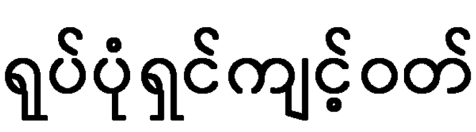
Mahāgandhāyung Sayadaw Janakābhivaṃsa编，缅甸阿马拉布拉 新缅甸三藏出版社，2001
《南传佛教在家居士须知》, Santagavesaka Bhikkhu编译，2007.03
《受戒仪规》, Dhammasiri Sāmaṇera等译，台湾嘉义新雨道场，2002.03
《半月僧务》, Santagavesaka Bhikkhu等译，台湾嘉义新雨道场，2002.03
《依止(Nissaya)》，他尼沙罗比丘原著，库那威罗比丘等编译，台湾嘉义新雨道场，1999.01
《戒律纲要(省略版)》, 泰僧皇 公拍耶跋折罗禅那婆罗娑亲王 御辑，黄谨良译，台湾法雨道场，2004
四、工具书
《巴利三藏、义注、复注、其它--辞典助读》电子版本1.9.1.0, Alobha, 中国, 2010
《パーリ语辞典》(增补改订版)，水野弘元，日本春秋社，2005年2月
《パーリ语佛教辞典》，云井昭善著，日本山喜房佛书林，1997
OD;[kwfpdef ygVd-Nrefrm tbd"mef (伍候新巴缅词典)，伍候新编，三藏部署协会，1999
wdyd#u ygVd-Nrefrm tbd"mef (三藏巴缅辞典, 21大册,未编完)，缅甸国家宗教部编，缅甸国家宗教部，1964- 2008
Pāḷi-English Dictionary, T.W.Rhys Davis & William Stede, Pāḷi Text Society, London, Reprinted 1989
Concise Pāḷi-English Dictionary, A.P.Buddhadatta Mahāthera, The Colombo Apothecaries'Co.,LTD, Sri Lanka, 1968
《巴汉词典》, A.P.Buddhadatta Mahāthera著, Mahāñāṇo Bhikkhu译，浮罗佛教修行林，2006
《现代汉语规范词典(第2版)》，李行健主编，外语教学与研究出版社∕语文出版社，2010.05
《缅汉词典》，北京大学东方语言文学系缅甸语教研室编 商务印书馆，2000